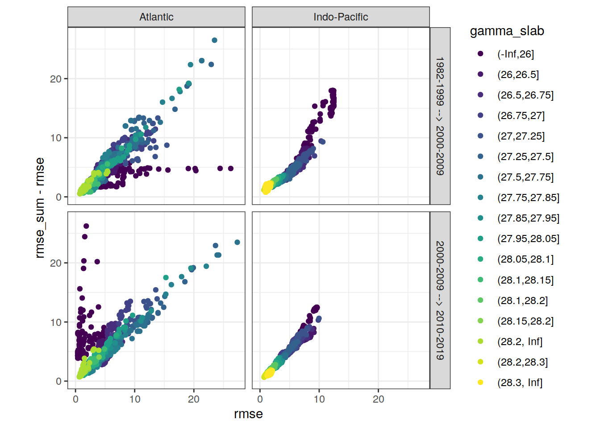
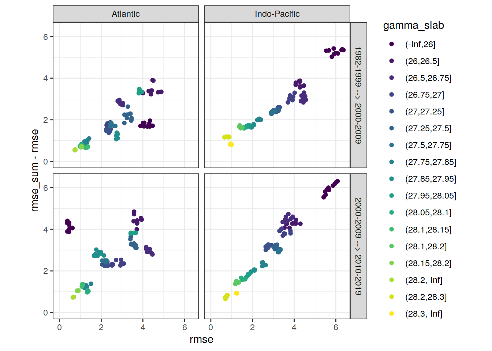
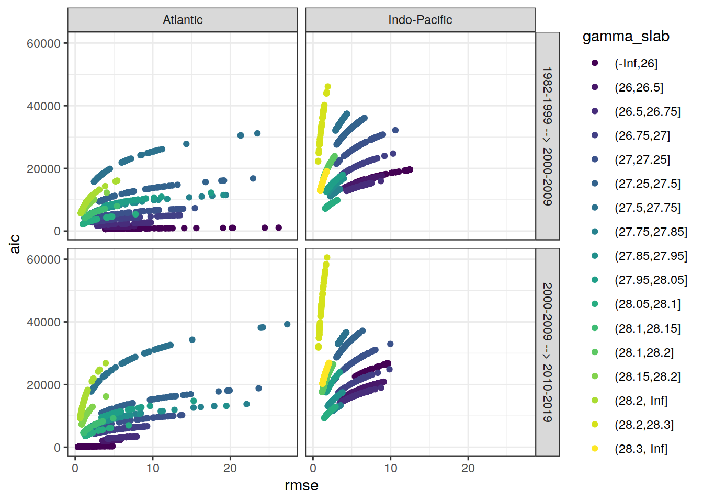
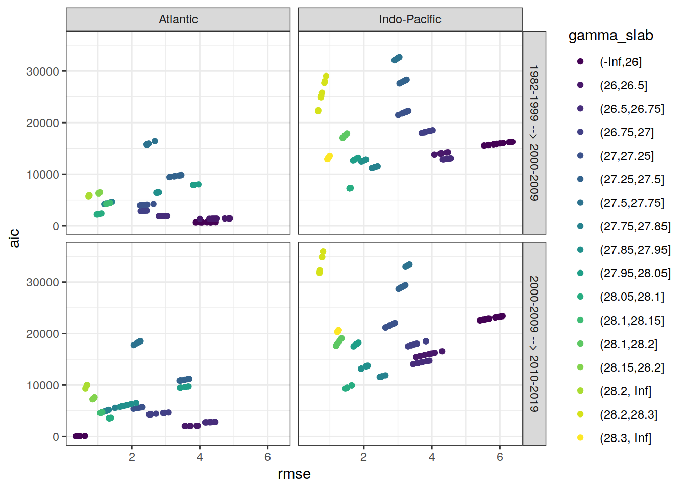

Last updated: 2021-06-06
Checks: 7 0
Knit directory: emlr_mod_v_XXX/
This reproducible R Markdown analysis was created with workflowr (version 1.6.2). The Checks tab describes the reproducibility checks that were applied when the results were created. The Past versions tab lists the development history.
Great! Since the R Markdown file has been committed to the Git repository, you know the exact version of the code that produced these results.
Great job! The global environment was empty. Objects defined in the global environment can affect the analysis in your R Markdown file in unknown ways. For reproduciblity it’s best to always run the code in an empty environment.
The command set.seed(20200707) was run prior to running the code in the R Markdown file. Setting a seed ensures that any results that rely on randomness, e.g. subsampling or permutations, are reproducible.
Great job! Recording the operating system, R version, and package versions is critical for reproducibility.
Nice! There were no cached chunks for this analysis, so you can be confident that you successfully produced the results during this run.
Great job! Using relative paths to the files within your workflowr project makes it easier to run your code on other machines.
Great! You are using Git for version control. Tracking code development and connecting the code version to the results is critical for reproducibility.
The results in this page were generated with repository version 8414e7c. See the Past versions tab to see a history of the changes made to the R Markdown and HTML files.
Note that you need to be careful to ensure that all relevant files for the analysis have been committed to Git prior to generating the results (you can use wflow_publish or wflow_git_commit). workflowr only checks the R Markdown file, but you know if there are other scripts or data files that it depends on. Below is the status of the Git repository when the results were generated:
Ignored files:
Ignored: .Rhistory
Ignored: .Rproj.user/
Unstaged changes:
Modified: data/auxillary/params_local.rds
Note that any generated files, e.g. HTML, png, CSS, etc., are not included in this status report because it is ok for generated content to have uncommitted changes.
These are the previous versions of the repository in which changes were made to the R Markdown (analysis/eMLR_model_fitting.Rmd) and HTML (docs/eMLR_model_fitting.html) files. If you’ve configured a remote Git repository (see ?wflow_git_remote), click on the hyperlinks in the table below to view the files as they were in that past version.
| File | Version | Author | Date | Message |
|---|---|---|---|---|
| html | 9baa3b2 | Donghe-Zhu | 2021-06-06 | debug |
| html | b7d99cf | Donghe-Zhu | 2021-06-06 | Build site. |
| html | 5d8fa90 | Donghe-Zhu | 2021-06-06 | Build site. |
| html | dbe2a95 | Donghe-Zhu | 2021-05-28 | Build site. |
| html | d50b039 | Donghe-Zhu | 2021-05-28 | Build site. |
| html | 441ebe5 | Donghe-Zhu | 2021-05-28 | Build site. |
| html | 6262ad3 | Donghe-Zhu | 2021-05-28 | Build site. |
| html | a61aa77 | Donghe-Zhu | 2021-05-28 | Build site. |
| html | b8dbce4 | Donghe-Zhu | 2021-05-28 | Build site. |
| html | 94a833e | Donghe-Zhu | 2021-05-27 | Build site. |
| html | 5e0bd64 | Donghe-Zhu | 2021-05-27 | Build site. |
| html | af1eadd | Donghe-Zhu | 2021-05-27 | Build site. |
| html | 9179bfe | Donghe-Zhu | 2021-05-27 | Build site. |
| html | 28cbe5e | Donghe-Zhu | 2021-05-27 | Build site. |
| html | a618f02 | Donghe-Zhu | 2021-05-27 | Build site. |
| html | 4623e38 | Donghe-Zhu | 2021-05-27 | Build site. |
| html | b81bb49 | Donghe-Zhu | 2021-05-27 | Build site. |
| html | 951e188 | Donghe-Zhu | 2021-05-27 | Build site. |
| html | e377833 | Donghe-Zhu | 2021-05-26 | Build site. |
| Rmd | 896faa0 | Donghe-Zhu | 2021-05-18 | final |
| html | 2705a04 | Donghe-Zhu | 2021-03-28 | Build site. |
| html | cd5f759 | Donghe-Zhu | 2021-03-28 | Build site. |
| Rmd | 347fb44 | Donghe-Zhu | 2021-03-28 | local rebuild |
| html | 75dda4d | Donghe-Zhu | 2021-03-27 | Build site. |
| html | 0b19f6e | Donghe-Zhu | 2021-03-27 | Build site. |
| html | e2704ca | Donghe-Zhu | 2021-03-27 | Build site. |
| Rmd | b1706de | Donghe-Zhu | 2021-03-27 | local rebuild |
| html | 3061a0b | Donghe-Zhu | 2021-03-27 | Build site. |
| html | b883157 | Donghe-Zhu | 2021-03-27 | Build site. |
| html | 0c20513 | Donghe-Zhu | 2021-03-26 | Build site. |
| html | d19654d | Donghe-Zhu | 2021-03-26 | Build site. |
| Rmd | 921c9db | Donghe-Zhu | 2021-03-26 | local rebuild |
| html | 6c53dbf | Donghe-Zhu | 2021-03-25 | Build site. |
| Rmd | 195db95 | Donghe-Zhu | 2021-03-24 | local rebuild |
| html | 1914a11 | Donghe-Zhu | 2021-03-24 | Build site. |
| Rmd | e32af14 | Donghe-Zhu | 2021-03-24 | local rebuild |
| html | 8be810e | Donghe-Zhu | 2021-03-23 | Build site. |
| Rmd | 85274db | Donghe-Zhu | 2021-03-23 | local rebuild |
| html | bf19764 | Donghe-Zhu | 2021-03-22 | Build site. |
| html | 3ec9d3d | Donghe-Zhu | 2021-03-22 | Build site. |
| Rmd | 073fa6a | Donghe-Zhu | 2021-03-22 | local rebuild |
| html | 134ace1 | Donghe-Zhu | 2021-03-22 | Build site. |
| html | f6d70a4 | Donghe-Zhu | 2021-03-22 | Build site. |
| html | 183443b | Donghe-Zhu | 2021-03-21 | Build site. |
| Rmd | adca794 | Donghe-Zhu | 2021-03-21 | local rebuild |
| html | 2e6976b | Donghe-Zhu | 2021-03-21 | Build site. |
| Rmd | 4e7de35 | Donghe-Zhu | 2021-03-21 | local rebuild |
| html | 51a42bd | Donghe-Zhu | 2021-03-16 | Build site. |
| html | f745381 | Donghe-Zhu | 2021-03-16 | Build site. |
| html | aecbf75 | Donghe-Zhu | 2021-03-14 | Build site. |
| html | 1b2a0c2 | Donghe-Zhu | 2021-03-14 | Build site. |
| html | 6733e48 | Donghe-Zhu | 2021-03-12 | Build site. |
| html | ba71e6a | Donghe-Zhu | 2021-03-12 | Build site. |
| html | 9dbf5bd | Donghe-Zhu | 2021-03-11 | Build site. |
| html | a49df30 | Donghe-Zhu | 2021-03-11 | Build site. |
| html | b3348a5 | Donghe-Zhu | 2021-03-11 | Build site. |
| Rmd | 026c061 | Donghe-Zhu | 2021-03-11 | local rebuild |
| html | 1c24ff7 | Donghe-Zhu | 2021-03-10 | Build site. |
| Rmd | dbd8ff8 | Donghe-Zhu | 2021-03-10 | local rebuild |
| html | 94ce5a8 | Donghe-Zhu | 2021-03-10 | Build site. |
| html | db33928 | Donghe-Zhu | 2021-03-10 | Build site. |
| html | 3d1f470 | Donghe-Zhu | 2021-03-10 | Build site. |
| html | 9b7bc66 | Donghe-Zhu | 2021-03-10 | Build site. |
| Rmd | 498be1d | Donghe-Zhu | 2021-03-10 | local rebuild |
| html | 4168b43 | Donghe-Zhu | 2021-03-10 | Build site. |
| html | 5365f80 | Donghe-Zhu | 2021-03-10 | Build site. |
| html | 2b6c392 | Donghe-Zhu | 2021-03-10 | Build site. |
| html | 9f58753 | Donghe-Zhu | 2021-03-10 | Build site. |
| Rmd | e255177 | Donghe-Zhu | 2021-03-10 | local rebuild |
| html | f2a7146 | Donghe-Zhu | 2021-03-10 | Build site. |
| html | fd528ed | Donghe-Zhu | 2021-03-10 | Build site. |
| html | 9d5a62c | Donghe-Zhu | 2021-03-10 | Build site. |
| Rmd | 09b27ef | Donghe-Zhu | 2021-03-10 | local rebuild |
| html | 5d1e70b | Donghe-Zhu | 2021-03-10 | Build site. |
| Rmd | 6125b2d | Donghe-Zhu | 2021-03-10 | local rebuild |
| html | 2093979 | Donghe-Zhu | 2021-03-10 | Build site. |
| Rmd | 558d285 | Donghe-Zhu | 2021-03-10 | local rebuild |
| html | b865899 | Donghe-Zhu | 2021-03-10 | Build site. |
| html | cc2a956 | Donghe-Zhu | 2021-03-10 | Build site. |
| Rmd | 2a633bd | Donghe-Zhu | 2021-03-10 | local rebuild |
| html | 60689fb | Donghe-Zhu | 2021-03-10 | Build site. |
| html | 9230b52 | Donghe-Zhu | 2021-03-10 | Build site. |
| html | dba33c8 | Donghe-Zhu | 2021-03-09 | Build site. |
| Rmd | 6a60e02 | Donghe-Zhu | 2021-03-09 | local rebuild |
| html | 17f1c4a | Donghe-Zhu | 2021-03-09 | Build site. |
| Rmd | 4a4a400 | Donghe-Zhu | 2021-03-09 | local rebuild |
| html | c024d1a | Donghe-Zhu | 2021-03-09 | Build site. |
| Rmd | 34744ec | Donghe-Zhu | 2021-03-09 | local rebuild |
| html | 02f7242 | Donghe-Zhu | 2021-03-09 | Build site. |
| html | 6f50bc6 | Donghe-Zhu | 2021-03-09 | Build site. |
| Rmd | 88f0729 | Donghe-Zhu | 2021-03-09 | local rebuild |
| html | 1691156 | Donghe-Zhu | 2021-03-08 | Build site. |
| html | c0ceaf8 | Donghe-Zhu | 2021-03-08 | Build site. |
| html | 058e0a1 | Donghe-Zhu | 2021-03-08 | Build site. |
| html | 112dea0 | Donghe-Zhu | 2021-03-08 | Build site. |
| html | 1843412 | Donghe-Zhu | 2021-03-08 | Build site. |
| Rmd | d709f6c | Donghe-Zhu | 2021-03-08 | local rebuild |
| html | 65b0cef | Donghe-Zhu | 2021-03-07 | Build site. |
| html | 4083a6c | Donghe-Zhu | 2021-03-07 | Build site. |
| html | 3fbbfa4 | Donghe-Zhu | 2021-03-07 | Build site. |
| html | 627c8fb | Donghe-Zhu | 2021-03-07 | Build site. |
| html | 3607f4d | Donghe-Zhu | 2021-03-07 | Build site. |
| html | 9ef3222 | Donghe-Zhu | 2021-03-05 | Build site. |
| Rmd | 2be54f9 | Donghe-Zhu | 2021-03-05 | local rebuild |
| html | 8c1e978 | Donghe-Zhu | 2021-03-05 | Build site. |
| html | 865f68c | Donghe-Zhu | 2021-03-05 | Build site. |
| html | ee69bc1 | Donghe-Zhu | 2021-03-05 | Build site. |
| html | a79291f | Donghe-Zhu | 2021-03-05 | Build site. |
| html | e8c6f30 | Donghe-Zhu | 2021-03-04 | Build site. |
| html | 59288fe | Donghe-Zhu | 2021-03-04 | Build site. |
| html | 731abc8 | Donghe-Zhu | 2021-03-04 | Build site. |
| html | e2a5a33 | Donghe-Zhu | 2021-03-04 | Build site. |
| html | c7892c1 | Donghe-Zhu | 2021-03-04 | Build site. |
| html | 924430b | Donghe-Zhu | 2021-03-03 | Build site. |
| html | 0d0bca1 | Donghe-Zhu | 2021-03-03 | Build site. |
| html | cb63c16 | Donghe-Zhu | 2021-03-03 | Build site. |
| html | ffda45a | Donghe-Zhu | 2021-03-03 | Build site. |
| html | 691ba81 | Donghe-Zhu | 2021-03-03 | Build site. |
| html | c5e45a2 | Donghe-Zhu | 2021-03-03 | Build site. |
| html | 89c3e58 | Donghe-Zhu | 2021-03-03 | Build site. |
| html | c407a50 | Donghe-Zhu | 2021-03-03 | Build site. |
| html | c911669 | Donghe-Zhu | 2021-03-03 | Build site. |
| Rmd | e1f9d21 | Donghe-Zhu | 2021-03-03 | local rebuild |
| html | b71c719 | Donghe-Zhu | 2021-03-01 | Build site. |
| html | 13666ca | Donghe-Zhu | 2021-03-01 | Build site. |
| Rmd | c3195f4 | Donghe-Zhu | 2021-03-01 | local rebuild |
| html | c6e60fe | Donghe-Zhu | 2021-03-01 | Build site. |
| Rmd | 8ef147d | Donghe-Zhu | 2021-03-01 | local rebuild |
| html | 7a388f7 | Donghe-Zhu | 2021-03-01 | Build site. |
| html | 799e913 | Donghe-Zhu | 2021-03-01 | Build site. |
| Rmd | aa780a7 | Donghe-Zhu | 2021-03-01 | local rebuild |
| html | 66ff99f | Donghe-Zhu | 2021-03-01 | Build site. |
| html | ac9bb7a | Donghe-Zhu | 2021-02-28 | Build site. |
| html | efdc047 | Donghe-Zhu | 2021-02-28 | Build site. |
| html | e9a7418 | Donghe-Zhu | 2021-02-28 | Build site. |
| Rmd | eac1b0e | Donghe-Zhu | 2021-02-28 | local rebuild |
| html | e152917 | Donghe-Zhu | 2021-02-28 | Build site. |
| html | feb991c | Donghe-Zhu | 2021-02-27 | Build site. |
| Rmd | 4563314 | Donghe-Zhu | 2021-02-27 | local rebuild |
| html | 287123c | Donghe-Zhu | 2021-02-27 | Build site. |
| Rmd | 764a9c2 | Donghe-Zhu | 2021-02-27 | local rebuild |
| html | 54d5b5b | Donghe-Zhu | 2021-02-27 | Build site. |
| Rmd | 2e836bf | Donghe-Zhu | 2021-02-27 | local rebuild |
| html | 330f064 | Donghe-Zhu | 2021-02-27 | Build site. |
| Rmd | f360282 | Donghe-Zhu | 2021-02-27 | local rebuild |
| html | adbc9bc | Donghe-Zhu | 2021-02-27 | Build site. |
| Rmd | a8a8f9c | Donghe-Zhu | 2021-02-27 | local rebuild |
| html | 5937141 | Donghe-Zhu | 2021-02-27 | Build site. |
| Rmd | 5f0bfca | Donghe-Zhu | 2021-02-27 | local rebuild |
| html | 4414bbf | Donghe-Zhu | 2021-02-27 | Build site. |
| html | a265efb | Donghe-Zhu | 2021-02-27 | Build site. |
| html | 19edd1e | Donghe-Zhu | 2021-02-27 | Build site. |
| Rmd | 1ae5bb4 | Donghe-Zhu | 2021-02-27 | local rebuild |
| html | f20483f | Donghe-Zhu | 2021-02-26 | Build site. |
| html | 6a2c7b3 | Donghe-Zhu | 2021-02-25 | Build site. |
| html | 02b976d | Donghe-Zhu | 2021-02-24 | Build site. |
| html | 354c224 | Donghe-Zhu | 2021-02-24 | Build site. |
| Rmd | d910d39 | Donghe-Zhu | 2021-02-24 | local rebuild |
| html | 1a0a88a | Donghe-Zhu | 2021-02-24 | Build site. |
| Rmd | 663e891 | Donghe-Zhu | 2021-02-24 | local rebuild |
| html | 57f701e | Donghe-Zhu | 2021-02-24 | Build site. |
| html | 06f3149 | Donghe-Zhu | 2021-02-16 | Build site. |
| html | 401eab3 | Donghe-Zhu | 2021-02-15 | Build site. |
| html | e3bba84 | Donghe-Zhu | 2021-02-15 | Build site. |
| html | 5dce4b1 | Donghe-Zhu | 2021-02-15 | Build site. |
| Rmd | 35b0f2e | Donghe-Zhu | 2021-02-15 | local rebuild |
| html | 4469a0c | Donghe-Zhu | 2021-02-13 | Build site. |
| Rmd | 8186d57 | Donghe-Zhu | 2021-02-10 | apply nr_obs |
| html | 5ae6a69 | Donghe-Zhu | 2021-02-10 | Build site. |
| Rmd | eeb6557 | Donghe-Zhu | 2021-02-10 | local rebuild |
| html | 05385dc | Donghe-Zhu | 2021-02-10 | Build site. |
| html | f791ae4 | Donghe-Zhu | 2021-02-09 | Build site. |
| html | f71ae34 | Donghe-Zhu | 2021-02-09 | Build site. |
| html | c011832 | Donghe-Zhu | 2021-02-09 | Build site. |
| html | a145fa7 | Donghe-Zhu | 2021-02-09 | Build site. |
| Rmd | 37a41c8 | Donghe-Zhu | 2021-02-09 | local rebuild |
| html | c344e42 | Donghe-Zhu | 2021-02-08 | Build site. |
| Rmd | 8f5fa79 | Donghe-Zhu | 2021-02-08 | local rebuild |
| html | 2f095d7 | Donghe-Zhu | 2021-02-07 | Build site. |
| html | 2305044 | Donghe-Zhu | 2021-02-07 | Build site. |
| Rmd | c3638c1 | Donghe-Zhu | 2021-02-07 | local rebuild |
| html | 1fad5f1 | Donghe-Zhu | 2021-02-07 | Build site. |
| html | ca03c39 | Donghe-Zhu | 2021-02-07 | Build site. |
| html | e2ffc14 | Donghe-Zhu | 2021-02-05 | Build site. |
| html | cd7c52c | Donghe-Zhu | 2021-02-04 | Build site. |
| Rmd | bcf91a8 | jens-daniel-mueller | 2021-02-04 | separate MLR tables, added plot residuals vs location |
| html | bcf84f4 | Donghe-Zhu | 2021-02-02 | Build site. |
| html | a518739 | Donghe-Zhu | 2021-02-01 | Build site. |
| html | 61666de | Donghe-Zhu | 2021-01-31 | Build site. |
| html | 865b582 | Donghe-Zhu | 2021-01-31 | Build site. |
| html | 3e68089 | Donghe-Zhu | 2021-01-31 | Build site. |
| html | ecf335c | Donghe-Zhu | 2021-01-31 | Build site. |
| html | a618965 | Donghe-Zhu | 2021-01-31 | Build site. |
| html | 59e006e | Donghe-Zhu | 2021-01-31 | Build site. |
| html | a1c8f87 | Donghe-Zhu | 2021-01-31 | Build site. |
| html | ae5c18f | Donghe-Zhu | 2021-01-31 | Build site. |
| html | b50fe52 | Donghe-Zhu | 2021-01-31 | Build site. |
| Rmd | ac99ae5 | jens-daniel-mueller | 2021-01-29 | code review |
| html | ac99ae5 | jens-daniel-mueller | 2021-01-29 | code review |
| html | b5bdcaf | Donghe-Zhu | 2021-01-29 | Build site. |
| Rmd | b234505 | Donghe-Zhu | 2021-01-29 | MLR approach across all depth |
| html | 442010d | Donghe-Zhu | 2021-01-29 | Build site. |
| Rmd | e67e7dd | Donghe-Zhu | 2021-01-29 | surface equilibrium approach across all latitudes irrespective of gamma |
| html | 372adf5 | Donghe-Zhu | 2021-01-29 | Build site. |
| html | af8788e | Donghe-Zhu | 2021-01-29 | Build site. |
| html | 21c91c9 | Donghe-Zhu | 2021-01-29 | Build site. |
| html | eded038 | Donghe-Zhu | 2021-01-29 | Build site. |
| html | 541d4dd | Donghe-Zhu | 2021-01-29 | Build site. |
| html | 6a75576 | Donghe-Zhu | 2021-01-28 | Build site. |
| html | 16fba40 | Donghe-Zhu | 2021-01-28 | Build site. |
| Rmd | aecf0c6 | Donghe-Zhu | 2021-01-28 | diagnostic ploting |
| Rmd | a02684e | Donghe-Zhu | 2021-01-28 | error |
| Rmd | 4584be9 | Donghe-Zhu | 2021-01-28 | latest |
| html | 12bc567 | Donghe-Zhu | 2021-01-27 | Build site. |
| html | ceed31b | Donghe-Zhu | 2021-01-27 | Build site. |
| html | 342402d | Donghe-Zhu | 2021-01-27 | Build site. |
| html | 5bad5c2 | Donghe-Zhu | 2021-01-27 | Build site. |
| Rmd | c2c9529 | Donghe-Zhu | 2021-01-27 | random subsetting based on lat |
| html | 61efb56 | Donghe-Zhu | 2021-01-25 | Build site. |
| html | 48f638e | Donghe-Zhu | 2021-01-25 | Build site. |
| html | c1cec47 | Donghe-Zhu | 2021-01-25 | Build site. |
| html | 05ffb0c | Donghe-Zhu | 2021-01-25 | Build site. |
| html | 8b97165 | Donghe-Zhu | 2021-01-25 | Build site. |
| html | c569946 | Donghe-Zhu | 2021-01-24 | Build site. |
| html | a2f0d56 | Donghe-Zhu | 2021-01-23 | Build site. |
| html | 28509fc | Donghe-Zhu | 2021-01-23 | Build site. |
| html | 4c28e4a | Donghe-Zhu | 2021-01-22 | Build site. |
| html | 24cc264 | jens-daniel-mueller | 2021-01-22 | cleaned /docs before creating copies |
| html | 88eb28f | Donghe-Zhu | 2021-01-21 | Build site. |
| html | 2679490 | Donghe-Zhu | 2021-01-21 | Build site. |
| html | 7891955 | Donghe-Zhu | 2021-01-21 | Build site. |
| html | d4cf1cb | Donghe-Zhu | 2021-01-21 | Build site. |
| Rmd | 167eeec | Donghe-Zhu | 2021-01-21 | surface DIC calculation with atmospheric equilibrium option |
| html | 1f3e5b6 | jens-daniel-mueller | 2021-01-20 | Build site. |
| html | 0e7bdf1 | jens-daniel-mueller | 2021-01-15 | cleaning template repository |
| html | 73cbef3 | jens-daniel-mueller | 2021-01-15 | Build site. |
| html | 4571843 | jens-daniel-mueller | 2021-01-14 | revision and html deleted for template copying |
| html | 23151cd | jens-daniel-mueller | 2021-01-14 | Build site. |
| html | b3564aa | jens-daniel-mueller | 2021-01-14 | Build site. |
| html | 8d032c3 | jens-daniel-mueller | 2021-01-14 | Build site. |
| html | 022871c | Donghe-Zhu | 2021-01-13 | Build site. |
| Rmd | d44f36f | Donghe-Zhu | 2021-01-13 | reorder analysis final |
| html | 17dee1d | jens-daniel-mueller | 2021-01-13 | Build site. |
| Rmd | 9e04fd7 | jens-daniel-mueller | 2021-01-13 | local rebuild after revision |
| html | a076226 | Donghe-Zhu | 2021-01-11 | Build site. |
| Rmd | 52eff18 | Donghe-Zhu | 2021-01-09 | Implemet model_run and subsetting |
| html | 7cdea0c | jens-daniel-mueller | 2021-01-06 | Build site. |
| Rmd | b5934dd | jens-daniel-mueller | 2021-01-06 | local rebuild after revision |
| html | fa85b93 | jens-daniel-mueller | 2021-01-06 | Build site. |
| html | e5cb81a | Donghe-Zhu | 2021-01-05 | Build site. |
| Rmd | 608cc45 | Donghe-Zhu | 2021-01-05 | modification of analysis |
| html | a499f10 | Donghe-Zhu | 2021-01-05 | Build site. |
| Rmd | 715bdb4 | Donghe-Zhu | 2021-01-02 | model modification |
| html | fb8a752 | Donghe-Zhu | 2020-12-23 | Build site. |
| Rmd | 82e3c9c | Donghe-Zhu | 2020-12-23 | first build after creating model template |
| html | 8fae0b2 | Donghe-Zhu | 2020-12-21 | Build site. |
| Rmd | 00a1322 | Donghe-Zhu | 2020-12-21 | first build after creating model template |
| Rmd | d73ae35 | Donghe-Zhu | 2020-12-21 | first version with lm error |
| html | c8b76b3 | jens-daniel-mueller | 2020-12-19 | Build site. |
| Rmd | b5fedce | jens-daniel-mueller | 2020-12-19 | first build after creating model template |
| Rmd | 8e8abf5 | Jens Müller | 2020-12-18 | Initial commit |
Required are:
GLODAP <-
read_csv(paste(path_version_data,
"GLODAPv2.2020_MLR_fitting_ready.csv",
sep = ""))Find all possible combinations of following considered predictor variables:
# the following code is a workaround to find all predictor combinations
# using the olsrr package and fit all models for one era, slab, and basin
i_basin <- unique(GLODAP$basin)[1]
i_era <- unique(GLODAP$era)[1]
# subset one basin and era for fitting
GLODAP_basin_era <- GLODAP %>%
filter(basin == i_basin, era == i_era)
i_gamma_slab <- unique(GLODAP_basin_era$gamma_slab)[1]
print(i_gamma_slab)
# subset one gamma slab
GLODAP_basin_era_slab <- GLODAP_basin_era %>%
filter(gamma_slab == i_gamma_slab)
# fit the full linear model, i.e. all predictor combinations
lm_full <- lm(paste(
params_local$MLR_target,
paste(params_local$MLR_predictors, collapse = " + "),
sep = " ~ "
),
data = GLODAP_basin_era_slab)
# fit linear models for all possible predictor combinations
# unfortunately, this functions does not provide model coefficients (yet)
lm_all <- ols_step_all_possible(lm_full)
# convert to tibble
lm_all <- as_tibble(lm_all)
# extract relevant columns and format model formula
lm_all <- lm_all %>%
select(n, predictors) %>%
mutate(lm_coeff = str_replace_all(predictors, " ", " + "),
lm_coeff = paste(params_local$MLR_target, "~", lm_coeff))
# remove certain predictor combinations
# lm_rm_ph <- lm_all %>%
# filter(str_detect(lm_coeff, "phosphate_star")) %>%
# mutate(lm_coeff_filter = str_remove(lm_coeff, "phosphate_star")) %>%
# filter(
# str_detect(lm_coeff_filter, "oxygen") &
# str_detect(lm_coeff_filter, "phosphate")
# )
# lm_rm_si <- lm_all %>%
# filter(str_detect(lm_coeff, "silicate_star")) %>%
# mutate(lm_coeff_filter = str_remove(lm_coeff, "silicate_star")) %>%
# filter(str_detect(lm_coeff_filter, "silicate"))
# lm_rm_o2 <- lm_all %>%
# filter(str_detect(lm_coeff, "phosphate_star")) %>%
# mutate(lm_coeff_filter = str_remove(lm_coeff, "phosphate_star")) %>%
# filter(
# str_detect(lm_coeff_filter, "phosphate") &
# str_detect(lm_coeff_filter, "oxygen")
# )
# lm_rm <- bind_rows(lm_rm_ph, lm_rm_o2) %>%
# select(-lm_coeff_filter) %>%
# unique()
# lm_rm <- lm_rm_ph %>%
# select(-lm_coeff_filter) %>%
# unique()
#
# lm_all <- anti_join(lm_all, lm_rm)
# remove temp sal predictor combination
# lm_all <- lm_all %>%
# # filter(!(
# # str_detect(lm_coeff, "temp") &
# # str_detect(lm_coeff, "phosphate_star")
# # )) %>%
# mutate(lm_coeff_filter = str_remove(lm_coeff, "phosphate_star")) %>%
# filter(!(str_detect(lm_coeff_filter, "nitrate") &
# str_detect(lm_coeff_filter, "phosphate")
# )) %>%
# filter(!(
# str_detect(lm_coeff_filter, "temp") &
# str_detect(lm_coeff_filter, "sal")
# )) %>%
# # filter(!(
# # str_detect(lm_coeff_filter, "oxygen") &
# # str_detect(lm_coeff_filter, "aou")
# # )) %>%
# select(-lm_coeff_filter)
# remove helper objects
rm(
i_gamma_slab,
i_era,
i_basin,
GLODAP_basin_era,
GLODAP_basin_era_slab,
lm_full,
lm_rm_ph,
lm_rm_si,
lm_rm_o2,
lm_rm
)
# lm_full <- lm(paste(
# params_local$MLR_target,
# paste(params_local$MLR_predictors, collapse = " + "),
# sep = " ~ "
# ),
# data = GLODAP_basin_era_slab)
#
# lm_full <-
# loess(
# cstar_tref ~ sal + temp + aou + phosphate,
# span = 0.1,
# degree = 1,
# data = GLODAP_basin_era_slab
# )Select combinations with a total number of predictors in the range:
lm_all <- lm_all %>%
filter(n >= params_local$MLR_predictors_min,
n <= params_local$MLR_predictors_max)This results in a total number of MLR models of:
Individual linear regression models were fitted for the chosen target variable:
as a function of each predictor combination. Fitting was performed separately within each basin, era, and slab. Model diagnostics, such as the root mean squared error (RMSE), were calculated for each fitted model.
# loop across all basins, era, gamma slabs, and MLRs
# fit all MLR models
for (i_basin in unique(GLODAP$basin)) {
for (i_era in unique(GLODAP$era)) {
#i_basin <- unique(GLODAP$basin)[1]
#i_era <- unique(GLODAP$era)[1]
print(i_basin)
print(i_era)
GLODAP_basin_era <- GLODAP %>%
filter(basin == i_basin, era == i_era)
for (i_gamma_slab in unique(GLODAP_basin_era$gamma_slab)) {
#i_gamma_slab <- unique(GLODAP_basin_era$gamma_slab)[1]
print(i_gamma_slab)
GLODAP_basin_era_slab <- GLODAP_basin_era %>%
filter(gamma_slab == i_gamma_slab)
# number of observations used for each fitting model
i_nr_obs = nrow(GLODAP_basin_era_slab)
for (i_predictors in unique(lm_all$predictors)) {
#i_predictors <- unique(lm_all$predictors)[100]
# extract one model definition
i_lm <- lm_all %>%
filter(predictors == i_predictors) %>%
select(lm_coeff) %>%
pull()
# extract number of predictors
i_n_predictors <- lm_all %>%
filter(predictors == i_predictors) %>%
select(n) %>%
pull()
if (i_nr_obs > i_n_predictors) {
# fit model
if (params_local$MLR_type == "rlm") {
i_lm_fit <- MASS::rlm(as.formula(i_lm),
data = GLODAP_basin_era_slab)
}
if (params_local$MLR_type == "lm") {
i_lm_fit <- lm(as.formula(i_lm),
data = GLODAP_basin_era_slab)
}
# find max predictor correlation
i_cor_max <- GLODAP_basin_era_slab %>%
select(!!!syms(str_split(i_predictors, " ",
simplify = TRUE))) %>%
correlate(quiet = TRUE) %>%
select(-term) %>%
abs() %>%
max(na.rm = TRUE)
# calculate root mean squared error
i_rmse <- sqrt(c(crossprod(i_lm_fit$residuals)) /
length(i_lm_fit$residuals))
# calculate maximum residual
i_resid_max <- max(abs(i_lm_fit$residuals))
# calculate Akaike information criterion aic
i_aic <- AIC(i_lm_fit)
# calculate max VIF
if (is.na(max(i_lm_fit$coefficients))){
i_vif_max <- as.double("NA")
} else{
i_vif_max <- max(vif(i_lm_fit))
}
# collect model coefficients and diagnostics
coefficients <- tidy(i_lm_fit)
coefficients <- coefficients %>%
mutate(
basin = i_basin,
era = i_era,
gamma_slab = i_gamma_slab,
model = i_lm,
nr_obs = i_nr_obs,
rmse = i_rmse,
aic = i_aic,
vif_max = i_vif_max,
resid_max = i_resid_max,
n_predictors = i_n_predictors,
na_predictor = anyNA(coefficients$estimate),
cor_max = i_cor_max
)
if (exists("lm_all_fitted")) {
lm_all_fitted <- bind_rows(lm_all_fitted, coefficients)
}
if (!exists("lm_all_fitted")) {
lm_all_fitted <- coefficients
}
}
}
}
}
}
rm(
i_lm_fit,
coefficients,
i_rmse,
GLODAP_basin_era,
GLODAP_basin_era_slab,
i_lm,
i_basin,
i_era,
i_gamma_slab,
i_nr_obs,
i_predictors,
i_aic,
i_vif_max,
i_n_predictors,
i_resid_max
)Coefficients are prepared for the mapping of Cant and the chosen target variable.
# lm_all_fitted <- lm_all_fitted_1
# lm_all_fitted <-
# read_csv(paste(path_version_data,
# "lm_all_fitted.csv",
# sep = ""))
# select relevant columns
lm_all_fitted <- lm_all_fitted %>%
select(
basin,
gamma_slab,
era,
model,
nr_obs,
n_predictors,
term,
estimate,
rmse,
aic,
vif_max,
resid_max,
na_predictor,
cor_max
)
# set coefficient to zero if not fitted (=NA)
lm_all_fitted <- lm_all_fitted %>%
mutate(estimate = if_else(is.na(estimate), 0, estimate))
# Prepare model coefficients for mapping of target variable
lm_all_fitted_wide <- lm_all_fitted %>%
pivot_wider(
values_from = estimate,
names_from = term,
names_prefix = "coeff_",
values_fill = 0
)Within each basin and slab, the following number of best linear regression models was selected:
The criterion used to select the best models was:
The criterion was summed up for two adjacent eras, and the models with lowest summed values were selected.
Please note, that currently the lm() function produces NAs for some predictors. It is not yet entirely clear when this happens, but presumably it is caused by some form of collinearity between predictors, such that including another predictor does not help to explain the target variable any better. The issues also expresses as exactly identical rmse values of different models. As an interim solution, models with fitted NA predictors were not included.
# remove models with predictors fitted as NA
lm_all_fitted_wide <- lm_all_fitted_wide %>%
filter(na_predictor == FALSE)To avoid multicollinearity among predictors, models were excluded with a VIF above:
After removing models affected by multicollinearity, the targeted number of MLRs (10) was undercut in following fitting units:
# remove models with predictors fitted as NA
lm_all_fitted_wide <- lm_all_fitted_wide %>%
filter(vif_max <= params_local$vif_max)
# lm_all_fitted_wide_check <- lm_all_fitted_wide %>%
# group_by(era, basin, gamma_slab) %>%
# count()
# filter(n < params_local$MLR_number)# calculate RMSE sum for adjacent eras
lm_all_fitted_wide_eras <- lm_all_fitted_wide %>%
select(basin, gamma_slab, n_predictors, model, era, nr_obs, rmse, aic, vif_max, resid_max) %>%
arrange(era) %>%
group_by(basin, gamma_slab, model) %>%
mutate(
eras = paste(lag(era), era, sep = " --> "),
rmse_sum = rmse + lag(rmse),
rmse_lag = lag(rmse),
aic_sum = aic + lag(aic),
vif_max_sum = vif_max + lag(vif_max)
) %>%
ungroup() %>%
select(-c(era)) %>%
drop_na() %>%
filter(eras != "1982-1999 --> 2010-2019",
eras != "1982-1999 --> 2008-2019")
#filter tripairs
lm_all_fitted_wide_eras <- lm_all_fitted_wide_eras %>%
mutate(rmse = round(rmse, digits = 7), rmse_lag = round(rmse_lag, digits = 7)) %>%
group_by(basin, gamma_slab, eras, rmse) %>%
sample_n(1) %>%
ungroup()
# calculate rank for each era
lm_all_fitted_wide_eras <- lm_all_fitted_wide_eras %>%
group_by(eras, basin, gamma_slab) %>%
mutate(rank = rank(rmse, ties.method="first"),
rank_sum = rank + rank(rmse_lag, ties.method="first")) %>%
ungroup()
# subset models with lowest summed criterion
# chose which criterion is applied
if (params_local$MLR_criterion == "aic") {
lm_best <- lm_all_fitted_wide_eras %>%
group_by(basin, gamma_slab, eras) %>%
slice_min(order_by = aic_sum,
with_ties = FALSE,
n = params_local$MLR_number) %>%
ungroup() %>%
arrange(basin, gamma_slab, eras, aic_sum)
} else if (params_local$MLR_criterion == "rmse") {
lm_best <- lm_all_fitted_wide_eras %>%
group_by(basin, gamma_slab, eras) %>%
slice_min(order_by = rmse_sum,
with_ties = FALSE,
n = params_local$MLR_number) %>%
ungroup() %>%
arrange(basin, gamma_slab, eras, rmse_sum)
} else {
lm_best <- lm_all_fitted_wide_eras %>%
group_by(basin, gamma_slab, eras) %>%
slice_min(order_by = rank_sum,
with_ties = FALSE,
n = params_local$MLR_number) %>%
ungroup() %>%
arrange(basin, gamma_slab, eras, rank_sum)
}lm_best %>%
kable() %>%
add_header_above() %>%
kable_styling() %>%
scroll_box(width = "100%", height = "400px")| basin | gamma_slab | n_predictors | model | nr_obs | rmse | aic | vif_max | resid_max | eras | rmse_sum | rmse_lag | aic_sum | vif_max_sum | rank | rank_sum |
|---|---|---|---|---|---|---|---|---|---|---|---|---|---|---|---|
| Atlantic | (-Inf,26] | 5 | cstar_tref ~ sal + temp + aou + silicate + phosphate | 114 | 3.8820390 | 646.76818 | 25.256572 | 9.7489385 | 1982-1999 –> 2000-2009 | 5.588248 | 1.7062087 | 926.4051 | 47.472702 | 2 | 8 |
| Atlantic | (-Inf,26] | 5 | cstar_tref ~ sal + temp + nitrate + phosphate + phosphate_star | 114 | 4.0520217 | 656.53922 | 66.531049 | 12.2839748 | 1982-1999 –> 2000-2009 | 5.737887 | 1.6858651 | 934.5448 | 83.066860 | 9 | 12 |
| Atlantic | (-Inf,26] | 5 | cstar_tref ~ sal + aou + silicate + phosphate + phosphate_star | 114 | 4.0098791 | 654.15552 | 22.107104 | 11.6771107 | 1982-1999 –> 2000-2009 | 5.859450 | 1.8495710 | 944.7649 | 92.289821 | 8 | 24 |
| Atlantic | (-Inf,26] | 5 | cstar_tref ~ sal + temp + silicate + phosphate + phosphate_star | 114 | 4.2118954 | 665.36209 | 65.041291 | 9.7814624 | 1982-1999 –> 2000-2009 | 5.891316 | 1.6794207 | 942.8468 | 76.045365 | 13 | 14 |
| Atlantic | (-Inf,26] | 5 | cstar_tref ~ sal + aou + nitrate + phosphate + phosphate_star | 114 | 4.0699122 | 657.54367 | 12.883487 | 13.3831558 | 1982-1999 –> 2000-2009 | 5.927989 | 1.8580764 | 948.7770 | 99.275580 | 10 | 27 |
| Atlantic | (-Inf,26] | 5 | cstar_tref ~ sal + temp + aou + silicate + phosphate_star | 114 | 4.3063973 | 670.42116 | 110.125406 | 8.5586959 | 1982-1999 –> 2000-2009 | 5.994314 | 1.6879164 | 948.5921 | 122.011182 | 16 | 20 |
| Atlantic | (-Inf,26] | 5 | cstar_tref ~ sal + temp + nitrate + silicate + phosphate_star | 114 | 4.3291998 | 671.62525 | 65.137202 | 8.6574217 | 1982-1999 –> 2000-2009 | 6.009902 | 1.6807025 | 949.2137 | 78.027406 | 17 | 19 |
| Atlantic | (-Inf,26] | 5 | cstar_tref ~ sal + temp + aou + nitrate + silicate | 114 | 4.3053110 | 670.36364 | 53.731330 | 11.5576123 | 1982-1999 –> 2000-2009 | 6.119220 | 1.8139088 | 958.3251 | 243.261518 | 15 | 27 |
| Atlantic | (-Inf,26] | 5 | cstar_tref ~ sal + temp + aou + nitrate + phosphate | 114 | 4.4686809 | 678.85525 | 14.045228 | 13.3716197 | 1982-1999 –> 2000-2009 | 6.183325 | 1.7146436 | 959.1628 | 39.949146 | 29 | 36 |
| Atlantic | (-Inf,26] | 4 | cstar_tref ~ sal + temp + silicate + phosphate_star | 114 | 4.3390340 | 670.14258 | 50.055725 | 8.8086427 | 1982-1999 –> 2000-2009 | 6.296380 | 1.9573457 | 966.4544 | 58.210336 | 18 | 39 |
| Atlantic | (-Inf,26] | 5 | cstar_tref ~ sal + nitrate + silicate + phosphate + phosphate_star | 51 | 0.3752271 | 58.74890 | 37.985442 | 1.0814134 | 2000-2009 –> 2010-2019 | 4.270256 | 3.8950285 | 706.2787 | 93.871279 | 5 | 9 |
| Atlantic | (-Inf,26] | 5 | cstar_tref ~ sal + temp + aou + silicate + phosphate | 51 | 0.4585669 | 79.20752 | 37.579134 | 1.1603831 | 2000-2009 –> 2010-2019 | 4.340606 | 3.8820390 | 725.9757 | 62.835706 | 13 | 15 |
| Atlantic | (-Inf,26] | 5 | cstar_tref ~ sal + aou + silicate + phosphate + phosphate_star | 51 | 0.4665504 | 80.96802 | 112.344902 | 1.1999270 | 2000-2009 –> 2010-2019 | 4.476430 | 4.0098791 | 735.1235 | 134.452006 | 16 | 24 |
| Atlantic | (-Inf,26] | 5 | cstar_tref ~ sal + temp + nitrate + phosphate + phosphate_star | 51 | 0.6149898 | 109.14446 | 71.959254 | 1.6142810 | 2000-2009 –> 2010-2019 | 4.667011 | 4.0520217 | 765.6837 | 138.490302 | 19 | 28 |
| Atlantic | (-Inf,26] | 5 | cstar_tref ~ sal + temp + aou + nitrate + silicate | 51 | 0.3632646 | 55.44411 | 71.191185 | 0.9827982 | 2000-2009 –> 2010-2019 | 4.668576 | 4.3053110 | 725.8078 | 124.922515 | 3 | 18 |
| Atlantic | (-Inf,26] | 5 | cstar_tref ~ sal + temp + silicate + phosphate + phosphate_star | 51 | 0.4577744 | 79.03110 | 12.969790 | 1.1530624 | 2000-2009 –> 2010-2019 | 4.669670 | 4.2118954 | 744.3932 | 78.011080 | 12 | 25 |
| Atlantic | (-Inf,26] | 5 | cstar_tref ~ sal + aou + nitrate + phosphate + phosphate_star | 51 | 0.6186572 | 109.75092 | 226.132594 | 1.6301901 | 2000-2009 –> 2010-2019 | 4.688569 | 4.0699122 | 767.2946 | 239.016081 | 25 | 35 |
| Atlantic | (-Inf,26] | 5 | cstar_tref ~ sal + temp + nitrate + silicate + phosphate_star | 51 | 0.3613130 | 54.89465 | 18.281666 | 0.9859564 | 2000-2009 –> 2010-2019 | 4.690513 | 4.3291998 | 726.5199 | 83.418867 | 1 | 18 |
| Atlantic | (-Inf,26] | 5 | cstar_tref ~ sal + temp + aou + silicate + phosphate_star | 51 | 0.4609553 | 79.73739 | 15.221059 | 1.1668857 | 2000-2009 –> 2010-2019 | 4.767353 | 4.3063973 | 750.1586 | 125.346465 | 14 | 30 |
| Atlantic | (-Inf,26] | 5 | cstar_tref ~ sal + aou + nitrate + silicate + phosphate_star | 51 | 0.3793781 | 59.87110 | 73.279796 | 1.0731919 | 2000-2009 –> 2010-2019 | 4.788188 | 4.4088095 | 735.6510 | 142.292938 | 6 | 28 |
| Atlantic | (26,26.5] | 5 | cstar_tref ~ sal + aou + nitrate + phosphate + phosphate_star | 231 | 3.9992819 | 1309.93465 | 178.556585 | 8.4659458 | 1982-1999 –> 2000-2009 | 7.280902 | 3.2816205 | 3435.8281 | 474.460577 | 1 | 3 |
| Atlantic | (26,26.5] | 5 | cstar_tref ~ sal + aou + silicate + phosphate + phosphate_star | 231 | 4.3846078 | 1352.43189 | 189.826852 | 10.2714478 | 1982-1999 –> 2000-2009 | 7.615083 | 3.2304753 | 3465.6018 | 480.519122 | 4 | 5 |
| Atlantic | (26,26.5] | 5 | cstar_tref ~ sal + temp + aou + nitrate + phosphate | 231 | 4.2805448 | 1341.33470 | 13.797127 | 9.0871153 | 1982-1999 –> 2000-2009 | 7.659857 | 3.3793122 | 3490.9894 | 30.772576 | 2 | 9 |
| Atlantic | (26,26.5] | 5 | cstar_tref ~ sal + temp + aou + nitrate + phosphate_star | 231 | 4.3499664 | 1348.76727 | 15.077567 | 9.2810206 | 1982-1999 –> 2000-2009 | 7.738103 | 3.3881366 | 3500.5344 | 25.918502 | 3 | 11 |
| Atlantic | (26,26.5] | 5 | cstar_tref ~ sal + temp + nitrate + phosphate + phosphate_star | 231 | 4.4226773 | 1356.42590 | 15.416516 | 9.4485301 | 1982-1999 –> 2000-2009 | 7.831880 | 3.4092025 | 3513.2136 | 29.328245 | 5 | 14 |
| Atlantic | (26,26.5] | 5 | cstar_tref ~ sal + temp + aou + silicate + phosphate | 231 | 4.7311413 | 1387.57451 | 14.153551 | 11.4078489 | 1982-1999 –> 2000-2009 | 8.055589 | 3.3244481 | 3523.9707 | 28.494600 | 14 | 17 |
| Atlantic | (26,26.5] | 5 | cstar_tref ~ sal + temp + aou + silicate + phosphate_star | 231 | 4.8476405 | 1398.81295 | 16.002534 | 11.6427993 | 1982-1999 –> 2000-2009 | 8.188773 | 3.3411323 | 3539.2641 | 26.889786 | 17 | 21 |
| Atlantic | (26,26.5] | 5 | cstar_tref ~ sal + temp + silicate + phosphate + phosphate_star | 231 | 4.8848408 | 1402.34476 | 15.444621 | 11.6487238 | 1982-1999 –> 2000-2009 | 8.233771 | 3.3489297 | 3544.6840 | 26.430220 | 19 | 24 |
| Atlantic | (26,26.5] | 5 | cstar_tref ~ aou + nitrate + silicate + phosphate + phosphate_star | 231 | 4.4635764 | 1360.67865 | 38.028605 | 10.9053730 | 1982-1999 –> 2000-2009 | 8.367920 | 3.9043433 | 3627.3114 | 172.744753 | 6 | 27 |
| Atlantic | (26,26.5] | 5 | cstar_tref ~ temp + aou + nitrate + silicate + phosphate | 231 | 4.5036301 | 1364.80590 | 13.797208 | 9.9423399 | 1982-1999 –> 2000-2009 | 8.390471 | 3.8868407 | 3627.7994 | 152.001763 | 7 | 25 |
| Atlantic | (26,26.5] | 5 | cstar_tref ~ sal + aou + nitrate + phosphate + phosphate_star | 375 | 3.7063441 | 2060.73837 | 260.845438 | 12.7144350 | 2000-2009 –> 2010-2019 | 7.705626 | 3.9992819 | 3370.6730 | 439.402023 | 7 | 8 |
| Atlantic | (26,26.5] | 5 | cstar_tref ~ sal + aou + silicate + phosphate + phosphate_star | 375 | 3.5560427 | 2029.69015 | 260.968140 | 12.5323613 | 2000-2009 –> 2010-2019 | 7.940651 | 4.3846078 | 3382.1220 | 450.794992 | 3 | 7 |
| Atlantic | (26,26.5] | 5 | cstar_tref ~ sal + temp + aou + nitrate + phosphate | 375 | 3.7241904 | 2064.34101 | 10.897851 | 12.7014202 | 2000-2009 –> 2010-2019 | 8.004735 | 4.2805448 | 3405.6757 | 24.694978 | 8 | 10 |
| Atlantic | (26,26.5] | 5 | cstar_tref ~ sal + temp + aou + nitrate + phosphate_star | 375 | 3.7253837 | 2064.58129 | 9.527239 | 12.7150766 | 2000-2009 –> 2010-2019 | 8.075350 | 4.3499664 | 3413.3486 | 24.604806 | 9 | 12 |
| Atlantic | (26,26.5] | 5 | cstar_tref ~ sal + temp + nitrate + phosphate + phosphate_star | 375 | 3.7301739 | 2065.54505 | 9.002556 | 12.7149865 | 2000-2009 –> 2010-2019 | 8.152851 | 4.4226773 | 3421.9709 | 24.419072 | 10 | 15 |
| Atlantic | (26,26.5] | 5 | cstar_tref ~ sal + temp + aou + silicate + phosphate | 375 | 3.5756157 | 2033.80694 | 10.996677 | 12.5295534 | 2000-2009 –> 2010-2019 | 8.306757 | 4.7311413 | 3421.3815 | 25.150228 | 4 | 18 |
| Atlantic | (26,26.5] | 5 | cstar_tref ~ aou + nitrate + silicate + phosphate + phosphate_star | 375 | 3.9401030 | 2106.60905 | 171.368943 | 17.8593116 | 2000-2009 –> 2010-2019 | 8.403679 | 4.4635764 | 3467.2877 | 209.397548 | 23 | 29 |
| Atlantic | (26,26.5] | 5 | cstar_tref ~ sal + temp + aou + silicate + phosphate_star | 375 | 3.5787492 | 2034.46392 | 9.555994 | 12.5235071 | 2000-2009 –> 2010-2019 | 8.426390 | 4.8476405 | 3433.2769 | 25.558528 | 5 | 22 |
| Atlantic | (26,26.5] | 5 | cstar_tref ~ temp + aou + nitrate + silicate + phosphate | 375 | 3.9278334 | 2104.26988 | 171.038074 | 17.5482849 | 2000-2009 –> 2010-2019 | 8.431463 | 4.5036301 | 3469.0758 | 184.835282 | 21 | 28 |
| Atlantic | (26,26.5] | 5 | cstar_tref ~ temp + aou + nitrate + silicate + phosphate_star | 375 | 3.9071822 | 2100.31623 | 171.331553 | 17.4537837 | 2000-2009 –> 2010-2019 | 8.446967 | 4.5397849 | 3468.8162 | 181.284443 | 18 | 26 |
| Atlantic | (26.5,26.75] | 5 | cstar_tref ~ temp + nitrate + silicate + phosphate + phosphate_star | 367 | 2.9039452 | 1837.99642 | 65.321016 | 7.7583510 | 1982-1999 –> 2000-2009 | 5.674752 | 2.7708069 | 4509.5005 | 147.360005 | 6 | 11 |
| Atlantic | (26.5,26.75] | 5 | cstar_tref ~ temp + aou + nitrate + silicate + phosphate_star | 367 | 2.9509040 | 1849.77078 | 52.938989 | 7.8698898 | 1982-1999 –> 2000-2009 | 5.691080 | 2.7401763 | 4509.1581 | 132.330849 | 9 | 12 |
| Atlantic | (26.5,26.75] | 5 | cstar_tref ~ sal + temp + aou + silicate + phosphate_star | 367 | 2.7963810 | 1810.29222 | 45.380780 | 8.1006025 | 1982-1999 –> 2000-2009 | 5.694170 | 2.8977892 | 4530.6387 | 117.847919 | 2 | 17 |
| Atlantic | (26.5,26.75] | 5 | cstar_tref ~ sal + temp + silicate + phosphate + phosphate_star | 367 | 2.7938717 | 1809.63328 | 45.557647 | 8.4193569 | 1982-1999 –> 2000-2009 | 5.704615 | 2.9107434 | 4534.8416 | 118.376778 | 1 | 17 |
| Atlantic | (26.5,26.75] | 5 | cstar_tref ~ sal + temp + aou + silicate + phosphate | 367 | 2.8440672 | 1822.70348 | 44.617678 | 6.8640655 | 1982-1999 –> 2000-2009 | 5.704704 | 2.8606372 | 4528.9849 | 116.861045 | 3 | 16 |
| Atlantic | (26.5,26.75] | 5 | cstar_tref ~ sal + temp + nitrate + phosphate + phosphate_star | 367 | 2.9112489 | 1839.84020 | 47.597918 | 9.6355451 | 1982-1999 –> 2000-2009 | 5.741178 | 2.8299295 | 4534.3577 | 129.981579 | 7 | 17 |
| Atlantic | (26.5,26.75] | 5 | cstar_tref ~ sal + aou + nitrate + silicate + phosphate | 367 | 2.8600252 | 1826.81042 | 60.531787 | 7.7913581 | 1982-1999 –> 2000-2009 | 5.750490 | 2.8904654 | 4544.3985 | 146.801886 | 4 | 18 |
| Atlantic | (26.5,26.75] | 5 | cstar_tref ~ temp + aou + nitrate + silicate + phosphate | 367 | 3.0463330 | 1873.13178 | 59.353625 | 9.0425853 | 1982-1999 –> 2000-2009 | 5.755059 | 2.7087265 | 4519.9365 | 140.130447 | 16 | 18 |
| Atlantic | (26.5,26.75] | 4 | cstar_tref ~ sal + aou + silicate + phosphate | 367 | 2.8706699 | 1827.53721 | 8.234487 | 7.8534630 | 1982-1999 –> 2000-2009 | 5.829726 | 2.9590566 | 4568.6890 | 24.061723 | 5 | 23 |
| Atlantic | (26.5,26.75] | 5 | cstar_tref ~ sal + temp + aou + nitrate + phosphate_star | 367 | 3.0408459 | 1871.80852 | 45.113124 | 8.9981584 | 1982-1999 –> 2000-2009 | 5.844959 | 2.8041131 | 4556.3367 | 128.325613 | 13 | 21 |
| Atlantic | (26.5,26.75] | 5 | cstar_tref ~ sal + temp + nitrate + phosphate + phosphate_star | 483 | 4.1997147 | 2770.92065 | 43.825793 | 11.9019223 | 2000-2009 –> 2010-2019 | 7.110964 | 2.9112489 | 4610.7608 | 91.423711 | 3 | 10 |
| Atlantic | (26.5,26.75] | 5 | cstar_tref ~ sal + temp + aou + nitrate + phosphate_star | 483 | 4.1704973 | 2764.17672 | 44.032778 | 11.6781254 | 2000-2009 –> 2010-2019 | 7.211343 | 3.0408459 | 4635.9852 | 89.145902 | 2 | 15 |
| Atlantic | (26.5,26.75] | 5 | cstar_tref ~ temp + nitrate + silicate + phosphate + phosphate_star | 483 | 4.3151858 | 2797.12223 | 96.803550 | 11.1178656 | 2000-2009 –> 2010-2019 | 7.219131 | 2.9039452 | 4635.1187 | 162.124566 | 9 | 15 |
| Atlantic | (26.5,26.75] | 5 | cstar_tref ~ temp + aou + nitrate + silicate + phosphate_star | 483 | 4.2980218 | 2793.27222 | 95.455648 | 10.9694087 | 2000-2009 –> 2010-2019 | 7.248926 | 2.9509040 | 4643.0430 | 148.394637 | 7 | 16 |
| Atlantic | (26.5,26.75] | 5 | cstar_tref ~ sal + temp + aou + silicate + phosphate_star | 483 | 4.4559064 | 2828.12129 | 40.039242 | 11.5966686 | 2000-2009 –> 2010-2019 | 7.252287 | 2.7963810 | 4638.4135 | 85.420022 | 15 | 17 |
| Atlantic | (26.5,26.75] | 5 | cstar_tref ~ sal + temp + silicate + phosphate + phosphate_star | 483 | 4.4602197 | 2829.05591 | 40.098497 | 11.6030077 | 2000-2009 –> 2010-2019 | 7.254091 | 2.7938717 | 4638.6892 | 85.656144 | 16 | 17 |
| Atlantic | (26.5,26.75] | 5 | cstar_tref ~ sal + temp + aou + silicate + phosphate | 483 | 4.4282914 | 2822.11596 | 39.761569 | 11.4835649 | 2000-2009 –> 2010-2019 | 7.272359 | 2.8440672 | 4644.8194 | 84.379247 | 14 | 17 |
| Atlantic | (26.5,26.75] | 5 | cstar_tref ~ sal + temp + aou + nitrate + phosphate | 483 | 4.1577058 | 2761.20930 | 43.618281 | 11.6101211 | 2000-2009 –> 2010-2019 | 7.303974 | 3.1462685 | 4658.0336 | 88.848816 | 1 | 22 |
| Atlantic | (26.5,26.75] | 5 | cstar_tref ~ temp + aou + nitrate + silicate + phosphate | 483 | 4.2820739 | 2789.68121 | 96.078617 | 10.9211471 | 2000-2009 –> 2010-2019 | 7.328407 | 3.0463330 | 4662.8130 | 155.432242 | 6 | 22 |
| Atlantic | (26.5,26.75] | 4 | cstar_tref ~ temp + nitrate + phosphate + phosphate_star | 483 | 4.3375838 | 2800.12330 | 27.290315 | 11.8957916 | 2000-2009 –> 2010-2019 | 7.380737 | 3.0431527 | 4670.4884 | 46.924052 | 11 | 25 |
| Atlantic | (26.75,27] | 5 | cstar_tref ~ aou + nitrate + silicate + phosphate + phosphate_star | 626 | 2.3182429 | 2843.20460 | 177.991180 | 9.6302922 | 1982-1999 –> 2000-2009 | 3.931977 | 1.6137343 | 6986.1417 | 355.605259 | 5 | 6 |
| Atlantic | (26.75,27] | 5 | cstar_tref ~ temp + aou + nitrate + silicate + phosphate | 626 | 2.2634953 | 2813.28265 | 120.221519 | 7.5707180 | 1982-1999 –> 2000-2009 | 3.994258 | 1.7307627 | 7108.5642 | 194.032332 | 1 | 4 |
| Atlantic | (26.75,27] | 5 | cstar_tref ~ sal + temp + aou + silicate + phosphate | 626 | 2.2651305 | 2814.18675 | 54.450886 | 10.3169596 | 1982-1999 –> 2000-2009 | 4.020896 | 1.7557659 | 7140.6787 | 102.421604 | 2 | 6 |
| Atlantic | (26.75,27] | 4 | cstar_tref ~ aou + silicate + phosphate + phosphate_star | 626 | 2.3525189 | 2859.58031 | 61.767172 | 12.1469451 | 1982-1999 –> 2000-2009 | 4.047139 | 1.6946197 | 7106.9400 | 202.123923 | 7 | 9 |
| Atlantic | (26.75,27] | 5 | cstar_tref ~ temp + aou + nitrate + silicate + phosphate_star | 626 | 2.2796822 | 2822.20415 | 113.176214 | 6.8328230 | 1982-1999 –> 2000-2009 | 4.070749 | 1.7910665 | 7192.0117 | 186.892854 | 3 | 8 |
| Atlantic | (26.75,27] | 5 | cstar_tref ~ temp + nitrate + silicate + phosphate + phosphate_star | 626 | 2.3121420 | 2839.90535 | 128.813323 | 6.4173841 | 1982-1999 –> 2000-2009 | 4.141590 | 1.8294476 | 7255.8502 | 202.688337 | 4 | 12 |
| Atlantic | (26.75,27] | 5 | cstar_tref ~ sal + temp + aou + silicate + phosphate_star | 626 | 2.3377676 | 2853.70500 | 54.360676 | 10.3272182 | 1982-1999 –> 2000-2009 | 4.159199 | 1.8214314 | 7260.0942 | 102.333124 | 6 | 13 |
| Atlantic | (26.75,27] | 4 | cstar_tref ~ temp + aou + silicate + phosphate | 626 | 2.3771209 | 2872.60538 | 19.749208 | 12.0018565 | 1982-1999 –> 2000-2009 | 4.188481 | 1.8113603 | 7264.9296 | 50.369700 | 9 | 15 |
| Atlantic | (26.75,27] | 5 | cstar_tref ~ sal + temp + silicate + phosphate + phosphate_star | 626 | 2.3709600 | 2871.35628 | 54.405798 | 10.2697158 | 1982-1999 –> 2000-2009 | 4.220119 | 1.8491588 | 7310.6208 | 102.378464 | 8 | 17 |
| Atlantic | (26.75,27] | 4 | cstar_tref ~ temp + aou + silicate + phosphate_star | 626 | 2.4390799 | 2904.82037 | 4.039170 | 11.9534898 | 1982-1999 –> 2000-2009 | 4.313552 | 1.8744718 | 7371.6700 | 9.849914 | 10 | 20 |
| Atlantic | (26.75,27] | 5 | cstar_tref ~ temp + aou + nitrate + silicate + phosphate | 914 | 2.5260360 | 4301.73819 | 88.611670 | 8.2177389 | 2000-2009 –> 2010-2019 | 4.789531 | 2.2634953 | 7115.0208 | 208.833189 | 2 | 3 |
| Atlantic | (26.75,27] | 5 | cstar_tref ~ temp + aou + nitrate + silicate + phosphate_star | 914 | 2.5376814 | 4310.14618 | 87.700708 | 8.2716622 | 2000-2009 –> 2010-2019 | 4.817364 | 2.2796822 | 7132.3503 | 200.876921 | 3 | 6 |
| Atlantic | (26.75,27] | 5 | cstar_tref ~ aou + nitrate + silicate + phosphate + phosphate_star | 914 | 2.5081407 | 4288.74187 | 241.651681 | 12.5606108 | 2000-2009 –> 2010-2019 | 4.826384 | 2.3182429 | 7131.9465 | 419.642861 | 1 | 6 |
| Atlantic | (26.75,27] | 5 | cstar_tref ~ temp + nitrate + silicate + phosphate + phosphate_star | 914 | 2.5658180 | 4330.30262 | 92.541051 | 8.4256292 | 2000-2009 –> 2010-2019 | 4.877960 | 2.3121420 | 7170.2080 | 221.354374 | 4 | 8 |
| Atlantic | (26.75,27] | 5 | cstar_tref ~ sal + temp + aou + silicate + phosphate | 914 | 2.9227196 | 4568.37626 | 32.647189 | 13.6532531 | 2000-2009 –> 2010-2019 | 5.187850 | 2.2651305 | 7382.5630 | 87.098075 | 7 | 9 |
| Atlantic | (26.75,27] | 5 | cstar_tref ~ sal + aou + nitrate + silicate + phosphate | 914 | 2.7127360 | 4432.08634 | 99.186054 | 10.4240714 | 2000-2009 –> 2010-2019 | 5.236944 | 2.5242076 | 7381.8582 | 236.894343 | 5 | 17 |
| Atlantic | (26.75,27] | 5 | cstar_tref ~ sal + temp + aou + silicate + phosphate_star | 914 | 2.9520369 | 4586.62122 | 32.729141 | 13.7580249 | 2000-2009 –> 2010-2019 | 5.289804 | 2.3377676 | 7440.3262 | 87.089817 | 8 | 14 |
| Atlantic | (26.75,27] | 5 | cstar_tref ~ sal + temp + silicate + phosphate + phosphate_star | 914 | 2.9629634 | 4593.37478 | 32.738497 | 13.7727802 | 2000-2009 –> 2010-2019 | 5.333923 | 2.3709600 | 7464.7311 | 87.144295 | 10 | 18 |
| Atlantic | (26.75,27] | 4 | cstar_tref ~ aou + silicate + phosphate + phosphate_star | 914 | 3.0850630 | 4665.19337 | 176.717148 | 14.1544710 | 2000-2009 –> 2010-2019 | 5.437582 | 2.3525189 | 7524.7737 | 238.484320 | 12 | 19 |
| Atlantic | (26.75,27] | 4 | cstar_tref ~ sal + aou + silicate + phosphate | 914 | 2.9551211 | 4586.53007 | 22.922166 | 13.4614179 | 2000-2009 –> 2010-2019 | 5.485565 | 2.5304438 | 7537.3913 | 43.106013 | 9 | 22 |
| Atlantic | (27,27.25] | 5 | cstar_tref ~ temp + aou + nitrate + silicate + phosphate | 879 | 2.2458609 | 3930.87223 | 113.450672 | 6.7503785 | 1982-1999 –> 2000-2009 | 3.714643 | 1.4687825 | 8694.9550 | 257.110104 | 2 | 6 |
| Atlantic | (27,27.25] | 5 | cstar_tref ~ sal + temp + aou + silicate + phosphate | 879 | 2.3651526 | 4021.85512 | 47.405867 | 11.5378740 | 1982-1999 –> 2000-2009 | 3.741218 | 1.3760657 | 8614.1871 | 128.108715 | 8 | 9 |
| Atlantic | (27,27.25] | 5 | cstar_tref ~ temp + aou + nitrate + silicate + phosphate_star | 879 | 2.2446418 | 3929.91775 | 104.936092 | 6.6931024 | 1982-1999 –> 2000-2009 | 3.743626 | 1.4989843 | 8747.6127 | 246.766678 | 1 | 7 |
| Atlantic | (27,27.25] | 5 | cstar_tref ~ aou + nitrate + silicate + phosphate + phosphate_star | 879 | 2.2976719 | 3970.96783 | 370.428353 | 7.4954133 | 1982-1999 –> 2000-2009 | 3.770670 | 1.4729980 | 8742.5996 | 710.160941 | 6 | 11 |
| Atlantic | (27,27.25] | 5 | cstar_tref ~ temp + nitrate + silicate + phosphate + phosphate_star | 879 | 2.2462383 | 3931.16768 | 118.100018 | 6.3569910 | 1982-1999 –> 2000-2009 | 3.797328 | 1.5510900 | 8838.8668 | 263.163402 | 3 | 12 |
| Atlantic | (27,27.25] | 5 | cstar_tref ~ sal + temp + aou + silicate + phosphate_star | 879 | 2.4090192 | 4054.16216 | 41.271936 | 11.6078440 | 1982-1999 –> 2000-2009 | 3.846171 | 1.4371515 | 8760.9008 | 61.160005 | 9 | 11 |
| Atlantic | (27,27.25] | 5 | cstar_tref ~ sal + aou + nitrate + silicate + phosphate | 879 | 2.3108191 | 3980.99831 | 147.353330 | 8.2977256 | 1982-1999 –> 2000-2009 | 3.847363 | 1.5365439 | 8863.8795 | 308.118131 | 7 | 14 |
| Atlantic | (27,27.25] | 5 | cstar_tref ~ sal + temp + silicate + phosphate + phosphate_star | 879 | 2.4233826 | 4064.61286 | 41.199942 | 11.6278050 | 1982-1999 –> 2000-2009 | 3.882032 | 1.4586491 | 8810.4601 | 61.082777 | 10 | 13 |
| Atlantic | (27,27.25] | 4 | cstar_tref ~ sal + aou + silicate + phosphate | 879 | 2.4521359 | 4083.34860 | 47.181724 | 10.7362854 | 1982-1999 –> 2000-2009 | 3.994725 | 1.5425888 | 8974.5717 | 121.550096 | 11 | 19 |
| Atlantic | (27,27.25] | 5 | cstar_tref ~ sal + temp + nitrate + silicate + phosphate_star | 879 | 2.6366524 | 4212.89265 | 40.609780 | 14.8726523 | 1982-1999 –> 2000-2009 | 4.339143 | 1.7024906 | 9365.9077 | 60.360107 | 14 | 24 |
| Atlantic | (27,27.25] | 5 | cstar_tref ~ sal + aou + nitrate + silicate + phosphate | 1262 | 2.0495291 | 5406.64861 | 247.400805 | 9.5963207 | 2000-2009 –> 2010-2019 | 4.360348 | 2.3108191 | 9387.6469 | 394.754135 | 1 | 8 |
| Atlantic | (27,27.25] | 5 | cstar_tref ~ sal + temp + aou + nitrate + silicate | 1262 | 2.1604563 | 5539.68715 | 113.557778 | 8.8805170 | 2000-2009 –> 2010-2019 | 4.408432 | 2.2479756 | 9472.2140 | 172.775562 | 2 | 6 |
| Atlantic | (27,27.25] | 5 | cstar_tref ~ temp + nitrate + silicate + phosphate + phosphate_star | 1262 | 2.2232570 | 5612.00931 | 215.327418 | 9.9002010 | 2000-2009 –> 2010-2019 | 4.469495 | 2.2462383 | 9543.1770 | 333.427436 | 4 | 7 |
| Atlantic | (27,27.25] | 5 | cstar_tref ~ temp + aou + nitrate + silicate + phosphate_star | 1262 | 2.3125387 | 5711.38594 | 185.311000 | 8.3993444 | 2000-2009 –> 2010-2019 | 4.557181 | 2.2446418 | 9641.3037 | 290.247092 | 8 | 9 |
| Atlantic | (27,27.25] | 5 | cstar_tref ~ temp + aou + nitrate + silicate + phosphate | 1262 | 2.3133963 | 5712.32185 | 200.660742 | 8.3654271 | 2000-2009 –> 2010-2019 | 4.559257 | 2.2458609 | 9643.1941 | 314.111414 | 9 | 11 |
| Atlantic | (27,27.25] | 4 | cstar_tref ~ temp + aou + nitrate + silicate | 1262 | 2.3134946 | 5710.42904 | 112.931617 | 8.3670045 | 2000-2009 –> 2010-2019 | 4.599112 | 2.2856178 | 9670.1497 | 169.361831 | 10 | 15 |
| Atlantic | (27,27.25] | 5 | cstar_tref ~ sal + aou + silicate + phosphate + phosphate_star | 1262 | 2.2968930 | 5694.25160 | 643.824297 | 12.0356938 | 2000-2009 –> 2010-2019 | 4.627580 | 2.3306865 | 9690.2999 | 1487.997691 | 6 | 14 |
| Atlantic | (27,27.25] | 5 | cstar_tref ~ sal + aou + nitrate + silicate + phosphate_star | 1262 | 2.1682032 | 5548.72150 | 254.801992 | 10.0952040 | 2000-2009 –> 2010-2019 | 4.637260 | 2.4690566 | 9646.1594 | 403.549749 | 3 | 16 |
| Atlantic | (27,27.25] | 5 | cstar_tref ~ sal + temp + aou + silicate + phosphate | 1262 | 2.2934671 | 5690.48416 | 77.046146 | 11.7731793 | 2000-2009 –> 2010-2019 | 4.658620 | 2.3651526 | 9712.3393 | 124.452012 | 5 | 14 |
| Atlantic | (27,27.25] | 4 | cstar_tref ~ sal + aou + silicate + phosphate | 1262 | 2.2968940 | 5692.25267 | 68.471358 | 12.0323286 | 2000-2009 –> 2010-2019 | 4.749030 | 2.4521359 | 9775.6013 | 115.653082 | 7 | 19 |
| Atlantic | (27.25,27.5] | 5 | cstar_tref ~ temp + nitrate + silicate + phosphate + phosphate_star | 1843 | 3.1103489 | 9426.84035 | 203.972642 | 14.7978714 | 1982-1999 –> 2000-2009 | 4.961043 | 1.8506940 | 17452.6983 | 659.370385 | 1 | 2 |
| Atlantic | (27.25,27.5] | 5 | cstar_tref ~ sal + temp + aou + nitrate + silicate | 1843 | 3.2335355 | 9570.00906 | 45.017696 | 11.4159863 | 1982-1999 –> 2000-2009 | 5.318310 | 2.0847742 | 18064.8822 | 106.732283 | 3 | 7 |
| Atlantic | (27.25,27.5] | 5 | cstar_tref ~ sal + temp + nitrate + phosphate + phosphate_star | 1843 | 3.1184487 | 9436.42675 | 218.472623 | 14.3292081 | 1982-1999 –> 2000-2009 | 5.366290 | 2.2478410 | 18227.8693 | 732.977822 | 2 | 8 |
| Atlantic | (27.25,27.5] | 5 | cstar_tref ~ temp + aou + nitrate + silicate + phosphate_star | 1843 | 3.4430557 | 9801.42805 | 148.050749 | 11.2629480 | 1982-1999 –> 2000-2009 | 5.405221 | 1.9621656 | 18057.6120 | 425.528292 | 10 | 12 |
| Atlantic | (27.25,27.5] | 5 | cstar_tref ~ temp + aou + nitrate + silicate + phosphate | 1843 | 3.4480934 | 9806.81731 | 189.004921 | 12.2806525 | 1982-1999 –> 2000-2009 | 5.460034 | 2.0119408 | 18161.6523 | 629.587208 | 11 | 14 |
| Atlantic | (27.25,27.5] | 5 | cstar_tref ~ sal + temp + aou + nitrate + phosphate_star | 1843 | 3.2483418 | 9586.84865 | 161.541630 | 11.5442672 | 1982-1999 –> 2000-2009 | 5.497652 | 2.2493100 | 18380.8639 | 479.047025 | 4 | 11 |
| Atlantic | (27.25,27.5] | 4 | cstar_tref ~ temp + aou + nitrate + silicate | 1843 | 3.4568525 | 9814.16883 | 36.631143 | 11.7029398 | 1982-1999 –> 2000-2009 | 5.541753 | 2.0849007 | 18307.2809 | 98.287315 | 13 | 18 |
| Atlantic | (27.25,27.5] | 4 | cstar_tref ~ temp + nitrate + phosphate + phosphate_star | 1843 | 3.3876140 | 9739.59122 | 186.357221 | 16.8706973 | 1982-1999 –> 2000-2009 | 5.681579 | 2.2939650 | 18609.0208 | 621.831907 | 8 | 16 |
| Atlantic | (27.25,27.5] | 5 | cstar_tref ~ sal + temp + aou + nitrate + phosphate | 1843 | 3.4050613 | 9760.52661 | 202.303309 | 11.3267202 | 1982-1999 –> 2000-2009 | 5.699215 | 2.2941534 | 18632.2796 | 652.374945 | 9 | 18 |
| Atlantic | (27.25,27.5] | 5 | cstar_tref ~ sal + aou + nitrate + silicate + phosphate | 1843 | 3.2777539 | 9620.07328 | 239.268379 | 9.7906873 | 1982-1999 –> 2000-2009 | 5.910026 | 2.6322719 | 19033.2359 | 799.042673 | 5 | 26 |
| Atlantic | (27.25,27.5] | 5 | cstar_tref ~ sal + aou + nitrate + silicate + phosphate | 2050 | 3.4314838 | 10886.91829 | 577.137629 | 10.8879828 | 2000-2009 –> 2010-2019 | 6.709238 | 3.2777539 | 20506.9916 | 816.406008 | 4 | 9 |
| Atlantic | (27.25,27.5] | 5 | cstar_tref ~ sal + aou + nitrate + silicate + phosphate_star | 2050 | 3.4460475 | 10904.28245 | 382.591906 | 11.5025642 | 2000-2009 –> 2010-2019 | 6.748593 | 3.3025451 | 20552.1298 | 511.767249 | 5 | 11 |
| Atlantic | (27.25,27.5] | 5 | cstar_tref ~ sal + temp + nitrate + phosphate + phosphate_star | 2050 | 3.6462620 | 11135.82836 | 556.769078 | 12.7902642 | 2000-2009 –> 2010-2019 | 6.764711 | 3.1184487 | 20572.2551 | 775.241701 | 17 | 19 |
| Atlantic | (27.25,27.5] | 5 | cstar_tref ~ sal + temp + aou + nitrate + silicate | 2050 | 3.5420902 | 11016.98776 | 54.471964 | 10.0895159 | 2000-2009 –> 2010-2019 | 6.775626 | 3.2335355 | 20586.9968 | 99.489660 | 10 | 13 |
| Atlantic | (27.25,27.5] | 5 | cstar_tref ~ temp + nitrate + silicate + phosphate + phosphate_star | 2050 | 3.6897122 | 11184.39663 | 386.869369 | 9.5926480 | 2000-2009 –> 2010-2019 | 6.800061 | 3.1103489 | 20611.2370 | 590.842011 | 22 | 23 |
| Atlantic | (27.25,27.5] | 4 | cstar_tref ~ sal + aou + nitrate + silicate | 2050 | 3.5678206 | 11044.66316 | 54.124640 | 10.3542204 | 2000-2009 –> 2010-2019 | 6.885952 | 3.3181312 | 20707.8653 | 90.763706 | 14 | 21 |
| Atlantic | (27.25,27.5] | 5 | cstar_tref ~ sal + temp + aou + nitrate + phosphate_star | 2050 | 3.6490765 | 11138.99185 | 394.928038 | 12.6070561 | 2000-2009 –> 2010-2019 | 6.897418 | 3.2483418 | 20725.8405 | 556.469668 | 18 | 22 |
| Atlantic | (27.25,27.5] | 5 | cstar_tref ~ sal + temp + nitrate + silicate + phosphate_star | 2050 | 3.4021990 | 10851.77817 | 47.672637 | 13.0391114 | 2000-2009 –> 2010-2019 | 6.923598 | 3.5213994 | 20736.1379 | 95.112956 | 1 | 16 |
| Atlantic | (27.25,27.5] | 5 | cstar_tref ~ sal + temp + aou + silicate + phosphate_star | 2050 | 3.4191078 | 10872.10457 | 47.957962 | 13.4345396 | 2000-2009 –> 2010-2019 | 7.066060 | 3.6469525 | 20885.5975 | 96.060424 | 2 | 21 |
| Atlantic | (27.25,27.5] | 5 | cstar_tref ~ sal + temp + silicate + phosphate + phosphate_star | 2050 | 3.4199567 | 10873.12229 | 47.527849 | 13.3905183 | 2000-2009 –> 2010-2019 | 7.069006 | 3.6490492 | 20888.7338 | 94.550352 | 3 | 23 |
| Atlantic | (27.5,27.75] | 5 | cstar_tref ~ sal + temp + aou + silicate + phosphate_star | 3407 | 2.4362594 | 15750.26760 | 20.056326 | 17.1550698 | 1982-1999 –> 2000-2009 | 4.137161 | 1.7009015 | 30222.2864 | 36.417262 | 1 | 3 |
| Atlantic | (27.5,27.75] | 5 | cstar_tref ~ sal + temp + silicate + phosphate + phosphate_star | 3407 | 2.4382800 | 15755.91680 | 19.186018 | 16.8890372 | 1982-1999 –> 2000-2009 | 4.138998 | 1.7007180 | 30227.1358 | 35.221759 | 2 | 3 |
| Atlantic | (27.5,27.75] | 5 | cstar_tref ~ sal + temp + nitrate + silicate + phosphate_star | 3407 | 2.4404741 | 15762.04574 | 19.187294 | 16.4461034 | 1982-1999 –> 2000-2009 | 4.141994 | 1.7015198 | 30236.7591 | 34.713411 | 3 | 6 |
| Atlantic | (27.5,27.75] | 5 | cstar_tref ~ sal + temp + aou + silicate + phosphate | 3407 | 2.4790345 | 15868.86775 | 28.469465 | 14.9724223 | 1982-1999 –> 2000-2009 | 4.193693 | 1.7146584 | 30400.6097 | 62.976457 | 7 | 12 |
| Atlantic | (27.5,27.75] | 5 | cstar_tref ~ sal + aou + silicate + phosphate + phosphate_star | 3407 | 2.4923710 | 15905.42674 | 401.638538 | 14.7569120 | 1982-1999 –> 2000-2009 | 4.261416 | 1.7690451 | 30668.6783 | 1045.892400 | 9 | 15 |
| Atlantic | (27.5,27.75] | 4 | cstar_tref ~ sal + temp + aou + phosphate_star | 3407 | 2.4478253 | 15780.54005 | 17.686248 | 16.4800597 | 1982-1999 –> 2000-2009 | 4.279201 | 1.8313758 | 30798.5207 | 31.728371 | 4 | 13 |
| Atlantic | (27.5,27.75] | 4 | cstar_tref ~ sal + temp + phosphate + phosphate_star | 3407 | 2.4499884 | 15786.55876 | 17.857097 | 16.1682913 | 1982-1999 –> 2000-2009 | 4.280136 | 1.8301472 | 30799.5640 | 32.364204 | 5 | 13 |
| Atlantic | (27.5,27.75] | 4 | cstar_tref ~ sal + temp + nitrate + phosphate_star | 3407 | 2.4601321 | 15814.71263 | 18.543197 | 15.4597887 | 1982-1999 –> 2000-2009 | 4.298776 | 1.8386443 | 30862.0604 | 32.877538 | 6 | 16 |
| Atlantic | (27.5,27.75] | 4 | cstar_tref ~ sal + temp + aou + phosphate | 3407 | 2.4919981 | 15902.40722 | 17.649340 | 14.1513487 | 1982-1999 –> 2000-2009 | 4.321714 | 1.8297160 | 30913.6653 | 31.532062 | 8 | 15 |
| Atlantic | (27.5,27.75] | 4 | cstar_tref ~ sal + temp + silicate + phosphate_star | 3407 | 2.6777149 | 16392.19031 | 17.889575 | 21.1867737 | 1982-1999 –> 2000-2009 | 4.383175 | 1.7054602 | 30882.0532 | 33.147597 | 13 | 17 |
| Atlantic | (27.5,27.75] | 5 | cstar_tref ~ sal + aou + nitrate + silicate + phosphate | 4150 | 2.0538870 | 17764.98287 | 687.956896 | 12.0110260 | 2000-2009 –> 2010-2019 | 4.548396 | 2.4945092 | 33676.2530 | 1423.538162 | 1 | 14 |
| Atlantic | (27.5,27.75] | 5 | cstar_tref ~ sal + temp + aou + nitrate + phosphate | 4150 | 2.1368490 | 18093.64806 | 628.785090 | 11.0724340 | 2000-2009 –> 2010-2019 | 4.620468 | 2.4836188 | 33975.1048 | 1214.520460 | 2 | 12 |
| Atlantic | (27.5,27.75] | 5 | cstar_tref ~ sal + temp + aou + silicate + phosphate_star | 4150 | 2.2019243 | 18342.64258 | 21.918627 | 11.7976187 | 2000-2009 –> 2010-2019 | 4.638184 | 2.4362594 | 34092.9102 | 41.974953 | 4 | 5 |
| Atlantic | (27.5,27.75] | 5 | cstar_tref ~ sal + temp + silicate + phosphate + phosphate_star | 4150 | 2.2034175 | 18348.26913 | 22.146673 | 11.7349182 | 2000-2009 –> 2010-2019 | 4.641698 | 2.4382800 | 34104.1859 | 41.332692 | 5 | 7 |
| Atlantic | (27.5,27.75] | 5 | cstar_tref ~ sal + temp + nitrate + phosphate + phosphate_star | 4150 | 2.2202219 | 18411.32896 | 710.728381 | 11.5002892 | 2000-2009 –> 2010-2019 | 4.669008 | 2.4487857 | 34196.5418 | 1402.284743 | 7 | 13 |
| Atlantic | (27.5,27.75] | 4 | cstar_tref ~ sal + aou + nitrate + phosphate | 4150 | 2.1659678 | 18203.98835 | 587.827456 | 11.2447713 | 2000-2009 –> 2010-2019 | 4.669441 | 2.5034733 | 34137.7008 | 1135.560340 | 3 | 18 |
| Atlantic | (27.5,27.75] | 5 | cstar_tref ~ sal + temp + nitrate + silicate + phosphate_star | 4150 | 2.2314046 | 18453.02913 | 22.011196 | 11.8944610 | 2000-2009 –> 2010-2019 | 4.671879 | 2.4404741 | 34215.0749 | 41.198490 | 8 | 11 |
| Atlantic | (27.5,27.75] | 5 | cstar_tref ~ sal + temp + aou + silicate + phosphate | 4150 | 2.2547755 | 18539.50841 | 32.418008 | 10.8101395 | 2000-2009 –> 2010-2019 | 4.733810 | 2.4790345 | 34408.3762 | 60.887473 | 10 | 19 |
| Atlantic | (27.5,27.75] | 5 | cstar_tref ~ sal + aou + silicate + phosphate + phosphate_star | 4150 | 2.2464452 | 18508.78712 | 686.106821 | 10.7756964 | 2000-2009 –> 2010-2019 | 4.738816 | 2.4923710 | 34414.2139 | 1087.745359 | 9 | 21 |
| Atlantic | (27.5,27.75] | 4 | cstar_tref ~ sal + aou + silicate + phosphate | 4150 | 2.2555542 | 18540.37412 | 32.293167 | 10.8921890 | 2000-2009 –> 2010-2019 | 4.756245 | 2.5006907 | 34466.5086 | 59.948090 | 11 | 25 |
| Atlantic | (27.75,27.85] | 5 | cstar_tref ~ sal + temp + aou + silicate + phosphate | 1309 | 1.1910012 | 4186.39258 | 32.395459 | 12.7376763 | 1982-1999 –> 2000-2009 | 2.024386 | 0.8333849 | 7363.8171 | 66.388042 | 1 | 2 |
| Atlantic | (27.75,27.85] | 5 | cstar_tref ~ sal + temp + silicate + phosphate + phosphate_star | 1309 | 1.2275741 | 4265.57557 | 28.616478 | 12.7876184 | 1982-1999 –> 2000-2009 | 2.110809 | 0.8832352 | 7591.6094 | 57.718412 | 3 | 5 |
| Atlantic | (27.75,27.85] | 5 | cstar_tref ~ sal + temp + nitrate + silicate + phosphate_star | 1309 | 1.2295619 | 4269.81162 | 25.522816 | 12.8912715 | 1982-1999 –> 2000-2009 | 2.113980 | 0.8844183 | 7599.2696 | 53.898058 | 4 | 7 |
| Atlantic | (27.75,27.85] | 5 | cstar_tref ~ sal + temp + aou + silicate + phosphate_star | 1309 | 1.2317241 | 4274.41120 | 28.347215 | 12.8229822 | 1982-1999 –> 2000-2009 | 2.116220 | 0.8844955 | 7604.0926 | 54.644459 | 5 | 9 |
| Atlantic | (27.75,27.85] | 4 | cstar_tref ~ sal + aou + silicate + phosphate | 1309 | 1.1963930 | 4196.21782 | 30.921056 | 12.6758394 | 1982-1999 –> 2000-2009 | 2.150898 | 0.9545051 | 7718.7562 | 62.624631 | 2 | 9 |
| Atlantic | (27.75,27.85] | 5 | cstar_tref ~ sal + temp + aou + nitrate + silicate | 1309 | 1.2377939 | 4287.28085 | 26.964420 | 13.7078200 | 1982-1999 –> 2000-2009 | 2.172887 | 0.9350934 | 7759.2610 | 57.247701 | 6 | 12 |
| Atlantic | (27.75,27.85] | 4 | cstar_tref ~ sal + aou + nitrate + silicate | 1309 | 1.2407727 | 4291.57363 | 26.200659 | 13.7680967 | 1982-1999 –> 2000-2009 | 2.222360 | 0.9815877 | 7885.6806 | 54.869270 | 7 | 15 |
| Atlantic | (27.75,27.85] | 4 | cstar_tref ~ sal + temp + silicate + phosphate_star | 1309 | 1.3147741 | 4443.23575 | 22.405685 | 14.0663320 | 1982-1999 –> 2000-2009 | 2.222423 | 0.9076492 | 7837.0171 | 47.443406 | 8 | 13 |
| Atlantic | (27.75,27.85] | 4 | cstar_tref ~ sal + temp + aou + phosphate | 1309 | 1.3692648 | 4549.55021 | 21.135893 | 11.0552314 | 1982-1999 –> 2000-2009 | 2.410977 | 1.0417122 | 8295.7294 | 45.190098 | 9 | 18 |
| Atlantic | (27.75,27.85] | 4 | cstar_tref ~ sal + temp + phosphate + phosphate_star | 1309 | 1.4186693 | 4642.34617 | 24.297628 | 11.0150571 | 1982-1999 –> 2000-2009 | 2.524219 | 1.1055493 | 8540.6667 | 50.898724 | 13 | 23 |
| Atlantic | (27.75,27.85] | 5 | cstar_tref ~ sal + temp + aou + silicate + phosphate | 1523 | 1.1814973 | 4844.10642 | 28.138626 | 5.2692781 | 2000-2009 –> 2010-2019 | 2.372498 | 1.1910012 | 9030.4990 | 60.534086 | 1 | 2 |
| Atlantic | (27.75,27.85] | 4 | cstar_tref ~ sal + aou + silicate + phosphate | 1523 | 1.2298789 | 4964.35208 | 19.576966 | 4.8629451 | 2000-2009 –> 2010-2019 | 2.426272 | 1.1963930 | 9160.5699 | 50.498022 | 2 | 4 |
| Atlantic | (27.75,27.85] | 5 | cstar_tref ~ sal + temp + silicate + phosphate + phosphate_star | 1523 | 1.2308249 | 4968.69414 | 32.564887 | 5.4079077 | 2000-2009 –> 2010-2019 | 2.458399 | 1.2275741 | 9234.2697 | 61.181366 | 3 | 6 |
| Atlantic | (27.75,27.85] | 5 | cstar_tref ~ sal + temp + aou + silicate + phosphate_star | 1523 | 1.2333087 | 4974.83472 | 30.986337 | 5.4094289 | 2000-2009 –> 2010-2019 | 2.465033 | 1.2317241 | 9249.2459 | 59.333552 | 4 | 9 |
| Atlantic | (27.75,27.85] | 5 | cstar_tref ~ sal + temp + nitrate + silicate + phosphate_star | 1523 | 1.2354844 | 4980.20340 | 32.753523 | 5.4268946 | 2000-2009 –> 2010-2019 | 2.465046 | 1.2295619 | 9250.0150 | 58.276339 | 5 | 9 |
| Atlantic | (27.75,27.85] | 5 | cstar_tref ~ sal + temp + aou + nitrate + silicate | 1523 | 1.3038329 | 5144.21586 | 27.732216 | 5.9365514 | 2000-2009 –> 2010-2019 | 2.541627 | 1.2377939 | 9431.4967 | 54.696636 | 7 | 13 |
| Atlantic | (27.75,27.85] | 4 | cstar_tref ~ sal + aou + nitrate + silicate | 1523 | 1.3235299 | 5187.88759 | 17.365659 | 5.6572699 | 2000-2009 –> 2010-2019 | 2.564303 | 1.2407727 | 9479.4612 | 43.566318 | 8 | 15 |
| Atlantic | (27.75,27.85] | 4 | cstar_tref ~ sal + temp + silicate + phosphate_star | 1523 | 1.2684803 | 5058.48517 | 29.380875 | 5.2635898 | 2000-2009 –> 2010-2019 | 2.583254 | 1.3147741 | 9501.7209 | 51.786560 | 6 | 14 |
| Atlantic | (27.75,27.85] | 4 | cstar_tref ~ sal + nitrate + silicate + phosphate_star | 1523 | 1.5091593 | 5587.67642 | 15.898170 | 7.2176844 | 2000-2009 –> 2010-2019 | 2.886934 | 1.3777743 | 10153.4464 | 41.242490 | 10 | 21 |
| Atlantic | (27.75,27.85] | 4 | cstar_tref ~ sal + silicate + phosphate + phosphate_star | 1523 | 1.5048197 | 5578.90505 | 16.704481 | 7.1049496 | 2000-2009 –> 2010-2019 | 2.889412 | 1.3845926 | 10157.5989 | 45.170294 | 9 | 21 |
| Atlantic | (27.85,27.95] | 5 | cstar_tref ~ sal + temp + aou + silicate + phosphate | 1314 | 2.7252734 | 6377.72112 | 38.257088 | 23.0061226 | 1982-1999 –> 2000-2009 | 3.796155 | 1.0708815 | 10624.9204 | 71.720981 | 1 | 2 |
| Atlantic | (27.85,27.95] | 5 | cstar_tref ~ sal + temp + silicate + phosphate + phosphate_star | 1314 | 2.7415357 | 6393.35640 | 57.512880 | 23.0539241 | 1982-1999 –> 2000-2009 | 3.856233 | 1.1146974 | 10754.6826 | 105.451309 | 3 | 5 |
| Atlantic | (27.85,27.95] | 5 | cstar_tref ~ sal + temp + aou + silicate + phosphate_star | 1314 | 2.7500474 | 6401.50300 | 37.818694 | 23.1081442 | 1982-1999 –> 2000-2009 | 3.865985 | 1.1159375 | 10765.9937 | 62.152361 | 6 | 9 |
| Atlantic | (27.85,27.95] | 5 | cstar_tref ~ sal + temp + nitrate + silicate + phosphate_star | 1314 | 2.7941167 | 6443.28258 | 46.819194 | 23.3995674 | 1982-1999 –> 2000-2009 | 3.912750 | 1.1186329 | 10814.6390 | 93.378116 | 10 | 14 |
| Atlantic | (27.85,27.95] | 4 | cstar_tref ~ sal + aou + silicate + phosphate | 1314 | 2.7255152 | 6375.95429 | 36.848878 | 22.9566945 | 1982-1999 –> 2000-2009 | 3.966016 | 1.2405012 | 11039.6105 | 67.317892 | 2 | 9 |
| Atlantic | (27.85,27.95] | 4 | cstar_tref ~ sal + temp + aou + phosphate | 1314 | 2.7425424 | 6392.32119 | 14.794889 | 23.3405557 | 1982-1999 –> 2000-2009 | 3.970298 | 1.2277552 | 11026.5837 | 34.106542 | 4 | 10 |
| Atlantic | (27.85,27.95] | 4 | cstar_tref ~ sal + temp + phosphate + phosphate_star | 1314 | 2.7564867 | 6405.64931 | 46.297235 | 23.3672727 | 1982-1999 –> 2000-2009 | 4.046832 | 1.2903453 | 11181.4218 | 88.591773 | 7 | 16 |
| Atlantic | (27.85,27.95] | 4 | cstar_tref ~ sal + temp + aou + phosphate_star | 1314 | 2.7627793 | 6411.64175 | 16.121220 | 23.3921204 | 1982-1999 –> 2000-2009 | 4.057528 | 1.2947484 | 11197.1092 | 37.145240 | 8 | 18 |
| Atlantic | (27.85,27.95] | 4 | cstar_tref ~ sal + temp + nitrate + phosphate_star | 1314 | 2.7956844 | 6442.75670 | 44.779293 | 23.4860614 | 1982-1999 –> 2000-2009 | 4.112557 | 1.3168724 | 11276.4445 | 82.562641 | 11 | 22 |
| Atlantic | (27.85,27.95] | 3 | cstar_tref ~ sal + aou + phosphate | 1314 | 2.7442594 | 6391.96603 | 5.408322 | 23.2265580 | 1982-1999 –> 2000-2009 | 4.127096 | 1.3828365 | 11362.7584 | 12.585067 | 5 | 19 |
| Atlantic | (27.85,27.95] | 5 | cstar_tref ~ sal + temp + aou + silicate + phosphate | 1500 | 1.6521805 | 5777.10343 | 26.960511 | 11.8924963 | 2000-2009 –> 2010-2019 | 4.377454 | 2.7252734 | 12154.8245 | 65.217599 | 1 | 2 |
| Atlantic | (27.85,27.95] | 5 | cstar_tref ~ sal + temp + silicate + phosphate + phosphate_star | 1500 | 1.7050075 | 5871.52421 | 51.432836 | 11.9405142 | 2000-2009 –> 2010-2019 | 4.446543 | 2.7415357 | 12264.8806 | 108.945716 | 2 | 5 |
| Atlantic | (27.85,27.95] | 5 | cstar_tref ~ sal + temp + aou + silicate + phosphate_star | 1500 | 1.7109126 | 5881.89640 | 29.738139 | 12.0005362 | 2000-2009 –> 2010-2019 | 4.460960 | 2.7500474 | 12283.3994 | 67.556833 | 3 | 9 |
| Atlantic | (27.85,27.95] | 5 | cstar_tref ~ sal + temp + nitrate + silicate + phosphate_star | 1500 | 1.7166404 | 5891.92300 | 48.440641 | 12.0362975 | 2000-2009 –> 2010-2019 | 4.510757 | 2.7941167 | 12335.2056 | 95.259835 | 4 | 14 |
| Atlantic | (27.85,27.95] | 4 | cstar_tref ~ sal + aou + silicate + phosphate | 1500 | 1.8284490 | 6079.21986 | 24.736507 | 11.8676790 | 2000-2009 –> 2010-2019 | 4.553964 | 2.7255152 | 12455.1741 | 61.585385 | 6 | 8 |
| Atlantic | (27.85,27.95] | 5 | cstar_tref ~ sal + temp + aou + nitrate + silicate | 1500 | 1.8774926 | 6160.62707 | 26.548415 | 12.0938673 | 2000-2009 –> 2010-2019 | 4.774145 | 2.8966526 | 12698.6221 | 59.656027 | 7 | 26 |
| Atlantic | (27.85,27.95] | 4 | cstar_tref ~ sal + temp + silicate + phosphate_star | 1500 | 1.7650384 | 5973.33296 | 25.572523 | 12.8500646 | 2000-2009 –> 2010-2019 | 4.787679 | 3.0226404 | 12621.2150 | 48.366441 | 5 | 28 |
| Atlantic | (27.85,27.95] | 5 | cstar_tref ~ sal + aou + nitrate + silicate + phosphate_star | 1500 | 1.9800456 | 6320.17526 | 593.160184 | 12.9942653 | 2000-2009 –> 2010-2019 | 4.812092 | 2.8320463 | 12798.8925 | 1156.983453 | 8 | 21 |
| Atlantic | (27.85,27.95] | 4 | cstar_tref ~ sal + temp + aou + phosphate | 1500 | 2.1262285 | 6531.86479 | 26.942892 | 13.6557604 | 2000-2009 –> 2010-2019 | 4.868771 | 2.7425424 | 12924.1860 | 41.737782 | 11 | 15 |
| Atlantic | (27.85,27.95] | 4 | cstar_tref ~ sal + aou + nitrate + silicate | 1500 | 1.9805530 | 6318.94393 | 20.978315 | 13.0013000 | 2000-2009 –> 2010-2019 | 4.889784 | 2.9092314 | 12866.3265 | 51.711782 | 9 | 30 |
| Atlantic | (27.95,28.05] | 5 | cstar_tref ~ sal + temp + nitrate + silicate + phosphate_star | 1430 | 3.8017279 | 7891.56742 | 90.461770 | 23.8277803 | 1982-1999 –> 2000-2009 | 7.076974 | 3.2752456 | 16805.3794 | 161.871807 | 1 | 2 |
| Atlantic | (27.95,28.05] | 4 | cstar_tref ~ sal + temp + nitrate + phosphate_star | 1430 | 3.8249530 | 7906.98629 | 87.394148 | 23.9272567 | 1982-1999 –> 2000-2009 | 7.159786 | 3.3348329 | 16880.3879 | 151.566947 | 2 | 4 |
| Atlantic | (27.95,28.05] | 5 | cstar_tref ~ sal + temp + aou + silicate + phosphate_star | 1430 | 3.8269418 | 7910.47293 | 30.917300 | 20.4009381 | 1982-1999 –> 2000-2009 | 7.224568 | 3.3976258 | 16949.5977 | 53.905223 | 3 | 9 |
| Atlantic | (27.95,28.05] | 5 | cstar_tref ~ sal + temp + silicate + phosphate + phosphate_star | 1430 | 3.8270058 | 7910.52081 | 106.109497 | 20.4134599 | 1982-1999 –> 2000-2009 | 7.224690 | 3.3976843 | 16949.7043 | 185.389305 | 4 | 11 |
| Atlantic | (27.95,28.05] | 5 | cstar_tref ~ sal + temp + aou + silicate + phosphate | 1430 | 3.8291714 | 7912.13871 | 31.239727 | 20.4440192 | 1982-1999 –> 2000-2009 | 7.227318 | 3.3981464 | 16951.7868 | 67.487726 | 7 | 15 |
| Atlantic | (27.95,28.05] | 4 | cstar_tref ~ sal + temp + aou + phosphate | 1430 | 3.8292504 | 7910.19776 | 18.857168 | 20.4647725 | 1982-1999 –> 2000-2009 | 7.276948 | 3.4476971 | 16997.2972 | 36.446739 | 8 | 17 |
| Atlantic | (27.95,28.05] | 4 | cstar_tref ~ sal + temp + aou + phosphate_star | 1430 | 3.8270547 | 7908.55735 | 21.886703 | 20.3746505 | 1982-1999 –> 2000-2009 | 7.283108 | 3.4560532 | 17003.9260 | 42.225807 | 5 | 15 |
| Atlantic | (27.95,28.05] | 4 | cstar_tref ~ sal + temp + phosphate + phosphate_star | 1430 | 3.8271070 | 7908.59644 | 91.609746 | 20.3864888 | 1982-1999 –> 2000-2009 | 7.284439 | 3.4573319 | 17005.2288 | 168.996722 | 6 | 17 |
| Atlantic | (27.95,28.05] | 4 | cstar_tref ~ temp + nitrate + silicate + phosphate_star | 1430 | 3.9600722 | 8006.27426 | 69.753206 | 26.6832748 | 1982-1999 –> 2000-2009 | 7.301696 | 3.3416237 | 16986.6248 | 125.422924 | 11 | 14 |
| Atlantic | (27.95,28.05] | 4 | cstar_tref ~ sal + temp + silicate + phosphate_star | 1430 | 3.8297505 | 7910.57125 | 19.712595 | 21.2708656 | 1982-1999 –> 2000-2009 | 7.316494 | 3.4867433 | 17036.1404 | 40.347569 | 9 | 23 |
| Atlantic | (27.95,28.05] | 5 | cstar_tref ~ sal + temp + nitrate + silicate + phosphate_star | 1784 | 3.4117371 | 9455.49930 | 108.673347 | 19.1064360 | 2000-2009 –> 2010-2019 | 7.213465 | 3.8017279 | 17347.0667 | 199.135116 | 1 | 2 |
| Atlantic | (27.95,28.05] | 5 | cstar_tref ~ sal + temp + aou + silicate + phosphate | 1784 | 3.4260811 | 9470.46879 | 38.943930 | 19.9588831 | 2000-2009 –> 2010-2019 | 7.255253 | 3.8291714 | 17382.6075 | 70.183657 | 2 | 9 |
| Atlantic | (27.95,28.05] | 5 | cstar_tref ~ sal + temp + aou + silicate + phosphate_star | 1784 | 3.4372854 | 9482.11817 | 43.459950 | 19.9262858 | 2000-2009 –> 2010-2019 | 7.264227 | 3.8269418 | 17392.5911 | 74.377250 | 3 | 6 |
| Atlantic | (27.95,28.05] | 5 | cstar_tref ~ sal + temp + silicate + phosphate + phosphate_star | 1784 | 3.4375441 | 9482.38671 | 125.087703 | 19.9439639 | 2000-2009 –> 2010-2019 | 7.264550 | 3.8270058 | 17392.9075 | 231.197200 | 4 | 8 |
| Atlantic | (27.95,28.05] | 4 | cstar_tref ~ sal + temp + silicate + phosphate_star | 1784 | 3.4382704 | 9481.14046 | 25.231040 | 20.0572522 | 2000-2009 –> 2010-2019 | 7.268021 | 3.8297505 | 17391.7117 | 44.943635 | 5 | 14 |
| Atlantic | (27.95,28.05] | 4 | cstar_tref ~ sal + temp + aou + phosphate | 1784 | 3.5606054 | 9605.88503 | 35.049167 | 20.4513826 | 2000-2009 –> 2010-2019 | 7.389856 | 3.8292504 | 17516.0828 | 53.906335 | 6 | 14 |
| Atlantic | (27.95,28.05] | 4 | cstar_tref ~ sal + temp + phosphate + phosphate_star | 1784 | 3.5857123 | 9630.95573 | 115.164309 | 20.5073799 | 2000-2009 –> 2010-2019 | 7.412819 | 3.8271070 | 17539.5522 | 206.774054 | 7 | 13 |
| Atlantic | (27.95,28.05] | 4 | cstar_tref ~ sal + temp + aou + phosphate_star | 1784 | 3.5904333 | 9635.65039 | 40.811079 | 20.4696915 | 2000-2009 –> 2010-2019 | 7.417488 | 3.8270547 | 17544.2077 | 62.697782 | 8 | 13 |
| Atlantic | (27.95,28.05] | 4 | cstar_tref ~ sal + temp + nitrate + phosphate_star | 1784 | 3.6546963 | 9698.94705 | 107.275807 | 19.9597920 | 2000-2009 –> 2010-2019 | 7.479649 | 3.8249530 | 17605.9333 | 194.669955 | 10 | 12 |
| Atlantic | (27.95,28.05] | 3 | cstar_tref ~ sal + temp + phosphate_star | 1784 | 3.6691996 | 9711.07826 | 18.442368 | 19.2337167 | 2000-2009 –> 2010-2019 | 7.503190 | 3.8339909 | 17622.8144 | 28.710297 | 11 | 21 |
| Atlantic | (28.05,28.1] | 5 | cstar_tref ~ sal + temp + aou + silicate + phosphate | 770 | 0.9719460 | 2155.34454 | 52.984922 | 10.6991665 | 1982-1999 –> 2000-2009 | 1.688544 | 0.7165982 | 4245.2001 | 114.185263 | 1 | 2 |
| Atlantic | (28.05,28.1] | 4 | cstar_tref ~ sal + temp + aou + phosphate | 770 | 0.9908928 | 2183.07602 | 43.766184 | 11.2980840 | 1982-1999 –> 2000-2009 | 1.709071 | 0.7181783 | 4275.1428 | 103.055845 | 3 | 5 |
| Atlantic | (28.05,28.1] | 5 | cstar_tref ~ sal + temp + silicate + phosphate + phosphate_star | 770 | 0.9884755 | 2181.31459 | 170.010722 | 10.6405517 | 1982-1999 –> 2000-2009 | 1.718474 | 0.7299985 | 4306.5941 | 384.714794 | 2 | 5 |
| Atlantic | (28.05,28.1] | 5 | cstar_tref ~ sal + temp + aou + silicate + phosphate_star | 770 | 0.9949039 | 2191.29734 | 41.014894 | 10.7080769 | 1982-1999 –> 2000-2009 | 1.728254 | 0.7333501 | 4325.3352 | 80.720416 | 4 | 8 |
| Atlantic | (28.05,28.1] | 4 | cstar_tref ~ sal + temp + phosphate + phosphate_star | 770 | 1.0048890 | 2204.67612 | 155.377067 | 11.2144610 | 1982-1999 –> 2000-2009 | 1.738816 | 0.7339265 | 4338.2164 | 348.486472 | 5 | 10 |
| Atlantic | (28.05,28.1] | 4 | cstar_tref ~ sal + temp + aou + phosphate_star | 770 | 1.0093490 | 2211.49589 | 39.243349 | 11.2405046 | 1982-1999 –> 2000-2009 | 1.747887 | 0.7385383 | 4357.0130 | 75.849298 | 6 | 12 |
| Atlantic | (28.05,28.1] | 5 | cstar_tref ~ sal + temp + nitrate + silicate + phosphate_star | 770 | 1.0191694 | 2228.40688 | 154.626495 | 11.1856266 | 1982-1999 –> 2000-2009 | 1.758802 | 0.7396326 | 4378.7550 | 345.887897 | 7 | 14 |
| Atlantic | (28.05,28.1] | 4 | cstar_tref ~ sal + temp + nitrate + phosphate_star | 770 | 1.0201719 | 2227.92089 | 151.992590 | 11.2804769 | 1982-1999 –> 2000-2009 | 1.786111 | 0.7659391 | 4443.0915 | 341.312490 | 8 | 16 |
| Atlantic | (28.05,28.1] | 5 | cstar_tref ~ sal + temp + aou + nitrate + silicate | 770 | 1.1057567 | 2353.98140 | 47.445467 | 11.4998409 | 1982-1999 –> 2000-2009 | 1.893620 | 0.7878631 | 4625.1120 | 101.231032 | 15 | 24 |
| Atlantic | (28.05,28.1] | 4 | cstar_tref ~ temp + aou + silicate + phosphate | 770 | 1.0539043 | 2278.01791 | 52.846770 | 10.4399676 | 1982-1999 –> 2000-2009 | 1.894500 | 0.8405956 | 4671.0199 | 113.390356 | 9 | 19 |
| Atlantic | (28.05,28.1] | 5 | cstar_tref ~ sal + temp + aou + silicate + phosphate | 1039 | 1.3304492 | 3555.85786 | 104.240742 | 8.6309363 | 2000-2009 –> 2010-2019 | 2.302395 | 0.9719460 | 5711.2024 | 157.225664 | 1 | 2 |
| Atlantic | (28.05,28.1] | 4 | cstar_tref ~ sal + temp + aou + phosphate | 1039 | 1.3310549 | 3554.80359 | 104.168424 | 8.5655670 | 2000-2009 –> 2010-2019 | 2.321948 | 0.9908928 | 5737.8796 | 147.934608 | 2 | 5 |
| Atlantic | (28.05,28.1] | 5 | cstar_tref ~ sal + temp + silicate + phosphate + phosphate_star | 1039 | 1.3480864 | 3583.22403 | 419.428530 | 8.5691248 | 2000-2009 –> 2010-2019 | 2.336562 | 0.9884755 | 5764.5386 | 589.439252 | 5 | 7 |
| Atlantic | (28.05,28.1] | 5 | cstar_tref ~ sal + temp + aou + silicate + phosphate_star | 1039 | 1.3544082 | 3592.94593 | 79.077631 | 8.6658207 | 2000-2009 –> 2010-2019 | 2.349312 | 0.9949039 | 5784.2433 | 120.092526 | 7 | 11 |
| Atlantic | (28.05,28.1] | 4 | cstar_tref ~ sal + temp + phosphate + phosphate_star | 1039 | 1.3491151 | 3582.80911 | 336.025420 | 8.4763547 | 2000-2009 –> 2010-2019 | 2.354004 | 1.0048890 | 5787.4852 | 491.402488 | 6 | 11 |
| Atlantic | (28.05,28.1] | 4 | cstar_tref ~ sal + temp + aou + phosphate_star | 1039 | 1.3563960 | 3593.99354 | 79.059818 | 8.5427241 | 2000-2009 –> 2010-2019 | 2.365745 | 1.0093490 | 5805.4894 | 118.303167 | 8 | 14 |
| Atlantic | (28.05,28.1] | 5 | cstar_tref ~ sal + temp + nitrate + silicate + phosphate_star | 1039 | 1.3685692 | 3614.55969 | 354.875213 | 8.9170922 | 2000-2009 –> 2010-2019 | 2.387739 | 1.0191694 | 5842.9666 | 509.501708 | 11 | 18 |
| Atlantic | (28.05,28.1] | 4 | cstar_tref ~ temp + aou + silicate + phosphate | 1039 | 1.3433787 | 3573.95463 | 101.745931 | 8.4266087 | 2000-2009 –> 2010-2019 | 2.397283 | 1.0539043 | 5851.9725 | 154.592701 | 3 | 12 |
| Atlantic | (28.05,28.1] | 4 | cstar_tref ~ sal + temp + nitrate + phosphate_star | 1039 | 1.3864397 | 3639.51807 | 333.278742 | 8.7426671 | 2000-2009 –> 2010-2019 | 2.406612 | 1.0201719 | 5867.4390 | 485.271332 | 14 | 22 |
| Atlantic | (28.05,28.1] | 3 | cstar_tref ~ temp + aou + phosphate | 1039 | 1.3434486 | 3572.06282 | 101.178714 | 8.4453994 | 2000-2009 –> 2010-2019 | 2.419598 | 1.0761498 | 5880.2483 | 144.908832 | 4 | 14 |
| Atlantic | (28.1,28.15] | 5 | cstar_tref ~ sal + temp + aou + silicate + phosphate | 1283 | 1.2489019 | 4225.32746 | 72.891480 | 7.7591751 | 1982-1999 –> 2000-2009 | 1.890550 | 0.6416477 | 6533.0512 | 137.469917 | 1 | 2 |
| Atlantic | (28.1,28.15] | 5 | cstar_tref ~ sal + temp + silicate + phosphate + phosphate_star | 1283 | 1.2520342 | 4231.75510 | 100.602371 | 7.7468893 | 1982-1999 –> 2000-2009 | 1.905852 | 0.6538181 | 6583.6723 | 264.362457 | 2 | 4 |
| Atlantic | (28.1,28.15] | 5 | cstar_tref ~ sal + temp + aou + silicate + phosphate_star | 1283 | 1.2604564 | 4248.95819 | 50.182159 | 7.5801878 | 1982-1999 –> 2000-2009 | 1.918608 | 0.6581513 | 6616.4118 | 86.178153 | 3 | 6 |
| Atlantic | (28.1,28.15] | 5 | cstar_tref ~ sal + temp + nitrate + silicate + phosphate_star | 1283 | 1.3135154 | 4354.76267 | 79.246534 | 7.3949283 | 1982-1999 –> 2000-2009 | 1.978869 | 0.6653537 | 6747.8153 | 218.048314 | 6 | 10 |
| Atlantic | (28.1,28.15] | 4 | cstar_tref ~ sal + temp + nitrate + phosphate_star | 1283 | 1.3392984 | 4402.64262 | 74.472103 | 7.4119960 | 1982-1999 –> 2000-2009 | 2.017006 | 0.6777079 | 6836.9666 | 213.273843 | 7 | 12 |
| Atlantic | (28.1,28.15] | 4 | cstar_tref ~ temp + aou + silicate + phosphate | 1283 | 1.3490506 | 4421.25938 | 60.803390 | 10.7866358 | 1982-1999 –> 2000-2009 | 2.043379 | 0.6943290 | 6912.5710 | 124.195867 | 11 | 17 |
| Atlantic | (28.1,28.15] | 4 | cstar_tref ~ sal + temp + aou + phosphate | 1283 | 1.3548038 | 4432.17917 | 36.325815 | 7.2277894 | 1982-1999 –> 2000-2009 | 2.049571 | 0.6947676 | 6924.9762 | 89.314503 | 13 | 20 |
| Atlantic | (28.1,28.15] | 4 | cstar_tref ~ sal + temp + phosphate + phosphate_star | 1283 | 1.3572170 | 4436.74572 | 77.342463 | 7.1969476 | 1982-1999 –> 2000-2009 | 2.058458 | 0.7012411 | 6951.3560 | 226.200213 | 15 | 23 |
| Atlantic | (28.1,28.15] | 4 | cstar_tref ~ sal + temp + aou + phosphate_star | 1283 | 1.3616740 | 4445.15857 | 36.032808 | 7.0765333 | 1982-1999 –> 2000-2009 | 2.064624 | 0.7029501 | 6965.4940 | 69.575884 | 17 | 26 |
| Atlantic | (28.1,28.15] | 4 | cstar_tref ~ temp + silicate + phosphate + phosphate_star | 1283 | 1.3552806 | 4433.08216 | 76.213003 | 10.8628353 | 1982-1999 –> 2000-2009 | 2.069276 | 0.7139957 | 6990.0879 | 224.419764 | 14 | 24 |
| Atlantic | (28.1,28.15] | 5 | cstar_tref ~ sal + temp + aou + silicate + phosphate | 1531 | 1.0700288 | 4566.04298 | 137.010026 | 6.9067981 | 2000-2009 –> 2010-2019 | 2.318931 | 1.2489019 | 8791.3704 | 209.901505 | 1 | 2 |
| Atlantic | (28.1,28.15] | 5 | cstar_tref ~ sal + temp + silicate + phosphate + phosphate_star | 1531 | 1.0823540 | 4601.11116 | 340.374974 | 6.8562594 | 2000-2009 –> 2010-2019 | 2.334388 | 1.2520342 | 8832.8663 | 440.977345 | 3 | 5 |
| Atlantic | (28.1,28.15] | 5 | cstar_tref ~ sal + temp + aou + silicate + phosphate_star | 1531 | 1.0897732 | 4622.02876 | 86.104067 | 6.9658837 | 2000-2009 –> 2010-2019 | 2.350230 | 1.2604564 | 8870.9870 | 136.286225 | 4 | 7 |
| Atlantic | (28.1,28.15] | 5 | cstar_tref ~ sal + temp + nitrate + silicate + phosphate_star | 1531 | 1.1050764 | 4664.72788 | 279.581575 | 7.2965030 | 2000-2009 –> 2010-2019 | 2.418592 | 1.3135154 | 9019.4905 | 358.828108 | 7 | 13 |
| Atlantic | (28.1,28.15] | 4 | cstar_tref ~ sal + temp + aou + phosphate | 1531 | 1.0821054 | 4598.40800 | 129.844282 | 7.2242281 | 2000-2009 –> 2010-2019 | 2.436909 | 1.3548038 | 9030.5872 | 166.170097 | 2 | 15 |
| Atlantic | (28.1,28.15] | 4 | cstar_tref ~ sal + temp + nitrate + phosphate_star | 1531 | 1.1053736 | 4663.55143 | 276.509117 | 7.2800604 | 2000-2009 –> 2010-2019 | 2.444672 | 1.3392984 | 9066.1940 | 350.981221 | 8 | 15 |
| Atlantic | (28.1,28.15] | 4 | cstar_tref ~ sal + temp + phosphate + phosphate_star | 1531 | 1.0933624 | 4630.09706 | 299.196088 | 7.1801076 | 2000-2009 –> 2010-2019 | 2.450579 | 1.3572170 | 9066.8428 | 376.538551 | 5 | 20 |
| Atlantic | (28.1,28.15] | 4 | cstar_tref ~ sal + temp + aou + phosphate_star | 1531 | 1.0987604 | 4645.17690 | 81.909340 | 7.2469914 | 2000-2009 –> 2010-2019 | 2.460434 | 1.3616740 | 9090.3355 | 117.942148 | 6 | 23 |
| Atlantic | (28.1,28.15] | 4 | cstar_tref ~ temp + aou + silicate + phosphate | 1531 | 1.1160925 | 4693.10060 | 124.748077 | 6.7259803 | 2000-2009 –> 2010-2019 | 2.465143 | 1.3490506 | 9114.3600 | 185.551467 | 9 | 20 |
| Atlantic | (28.1,28.15] | 4 | cstar_tref ~ temp + silicate + phosphate + phosphate_star | 1531 | 1.1328954 | 4738.85596 | 340.332850 | 6.6172976 | 2000-2009 –> 2010-2019 | 2.488176 | 1.3552806 | 9171.9381 | 416.545853 | 11 | 25 |
| Atlantic | (28.15,28.2] | 4 | cstar_tref ~ aou + nitrate + phosphate + phosphate_star | 2172 | 1.0231923 | 6275.46560 | 847.679778 | 11.6769397 | 1982-1999 –> 2000-2009 | 1.718857 | 0.6956653 | 10659.5204 | 1644.498376 | 1 | 4 |
| Atlantic | (28.15,28.2] | 5 | cstar_tref ~ sal + temp + aou + nitrate + silicate | 2172 | 1.0388715 | 6343.52775 | 133.111598 | 10.7325412 | 1982-1999 –> 2000-2009 | 1.720818 | 0.6819459 | 10647.1209 | 245.718135 | 2 | 3 |
| Atlantic | (28.15,28.2] | 5 | cstar_tref ~ sal + aou + nitrate + silicate + phosphate_star | 2172 | 1.0515270 | 6396.12617 | 673.192242 | 10.2891870 | 1982-1999 –> 2000-2009 | 1.734126 | 0.6825994 | 10703.6849 | 1060.358089 | 9 | 11 |
| Atlantic | (28.15,28.2] | 5 | cstar_tref ~ temp + aou + nitrate + silicate + phosphate_star | 2172 | 1.0464438 | 6375.07616 | 939.603229 | 12.1699988 | 1982-1999 –> 2000-2009 | 1.742851 | 0.6964071 | 10765.5436 | 1619.071023 | 5 | 9 |
| Atlantic | (28.15,28.2] | 4 | cstar_tref ~ temp + aou + nitrate + silicate | 2172 | 1.0509923 | 6391.91696 | 74.166940 | 12.3658421 | 1982-1999 –> 2000-2009 | 1.748274 | 0.6972816 | 10785.5794 | 135.891744 | 7 | 12 |
| Atlantic | (28.15,28.2] | 4 | cstar_tref ~ sal + temp + aou + nitrate | 2172 | 1.0427430 | 6357.68581 | 62.146168 | 10.1180683 | 1982-1999 –> 2000-2009 | 1.749062 | 0.7063193 | 10804.6633 | 136.555117 | 4 | 10 |
| Atlantic | (28.15,28.2] | 4 | cstar_tref ~ temp + aou + nitrate + phosphate | 2172 | 1.0417386 | 6353.49989 | 335.939105 | 12.0976333 | 1982-1999 –> 2000-2009 | 1.754219 | 0.7124807 | 10836.4354 | 545.098121 | 3 | 10 |
| Atlantic | (28.15,28.2] | 4 | cstar_tref ~ temp + aou + nitrate + phosphate_star | 2172 | 1.0472865 | 6376.57263 | 348.150024 | 12.1056550 | 1982-1999 –> 2000-2009 | 1.765590 | 0.7183033 | 10893.2040 | 566.255013 | 6 | 14 |
| Atlantic | (28.15,28.2] | 4 | cstar_tref ~ temp + nitrate + phosphate + phosphate_star | 2172 | 1.0512514 | 6392.98765 | 411.783980 | 12.2825160 | 1982-1999 –> 2000-2009 | 1.778474 | 0.7272222 | 10960.7071 | 716.083252 | 8 | 17 |
| Atlantic | (28.15,28.2] | 4 | cstar_tref ~ sal + aou + nitrate + phosphate_star | 2172 | 1.0647036 | 6448.22254 | 559.122259 | 9.9990374 | 1982-1999 –> 2000-2009 | 1.793305 | 0.7286013 | 11023.7856 | 869.146093 | 14 | 24 |
| Atlantic | (28.15,28.2] | 5 | cstar_tref ~ sal + temp + aou + nitrate + silicate | 2893 | 0.8460254 | 7256.52486 | 202.123243 | 6.8523794 | 2000-2009 –> 2010-2019 | 1.884897 | 1.0388715 | 13600.0526 | 335.234841 | 1 | 2 |
| Atlantic | (28.15,28.2] | 4 | cstar_tref ~ temp + aou + nitrate + silicate | 2893 | 0.8500741 | 7282.14853 | 114.873002 | 6.8253993 | 2000-2009 –> 2010-2019 | 1.901066 | 1.0509923 | 13674.0655 | 189.039942 | 2 | 7 |
| Atlantic | (28.15,28.2] | 4 | cstar_tref ~ temp + aou + nitrate + phosphate | 2893 | 0.8608451 | 7354.99984 | 294.308326 | 6.8543189 | 2000-2009 –> 2010-2019 | 1.902584 | 1.0417386 | 13708.4997 | 630.247430 | 5 | 7 |
| Atlantic | (28.15,28.2] | 4 | cstar_tref ~ sal + temp + aou + nitrate | 2893 | 0.8604864 | 7352.58847 | 135.545209 | 6.6002959 | 2000-2009 –> 2010-2019 | 1.903229 | 1.0427430 | 13710.2743 | 197.691377 | 4 | 7 |
| Atlantic | (28.15,28.2] | 5 | cstar_tref ~ sal + aou + nitrate + silicate + phosphate_star | 2893 | 0.8520130 | 7297.33043 | 757.849720 | 6.1835460 | 2000-2009 –> 2010-2019 | 1.903540 | 1.0515270 | 13693.4566 | 1431.041962 | 3 | 10 |
| Atlantic | (28.15,28.2] | 4 | cstar_tref ~ temp + aou + nitrate + phosphate_star | 2893 | 0.8657342 | 7387.76801 | 302.952265 | 6.8322934 | 2000-2009 –> 2010-2019 | 1.913021 | 1.0472865 | 13764.3406 | 651.102289 | 6 | 10 |
| Atlantic | (28.15,28.2] | 4 | cstar_tref ~ temp + nitrate + phosphate + phosphate_star | 2893 | 0.8732552 | 7437.81681 | 483.266954 | 6.7375248 | 2000-2009 –> 2010-2019 | 1.924507 | 1.0512514 | 13830.8045 | 895.050935 | 7 | 13 |
| Atlantic | (28.15,28.2] | 5 | cstar_tref ~ sal + temp + nitrate + silicate + phosphate_star | 2893 | 0.9005674 | 7618.00870 | 171.225973 | 6.0858770 | 2000-2009 –> 2010-2019 | 1.954936 | 1.0543689 | 14025.8593 | 259.640220 | 8 | 16 |
| Atlantic | (28.15,28.2] | 4 | cstar_tref ~ temp + nitrate + silicate + phosphate_star | 2893 | 0.9036335 | 7635.67496 | 168.765988 | 5.9212987 | 2000-2009 –> 2010-2019 | 1.958140 | 1.0545067 | 14042.0934 | 244.439150 | 9 | 18 |
| Atlantic | (28.15,28.2] | 4 | cstar_tref ~ sal + temp + nitrate + phosphate_star | 2893 | 0.9063864 | 7653.27500 | 143.222315 | 5.8010067 | 2000-2009 –> 2010-2019 | 1.967080 | 1.0606937 | 14085.1060 | 212.178791 | 10 | 20 |
| Atlantic | (28.2, Inf] | 5 | cstar_tref ~ sal + aou + nitrate + silicate + phosphate_star | 2585 | 0.7258341 | 5693.26967 | 181.764337 | 3.7836526 | 1982-1999 –> 2000-2009 | 1.280967 | 0.5551333 | 11403.7555 | 411.471120 | 1 | 6 |
| Atlantic | (28.2, Inf] | 5 | cstar_tref ~ sal + temp + aou + nitrate + phosphate | 2585 | 0.7490400 | 5855.97388 | 579.448542 | 3.7543886 | 1982-1999 –> 2000-2009 | 1.295585 | 0.5465448 | 11459.4982 | 880.839706 | 4 | 6 |
| Atlantic | (28.2, Inf] | 5 | cstar_tref ~ sal + temp + nitrate + phosphate + phosphate_star | 2585 | 0.7521974 | 5877.72090 | 629.201103 | 3.7168060 | 1982-1999 –> 2000-2009 | 1.295897 | 0.5436992 | 11445.4354 | 930.657027 | 9 | 10 |
| Atlantic | (28.2, Inf] | 5 | cstar_tref ~ sal + temp + aou + nitrate + silicate | 2585 | 0.7331926 | 5745.41925 | 49.925071 | 3.7430251 | 1982-1999 –> 2000-2009 | 1.295929 | 0.5627369 | 11549.2275 | 87.558663 | 2 | 9 |
| Atlantic | (28.2, Inf] | 5 | cstar_tref ~ sal + temp + aou + nitrate + phosphate_star | 2585 | 0.7492959 | 5857.73985 | 590.668184 | 3.7450611 | 1982-1999 –> 2000-2009 | 1.296407 | 0.5471115 | 11468.3737 | 890.500900 | 5 | 8 |
| Atlantic | (28.2, Inf] | 4 | cstar_tref ~ sal + aou + nitrate + silicate | 2585 | 0.7346999 | 5754.03645 | 32.200816 | 3.7414060 | 1982-1999 –> 2000-2009 | 1.297891 | 0.5631915 | 11561.3847 | 63.466814 | 3 | 11 |
| Atlantic | (28.2, Inf] | 4 | cstar_tref ~ sal + aou + nitrate + phosphate | 2585 | 0.7497639 | 5858.96805 | 336.010020 | 3.8743570 | 1982-1999 –> 2000-2009 | 1.300800 | 0.5510362 | 11516.6364 | 549.377866 | 7 | 11 |
| Atlantic | (28.2, Inf] | 4 | cstar_tref ~ sal + aou + nitrate + phosphate_star | 2585 | 0.7492989 | 5855.76060 | 103.865404 | 3.7392654 | 1982-1999 –> 2000-2009 | 1.307615 | 0.5583162 | 11603.4660 | 212.592122 | 6 | 12 |
| Atlantic | (28.2, Inf] | 4 | cstar_tref ~ sal + temp + aou + nitrate | 2585 | 0.7502278 | 5862.16603 | 11.379576 | 3.6911261 | 1982-1999 –> 2000-2009 | 1.316238 | 0.5660106 | 11703.7668 | 28.702302 | 8 | 17 |
| Atlantic | (28.2, Inf] | 3 | cstar_tref ~ sal + aou + nitrate | 2585 | 0.7545380 | 5889.78351 | 8.639824 | 3.9750539 | 1982-1999 –> 2000-2009 | 1.320736 | 0.5661980 | 11731.6549 | 25.959961 | 10 | 20 |
| Atlantic | (28.2, Inf] | 5 | cstar_tref ~ sal + aou + nitrate + silicate + phosphate_star | 4810 | 0.6339590 | 9279.67172 | 480.113488 | 4.5232201 | 2000-2009 –> 2010-2019 | 1.359793 | 0.7258341 | 14972.9414 | 661.877825 | 1 | 2 |
| Atlantic | (28.2, Inf] | 5 | cstar_tref ~ sal + temp + aou + nitrate + silicate | 4810 | 0.6721584 | 9842.53543 | 162.078698 | 4.6081960 | 2000-2009 –> 2010-2019 | 1.405351 | 0.7331926 | 15587.9547 | 212.003769 | 2 | 4 |
| Atlantic | (28.2, Inf] | 4 | cstar_tref ~ sal + aou + nitrate + silicate | 4810 | 0.6779329 | 9922.82816 | 148.787364 | 4.2987800 | 2000-2009 –> 2010-2019 | 1.412633 | 0.7346999 | 15676.8646 | 180.988180 | 6 | 9 |
| Atlantic | (28.2, Inf] | 5 | cstar_tref ~ sal + temp + aou + nitrate + phosphate_star | 4810 | 0.6751152 | 9884.76005 | 613.615572 | 4.3082043 | 2000-2009 –> 2010-2019 | 1.424411 | 0.7492959 | 15742.4999 | 1204.283756 | 3 | 8 |
| Atlantic | (28.2, Inf] | 5 | cstar_tref ~ sal + temp + aou + nitrate + phosphate | 4810 | 0.6754755 | 9889.89326 | 629.966087 | 4.3139934 | 2000-2009 –> 2010-2019 | 1.424516 | 0.7490400 | 15745.8671 | 1209.414629 | 4 | 8 |
| Atlantic | (28.2, Inf] | 4 | cstar_tref ~ sal + aou + nitrate + phosphate_star | 4810 | 0.6755149 | 9888.45461 | 473.733005 | 4.2076042 | 2000-2009 –> 2010-2019 | 1.424814 | 0.7492989 | 15744.2152 | 577.598409 | 5 | 11 |
| Atlantic | (28.2, Inf] | 4 | cstar_tref ~ sal + temp + aou + nitrate | 4810 | 0.6800256 | 9952.47743 | 25.112531 | 4.5137006 | 2000-2009 –> 2010-2019 | 1.430253 | 0.7502278 | 15814.6435 | 36.492108 | 8 | 16 |
| Atlantic | (28.2, Inf] | 5 | cstar_tref ~ sal + temp + nitrate + phosphate + phosphate_star | 4810 | 0.6783050 | 9930.10670 | 635.814481 | 4.2932616 | 2000-2009 –> 2010-2019 | 1.430502 | 0.7521974 | 15807.8276 | 1265.015584 | 7 | 16 |
| Atlantic | (28.2, Inf] | 4 | cstar_tref ~ sal + aou + nitrate + phosphate | 4810 | 0.6815236 | 9973.64534 | 617.595902 | 3.9957689 | 2000-2009 –> 2010-2019 | 1.431287 | 0.7497639 | 15832.6134 | 953.605923 | 9 | 16 |
| Atlantic | (28.2, Inf] | 3 | cstar_tref ~ sal + aou + nitrate | 4810 | 0.6859935 | 10034.53489 | 13.402939 | 4.1956504 | 2000-2009 –> 2010-2019 | 1.440532 | 0.7545380 | 15924.3184 | 22.042763 | 10 | 20 |
| Indo-Pacific | (-Inf,26] | 5 | cstar_tref ~ sal + temp + aou + nitrate + phosphate | 2481 | 5.8077758 | 15783.91187 | 22.228854 | 42.1405835 | 1982-1999 –> 2000-2009 | 10.837890 | 5.0301141 | 23790.4719 | 50.215189 | 3 | 4 |
| Indo-Pacific | (-Inf,26] | 5 | cstar_tref ~ sal + aou + nitrate + phosphate + phosphate_star | 2481 | 5.5379149 | 15547.82181 | 102.484313 | 30.8470413 | 1982-1999 –> 2000-2009 | 10.857072 | 5.3191576 | 23701.5495 | 196.825025 | 1 | 6 |
| Indo-Pacific | (-Inf,26] | 5 | cstar_tref ~ sal + aou + silicate + phosphate + phosphate_star | 2481 | 5.6632764 | 15658.89384 | 102.238314 | 22.7591607 | 1982-1999 –> 2000-2009 | 10.998239 | 5.3349623 | 23820.4363 | 204.768477 | 2 | 8 |
| Indo-Pacific | (-Inf,26] | 5 | cstar_tref ~ sal + temp + aou + nitrate + phosphate_star | 2481 | 5.9091841 | 15869.80454 | 17.183214 | 46.3021786 | 1982-1999 –> 2000-2009 | 11.061199 | 5.1520151 | 23939.4364 | 30.741571 | 5 | 7 |
| Indo-Pacific | (-Inf,26] | 5 | cstar_tref ~ sal + temp + nitrate + phosphate + phosphate_star | 2481 | 6.0004512 | 15945.85661 | 20.070978 | 44.2581752 | 1982-1999 –> 2000-2009 | 11.210401 | 5.2099495 | 24044.9425 | 36.527446 | 6 | 10 |
| Indo-Pacific | (-Inf,26] | 5 | cstar_tref ~ sal + temp + aou + silicate + phosphate | 2481 | 6.0976554 | 16025.59428 | 16.678654 | 21.1117598 | 1982-1999 –> 2000-2009 | 11.285145 | 5.1874899 | 24113.3007 | 39.800378 | 7 | 10 |
| Indo-Pacific | (-Inf,26] | 4 | cstar_tref ~ sal + aou + phosphate + phosphate_star | 2481 | 5.8953801 | 15856.19963 | 102.140280 | 24.6730491 | 1982-1999 –> 2000-2009 | 11.319930 | 5.4245504 | 24059.6066 | 196.479350 | 4 | 14 |
| Indo-Pacific | (-Inf,26] | 5 | cstar_tref ~ sal + temp + aou + silicate + phosphate_star | 2481 | 6.2724419 | 16165.82740 | 6.556115 | 20.9629218 | 1982-1999 –> 2000-2009 | 11.629740 | 5.3572984 | 24338.3746 | 12.712026 | 9 | 17 |
| Indo-Pacific | (-Inf,26] | 5 | cstar_tref ~ sal + temp + silicate + phosphate + phosphate_star | 2481 | 6.3081613 | 16194.00412 | 8.799013 | 21.2009402 | 1982-1999 –> 2000-2009 | 11.696448 | 5.3882869 | 24381.7435 | 17.759909 | 10 | 19 |
| Indo-Pacific | (-Inf,26] | 4 | cstar_tref ~ sal + temp + aou + phosphate | 2481 | 6.3669803 | 16238.05676 | 15.206419 | 23.4574499 | 1982-1999 –> 2000-2009 | 11.715914 | 5.3489334 | 24404.4880 | 36.935351 | 11 | 18 |
| Indo-Pacific | (-Inf,26] | 5 | cstar_tref ~ sal + aou + nitrate + phosphate + phosphate_star | 3624 | 5.4154711 | 22542.22211 | 156.480610 | 54.4181736 | 2000-2009 –> 2010-2019 | 10.953386 | 5.5379149 | 38090.0439 | 258.964923 | 1 | 2 |
| Indo-Pacific | (-Inf,26] | 5 | cstar_tref ~ sal + aou + silicate + phosphate + phosphate_star | 3624 | 5.5066502 | 22663.23914 | 156.599843 | 43.4871954 | 2000-2009 –> 2010-2019 | 11.169927 | 5.6632764 | 38322.1330 | 258.838157 | 3 | 5 |
| Indo-Pacific | (-Inf,26] | 5 | cstar_tref ~ sal + temp + aou + nitrate + phosphate | 3624 | 5.4904253 | 22641.85189 | 26.380470 | 43.4831599 | 2000-2009 –> 2010-2019 | 11.298201 | 5.8077758 | 38425.7638 | 48.609324 | 2 | 5 |
| Indo-Pacific | (-Inf,26] | 5 | cstar_tref ~ sal + temp + aou + nitrate + phosphate_star | 3624 | 5.5683693 | 22744.02352 | 15.755337 | 47.9398157 | 2000-2009 –> 2010-2019 | 11.477553 | 5.9091841 | 38613.8281 | 32.938551 | 4 | 9 |
| Indo-Pacific | (-Inf,26] | 4 | cstar_tref ~ sal + aou + phosphate + phosphate_star | 3624 | 5.6773090 | 22882.45429 | 156.480126 | 38.9633225 | 2000-2009 –> 2010-2019 | 11.572689 | 5.8953801 | 38738.6539 | 258.620406 | 6 | 10 |
| Indo-Pacific | (-Inf,26] | 5 | cstar_tref ~ sal + temp + nitrate + phosphate + phosphate_star | 3624 | 5.6461860 | 22844.61148 | 19.664763 | 47.8767290 | 2000-2009 –> 2010-2019 | 11.646637 | 6.0004512 | 38790.4681 | 39.735740 | 5 | 11 |
| Indo-Pacific | (-Inf,26] | 5 | cstar_tref ~ sal + temp + aou + silicate + phosphate | 3624 | 5.8604254 | 23114.54098 | 26.136257 | 21.7770298 | 2000-2009 –> 2010-2019 | 11.958081 | 6.0976554 | 39140.1353 | 42.814911 | 7 | 14 |
| Indo-Pacific | (-Inf,26] | 5 | cstar_tref ~ sal + temp + aou + nitrate + silicate | 3624 | 5.9510515 | 23225.76680 | 14.976074 | 62.7035297 | 2000-2009 –> 2010-2019 | 12.136135 | 6.1850841 | 39322.0014 | 27.733046 | 8 | 16 |
| Indo-Pacific | (-Inf,26] | 5 | cstar_tref ~ sal + temp + aou + silicate + phosphate_star | 3624 | 6.0239251 | 23313.98318 | 9.545202 | 21.7441713 | 2000-2009 –> 2010-2019 | 12.296367 | 6.2724419 | 39479.8106 | 16.101316 | 9 | 18 |
| Indo-Pacific | (-Inf,26] | 5 | cstar_tref ~ sal + temp + silicate + phosphate + phosphate_star | 3624 | 6.0807486 | 23382.03290 | 9.917575 | 21.5424107 | 2000-2009 –> 2010-2019 | 12.388910 | 6.3081613 | 39576.0370 | 18.716589 | 11 | 21 |
| Indo-Pacific | (26,26.5] | 5 | cstar_tref ~ sal + aou + silicate + phosphate + phosphate_star | 2442 | 4.0717473 | 13801.58452 | 530.284599 | 15.5121988 | 1982-1999 –> 2000-2009 | 7.760798 | 3.6890511 | 25126.9106 | 1376.772441 | 1 | 6 |
| Indo-Pacific | (26,26.5] | 5 | cstar_tref ~ sal + temp + aou + nitrate + phosphate | 2442 | 4.2725366 | 14036.67816 | 55.535465 | 16.3060384 | 1982-1999 –> 2000-2009 | 7.833769 | 3.5612321 | 25215.5935 | 107.062108 | 5 | 6 |
| Indo-Pacific | (26,26.5] | 5 | cstar_tref ~ sal + temp + aou + silicate + phosphate | 2442 | 4.0774265 | 13808.39188 | 55.901180 | 18.1158388 | 1982-1999 –> 2000-2009 | 7.859730 | 3.7823035 | 25237.3682 | 103.197344 | 2 | 8 |
| Indo-Pacific | (26,26.5] | 5 | cstar_tref ~ sal + aou + nitrate + phosphate + phosphate_star | 2442 | 4.2690934 | 14032.74067 | 525.502837 | 14.4984953 | 1982-1999 –> 2000-2009 | 7.873592 | 3.6044987 | 25261.7961 | 1417.736982 | 4 | 6 |
| Indo-Pacific | (26,26.5] | 5 | cstar_tref ~ sal + temp + aou + nitrate + phosphate_star | 2442 | 4.4305742 | 14214.07239 | 30.200960 | 17.1752944 | 1982-1999 –> 2000-2009 | 8.059659 | 3.6290848 | 25471.3522 | 47.884977 | 10 | 13 |
| Indo-Pacific | (26,26.5] | 5 | cstar_tref ~ temp + aou + nitrate + silicate + phosphate | 2442 | 4.2745779 | 14039.01110 | 55.985186 | 13.6796704 | 1982-1999 –> 2000-2009 | 8.101736 | 3.8271586 | 25516.9371 | 109.635697 | 6 | 13 |
| Indo-Pacific | (26,26.5] | 5 | cstar_tref ~ sal + temp + aou + silicate + phosphate_star | 2442 | 4.2435697 | 14003.45300 | 30.080533 | 18.3138267 | 1982-1999 –> 2000-2009 | 8.109595 | 3.8660250 | 25523.3317 | 46.670977 | 3 | 13 |
| Indo-Pacific | (26,26.5] | 5 | cstar_tref ~ sal + temp + nitrate + phosphate + phosphate_star | 2442 | 4.4713766 | 14258.84467 | 32.885179 | 17.3372050 | 1982-1999 –> 2000-2009 | 8.115047 | 3.6436699 | 25532.7777 | 51.772304 | 12 | 16 |
| Indo-Pacific | (26,26.5] | 5 | cstar_tref ~ temp + aou + nitrate + silicate + phosphate_star | 2442 | 4.2820605 | 14047.55302 | 19.251691 | 13.3255627 | 1982-1999 –> 2000-2009 | 8.127791 | 3.8457305 | 25545.5786 | 29.276825 | 8 | 16 |
| Indo-Pacific | (26,26.5] | 5 | cstar_tref ~ sal + temp + silicate + phosphate + phosphate_star | 2442 | 4.2755197 | 14040.08700 | 32.084261 | 18.2909550 | 1982-1999 –> 2000-2009 | 8.155079 | 3.8795591 | 25574.4755 | 48.950564 | 7 | 18 |
| Indo-Pacific | (26,26.5] | 5 | cstar_tref ~ sal + temp + aou + silicate + phosphate | 2875 | 3.5341994 | 15432.19572 | 56.298992 | 17.1250645 | 2000-2009 –> 2010-2019 | 7.611626 | 4.0774265 | 29240.5876 | 112.200172 | 1 | 3 |
| Indo-Pacific | (26,26.5] | 5 | cstar_tref ~ sal + aou + silicate + phosphate + phosphate_star | 2875 | 3.7766651 | 15813.73447 | 469.231612 | 34.2970298 | 2000-2009 –> 2010-2019 | 7.848412 | 4.0717473 | 29615.3190 | 999.516211 | 4 | 5 |
| Indo-Pacific | (26,26.5] | 5 | cstar_tref ~ sal + temp + aou + silicate + phosphate_star | 2875 | 3.6271540 | 15581.47436 | 19.047901 | 18.2544274 | 2000-2009 –> 2010-2019 | 7.870724 | 4.2435697 | 29584.9274 | 49.128434 | 2 | 5 |
| Indo-Pacific | (26,26.5] | 5 | cstar_tref ~ sal + temp + silicate + phosphate + phosphate_star | 2875 | 3.6546581 | 15624.91125 | 19.153700 | 18.4375612 | 2000-2009 –> 2010-2019 | 7.930178 | 4.2755197 | 29664.9982 | 51.237962 | 3 | 10 |
| Indo-Pacific | (26,26.5] | 5 | cstar_tref ~ temp + aou + nitrate + silicate + phosphate | 2875 | 3.9131239 | 16017.82854 | 56.047911 | 17.0687279 | 2000-2009 –> 2010-2019 | 8.187702 | 4.2745779 | 30056.8396 | 112.033097 | 5 | 11 |
| Indo-Pacific | (26,26.5] | 5 | cstar_tref ~ temp + aou + nitrate + silicate + phosphate_star | 2875 | 3.9575244 | 16082.70398 | 13.978564 | 17.6286566 | 2000-2009 –> 2010-2019 | 8.239585 | 4.2820605 | 30130.2570 | 33.230255 | 6 | 14 |
| Indo-Pacific | (26,26.5] | 5 | cstar_tref ~ temp + nitrate + silicate + phosphate + phosphate_star | 2875 | 3.9902696 | 16130.08461 | 17.823337 | 17.7545135 | 2000-2009 –> 2010-2019 | 8.289196 | 4.2989265 | 30196.8367 | 44.676096 | 7 | 16 |
| Indo-Pacific | (26,26.5] | 5 | cstar_tref ~ sal + temp + aou + nitrate + phosphate | 2875 | 4.0736928 | 16249.05858 | 47.693424 | 21.3686891 | 2000-2009 –> 2010-2019 | 8.346229 | 4.2725366 | 30285.7367 | 103.228889 | 8 | 13 |
| Indo-Pacific | (26,26.5] | 5 | cstar_tref ~ aou + nitrate + silicate + phosphate + phosphate_star | 2875 | 4.0866359 | 16267.29870 | 296.528559 | 26.8132940 | 2000-2009 –> 2010-2019 | 8.535874 | 4.4492382 | 30501.9019 | 574.181126 | 9 | 20 |
| Indo-Pacific | (26,26.5] | 5 | cstar_tref ~ sal + aou + nitrate + phosphate + phosphate_star | 2875 | 4.3000795 | 16560.03922 | 431.343434 | 39.6214108 | 2000-2009 –> 2010-2019 | 8.569173 | 4.2690934 | 30592.7799 | 956.846271 | 16 | 20 |
| Indo-Pacific | (26.5,26.75] | 5 | cstar_tref ~ aou + nitrate + silicate + phosphate + phosphate_star | 2222 | 4.3222047 | 12824.73721 | 689.420549 | 23.0956536 | 1982-1999 –> 2000-2009 | 7.222161 | 2.8999560 | 22062.9543 | 1461.200496 | 1 | 3 |
| Indo-Pacific | (26.5,26.75] | 5 | cstar_tref ~ sal + temp + aou + nitrate + phosphate | 2222 | 4.4434206 | 12947.65326 | 119.338886 | 22.6789278 | 1982-1999 –> 2000-2009 | 7.280336 | 2.8369159 | 22104.2438 | 229.437746 | 4 | 5 |
| Indo-Pacific | (26.5,26.75] | 5 | cstar_tref ~ temp + aou + nitrate + silicate + phosphate | 2222 | 4.4151448 | 12919.28343 | 120.453940 | 24.9002443 | 1982-1999 –> 2000-2009 | 7.410730 | 2.9955851 | 22277.9975 | 229.940905 | 3 | 8 |
| Indo-Pacific | (26.5,26.75] | 5 | cstar_tref ~ sal + temp + aou + nitrate + phosphate_star | 2222 | 4.5459559 | 13049.03667 | 55.827195 | 23.6049086 | 1982-1999 –> 2000-2009 | 7.493499 | 2.9475426 | 22347.7037 | 100.754305 | 9 | 12 |
| Indo-Pacific | (26.5,26.75] | 5 | cstar_tref ~ sal + temp + aou + silicate + phosphate | 2222 | 4.3532255 | 12856.51826 | 113.767843 | 18.1373933 | 1982-1999 –> 2000-2009 | 7.517728 | 3.1645027 | 22418.9688 | 194.135785 | 2 | 12 |
| Indo-Pacific | (26.5,26.75] | 5 | cstar_tref ~ sal + temp + nitrate + phosphate + phosphate_star | 2222 | 4.5569715 | 13059.79216 | 60.460761 | 23.6137704 | 1982-1999 –> 2000-2009 | 7.520258 | 2.9632863 | 22378.2439 | 109.440769 | 10 | 14 |
| Indo-Pacific | (26.5,26.75] | 5 | cstar_tref ~ temp + aou + nitrate + silicate + phosphate_star | 2222 | 4.5108095 | 13014.54498 | 27.058576 | 25.8597211 | 1982-1999 –> 2000-2009 | 7.622078 | 3.1112681 | 22513.9855 | 47.478721 | 7 | 14 |
| Indo-Pacific | (26.5,26.75] | 5 | cstar_tref ~ temp + nitrate + silicate + phosphate + phosphate_star | 2222 | 4.5275554 | 13031.01226 | 40.487511 | 25.9473557 | 1982-1999 –> 2000-2009 | 7.659225 | 3.1316695 | 22554.7271 | 71.159165 | 8 | 17 |
| Indo-Pacific | (26.5,26.75] | 5 | cstar_tref ~ sal + temp + aou + silicate + phosphate_star | 2222 | 4.4658910 | 12970.06995 | 54.028893 | 18.6425508 | 1982-1999 –> 2000-2009 | 7.762242 | 3.2963506 | 22684.1262 | 94.532197 | 5 | 18 |
| Indo-Pacific | (26.5,26.75] | 5 | cstar_tref ~ sal + temp + silicate + phosphate + phosphate_star | 2222 | 4.4745051 | 12978.63362 | 57.060015 | 18.6674148 | 1982-1999 –> 2000-2009 | 7.778710 | 3.3042049 | 22701.5288 | 99.684756 | 6 | 20 |
| Indo-Pacific | (26.5,26.75] | 5 | cstar_tref ~ sal + temp + aou + silicate + phosphate | 2642 | 3.4496933 | 14054.77088 | 85.702489 | 14.5097523 | 2000-2009 –> 2010-2019 | 7.802919 | 4.3532255 | 26911.2891 | 199.470331 | 1 | 3 |
| Indo-Pacific | (26.5,26.75] | 5 | cstar_tref ~ aou + nitrate + silicate + phosphate + phosphate_star | 2642 | 3.5700119 | 14235.92536 | 556.859208 | 15.8501066 | 2000-2009 –> 2010-2019 | 7.892216 | 4.3222047 | 27060.6626 | 1246.279757 | 3 | 4 |
| Indo-Pacific | (26.5,26.75] | 5 | cstar_tref ~ sal + temp + aou + silicate + phosphate_star | 2642 | 3.5623975 | 14224.64331 | 46.799851 | 15.5969391 | 2000-2009 –> 2010-2019 | 8.028289 | 4.4658910 | 27194.7133 | 100.828744 | 2 | 7 |
| Indo-Pacific | (26.5,26.75] | 5 | cstar_tref ~ sal + temp + silicate + phosphate + phosphate_star | 2642 | 3.5794430 | 14249.86605 | 47.660662 | 15.6907505 | 2000-2009 –> 2010-2019 | 8.053948 | 4.4745051 | 27228.4997 | 104.720677 | 4 | 10 |
| Indo-Pacific | (26.5,26.75] | 5 | cstar_tref ~ temp + aou + nitrate + silicate + phosphate | 2642 | 3.6878613 | 14407.53799 | 93.854623 | 16.6812570 | 2000-2009 –> 2010-2019 | 8.103006 | 4.4151448 | 27326.8214 | 214.308563 | 6 | 9 |
| Indo-Pacific | (26.5,26.75] | 4 | cstar_tref ~ aou + silicate + phosphate + phosphate_star | 2642 | 3.6002072 | 14278.42983 | 477.589481 | 15.9922064 | 2000-2009 –> 2010-2019 | 8.200886 | 4.6006782 | 27378.6421 | 1088.834905 | 5 | 16 |
| Indo-Pacific | (26.5,26.75] | 5 | cstar_tref ~ temp + aou + nitrate + silicate + phosphate_star | 2642 | 3.8417871 | 14623.60570 | 21.518092 | 16.3109763 | 2000-2009 –> 2010-2019 | 8.352597 | 4.5108095 | 27638.1507 | 48.576668 | 8 | 15 |
| Indo-Pacific | (26.5,26.75] | 5 | cstar_tref ~ temp + nitrate + silicate + phosphate + phosphate_star | 2642 | 3.8727399 | 14666.00771 | 30.099755 | 16.3917947 | 2000-2009 –> 2010-2019 | 8.400295 | 4.5275554 | 27697.0200 | 70.587267 | 10 | 18 |
| Indo-Pacific | (26.5,26.75] | 4 | cstar_tref ~ temp + aou + silicate + phosphate | 2642 | 3.7214748 | 14453.48153 | 83.975990 | 16.1552288 | 2000-2009 –> 2010-2019 | 8.455792 | 4.7343167 | 27680.9418 | 197.661718 | 7 | 21 |
| Indo-Pacific | (26.5,26.75] | 5 | cstar_tref ~ sal + temp + nitrate + silicate + phosphate_star | 2642 | 3.9271447 | 14739.72155 | 47.393658 | 14.8518903 | 2000-2009 –> 2010-2019 | 8.531392 | 4.6042474 | 27845.3800 | 95.966318 | 12 | 24 |
| Indo-Pacific | (26.75,27] | 5 | cstar_tref ~ sal + temp + aou + nitrate + phosphate | 3292 | 3.6976865 | 17966.23649 | 144.739973 | 14.0728458 | 1982-1999 –> 2000-2009 | 6.534727 | 2.8370402 | 29988.4083 | 254.354671 | 1 | 2 |
| Indo-Pacific | (26.75,27] | 5 | cstar_tref ~ sal + temp + aou + nitrate + phosphate_star | 3292 | 3.7764507 | 18105.00917 | 73.701481 | 15.3303454 | 1982-1999 –> 2000-2009 | 6.792914 | 3.0164635 | 30426.3186 | 127.929030 | 2 | 6 |
| Indo-Pacific | (26.75,27] | 5 | cstar_tref ~ sal + temp + nitrate + phosphate + phosphate_star | 3292 | 3.7801899 | 18111.52498 | 83.558826 | 15.3125517 | 1982-1999 –> 2000-2009 | 6.812168 | 3.0319781 | 30457.8592 | 145.355615 | 3 | 8 |
| Indo-Pacific | (26.75,27] | 5 | cstar_tref ~ aou + nitrate + silicate + phosphate + phosphate_star | 3292 | 3.9160997 | 18344.08457 | 797.998261 | 14.6404492 | 1982-1999 –> 2000-2009 | 6.857321 | 2.9412210 | 30542.1741 | 1456.742414 | 6 | 8 |
| Indo-Pacific | (26.75,27] | 4 | cstar_tref ~ aou + nitrate + phosphate + phosphate_star | 3292 | 3.9233285 | 18354.22692 | 757.188996 | 14.7884467 | 1982-1999 –> 2000-2009 | 6.878263 | 2.9549343 | 30573.0071 | 1372.789700 | 7 | 10 |
| Indo-Pacific | (26.75,27] | 5 | cstar_tref ~ sal + temp + nitrate + silicate + phosphate_star | 3292 | 3.7992876 | 18144.70387 | 51.442152 | 14.3387647 | 1982-1999 –> 2000-2009 | 6.957746 | 3.1584581 | 30690.3956 | 89.582049 | 4 | 12 |
| Indo-Pacific | (26.75,27] | 4 | cstar_tref ~ sal + temp + nitrate + phosphate_star | 3292 | 3.8033293 | 18149.70431 | 49.208123 | 14.5527108 | 1982-1999 –> 2000-2009 | 6.972313 | 3.1689840 | 30709.6255 | 85.811300 | 5 | 14 |
| Indo-Pacific | (26.75,27] | 5 | cstar_tref ~ temp + aou + nitrate + silicate + phosphate | 3292 | 3.9245803 | 18358.32733 | 143.589515 | 17.1931273 | 1982-1999 –> 2000-2009 | 7.017636 | 3.0930560 | 30801.9500 | 257.296857 | 8 | 14 |
| Indo-Pacific | (26.75,27] | 4 | cstar_tref ~ temp + aou + nitrate + phosphate | 3292 | 3.9529710 | 18403.78495 | 142.165210 | 17.3327781 | 1982-1999 –> 2000-2009 | 7.063923 | 3.1109521 | 30873.5498 | 251.702578 | 9 | 16 |
| Indo-Pacific | (26.75,27] | 5 | cstar_tref ~ temp + aou + nitrate + silicate + phosphate_star | 3292 | 4.0228747 | 18521.19784 | 34.954840 | 18.5905199 | 1982-1999 –> 2000-2009 | 7.323247 | 3.3003728 | 31281.2849 | 62.388728 | 10 | 20 |
| Indo-Pacific | (26.75,27] | 5 | cstar_tref ~ sal + temp + aou + nitrate + phosphate | 3353 | 3.4545265 | 17842.73218 | 123.984852 | 21.0625065 | 2000-2009 –> 2010-2019 | 7.152213 | 3.6976865 | 35808.9687 | 268.724825 | 5 | 6 |
| Indo-Pacific | (26.75,27] | 5 | cstar_tref ~ aou + nitrate + silicate + phosphate + phosphate_star | 3353 | 3.3020841 | 17534.85278 | 657.855357 | 19.0891403 | 2000-2009 –> 2010-2019 | 7.218184 | 3.9160997 | 35878.9373 | 1455.853619 | 2 | 8 |
| Indo-Pacific | (26.75,27] | 5 | cstar_tref ~ temp + aou + nitrate + silicate + phosphate | 3353 | 3.2959483 | 17527.60727 | 118.990219 | 21.4711068 | 2000-2009 –> 2010-2019 | 7.220529 | 3.9245803 | 35885.9346 | 262.579733 | 1 | 9 |
| Indo-Pacific | (26.75,27] | 5 | cstar_tref ~ sal + temp + nitrate + silicate + phosphate_star | 3353 | 3.5172079 | 17957.96654 | 45.810883 | 17.3667231 | 2000-2009 –> 2010-2019 | 7.316496 | 3.7992876 | 36102.6704 | 97.253035 | 6 | 10 |
| Indo-Pacific | (26.75,27] | 5 | cstar_tref ~ sal + temp + aou + nitrate + phosphate_star | 3353 | 3.5464565 | 18013.48568 | 65.400521 | 22.2510700 | 2000-2009 –> 2010-2019 | 7.322907 | 3.7764507 | 36118.4949 | 139.102001 | 7 | 9 |
| Indo-Pacific | (26.75,27] | 5 | cstar_tref ~ sal + temp + nitrate + phosphate + phosphate_star | 3353 | 3.5581218 | 18035.50070 | 73.952833 | 22.2944923 | 2000-2009 –> 2010-2019 | 7.338312 | 3.7801899 | 36147.0257 | 157.511658 | 9 | 12 |
| Indo-Pacific | (26.75,27] | 5 | cstar_tref ~ temp + aou + nitrate + silicate + phosphate_star | 3353 | 3.3880494 | 17707.14915 | 28.403645 | 22.5612083 | 2000-2009 –> 2010-2019 | 7.410924 | 4.0228747 | 36228.3470 | 63.358485 | 3 | 13 |
| Indo-Pacific | (26.75,27] | 5 | cstar_tref ~ temp + nitrate + silicate + phosphate + phosphate_star | 3353 | 3.4022135 | 17735.11755 | 40.964946 | 22.6241988 | 2000-2009 –> 2010-2019 | 7.430254 | 4.0280409 | 36264.7652 | 96.653481 | 4 | 15 |
| Indo-Pacific | (26.75,27] | 4 | cstar_tref ~ sal + temp + nitrate + phosphate_star | 3353 | 3.8263198 | 18520.68465 | 41.727697 | 19.1614066 | 2000-2009 –> 2010-2019 | 7.629649 | 3.8033293 | 36670.3890 | 90.935820 | 17 | 22 |
| Indo-Pacific | (26.75,27] | 4 | cstar_tref ~ aou + nitrate + phosphate + phosphate_star | 3353 | 3.8216120 | 18512.43118 | 657.503023 | 21.6859682 | 2000-2009 –> 2010-2019 | 7.744941 | 3.9233285 | 36866.6581 | 1414.692019 | 16 | 23 |
| Indo-Pacific | (27,27.25] | 5 | cstar_tref ~ aou + nitrate + silicate + phosphate + phosphate_star | 4257 | 3.0085914 | 21472.77516 | 738.491276 | 9.5594251 | 1982-1999 –> 2000-2009 | 5.444083 | 2.4354916 | 34588.5357 | 1475.974244 | 1 | 3 |
| Indo-Pacific | (27,27.25] | 5 | cstar_tref ~ sal + temp + aou + nitrate + phosphate | 4257 | 3.1610647 | 21893.68103 | 130.975820 | 10.6248491 | 1982-1999 –> 2000-2009 | 5.560161 | 2.3990959 | 34924.0101 | 235.407126 | 3 | 4 |
| Indo-Pacific | (27,27.25] | 5 | cstar_tref ~ temp + aou + nitrate + silicate + phosphate | 4257 | 3.1159380 | 21771.26096 | 126.815431 | 10.3217646 | 1982-1999 –> 2000-2009 | 5.597907 | 2.4819693 | 34994.2811 | 247.421248 | 2 | 5 |
| Indo-Pacific | (27,27.25] | 4 | cstar_tref ~ aou + nitrate + phosphate + phosphate_star | 4257 | 3.1791769 | 21940.32526 | 698.153473 | 9.9879961 | 1982-1999 –> 2000-2009 | 5.668074 | 2.4888970 | 35177.1607 | 1286.432870 | 4 | 8 |
| Indo-Pacific | (27,27.25] | 4 | cstar_tref ~ temp + aou + nitrate + phosphate | 4257 | 3.2243071 | 22060.33647 | 122.513004 | 10.3529092 | 1982-1999 –> 2000-2009 | 5.729153 | 2.5048455 | 35333.4141 | 224.607075 | 5 | 11 |
| Indo-Pacific | (27,27.25] | 5 | cstar_tref ~ sal + temp + aou + nitrate + phosphate_star | 4257 | 3.2568608 | 22147.86561 | 62.634689 | 11.5774382 | 1982-1999 –> 2000-2009 | 5.760025 | 2.5031642 | 35419.1333 | 115.840931 | 9 | 14 |
| Indo-Pacific | (27,27.25] | 5 | cstar_tref ~ sal + temp + nitrate + phosphate + phosphate_star | 4257 | 3.2646831 | 22168.28978 | 69.683568 | 11.6149373 | 1982-1999 –> 2000-2009 | 5.783223 | 2.5185403 | 35474.3044 | 128.914999 | 11 | 18 |
| Indo-Pacific | (27,27.25] | 5 | cstar_tref ~ temp + aou + nitrate + silicate + phosphate_star | 4257 | 3.2339074 | 22087.64905 | 22.843681 | 10.9279026 | 1982-1999 –> 2000-2009 | 5.824539 | 2.5906314 | 35553.7961 | 47.824478 | 6 | 14 |
| Indo-Pacific | (27,27.25] | 5 | cstar_tref ~ temp + nitrate + silicate + phosphate + phosphate_star | 4257 | 3.2376650 | 22097.53603 | 33.608342 | 10.9594255 | 1982-1999 –> 2000-2009 | 5.841033 | 2.6033679 | 35591.5102 | 67.956070 | 8 | 18 |
| Indo-Pacific | (27,27.25] | 4 | cstar_tref ~ temp + aou + nitrate + phosphate_star | 4257 | 3.3069324 | 22275.76528 | 21.021148 | 10.9432448 | 1982-1999 –> 2000-2009 | 5.907609 | 2.6006762 | 35761.8699 | 39.962143 | 12 | 21 |
| Indo-Pacific | (27,27.25] | 5 | cstar_tref ~ aou + nitrate + silicate + phosphate + phosphate_star | 4430 | 2.6371354 | 21177.27760 | 819.072083 | 10.1471976 | 2000-2009 –> 2010-2019 | 5.645727 | 3.0085914 | 42650.0528 | 1557.563359 | 2 | 3 |
| Indo-Pacific | (27,27.25] | 5 | cstar_tref ~ sal + temp + aou + nitrate + phosphate | 4430 | 2.6320348 | 21160.12451 | 153.588194 | 12.5602243 | 2000-2009 –> 2010-2019 | 5.793100 | 3.1610647 | 43053.8055 | 284.564014 | 1 | 4 |
| Indo-Pacific | (27,27.25] | 4 | cstar_tref ~ aou + nitrate + phosphate + phosphate_star | 4430 | 2.6525439 | 21226.89486 | 791.735226 | 10.5195739 | 2000-2009 –> 2010-2019 | 5.831721 | 3.1791769 | 43167.2201 | 1489.888700 | 3 | 7 |
| Indo-Pacific | (27,27.25] | 5 | cstar_tref ~ temp + aou + nitrate + silicate + phosphate | 4430 | 2.7531243 | 21558.63985 | 139.816723 | 11.5079615 | 2000-2009 –> 2010-2019 | 5.869062 | 3.1159380 | 43329.9008 | 266.632154 | 4 | 6 |
| Indo-Pacific | (27,27.25] | 4 | cstar_tref ~ temp + aou + nitrate + phosphate | 4430 | 2.7536315 | 21558.27166 | 136.371110 | 11.5833491 | 2000-2009 –> 2010-2019 | 5.977939 | 3.2243071 | 43618.6081 | 258.884115 | 5 | 10 |
| Indo-Pacific | (27,27.25] | 5 | cstar_tref ~ sal + temp + aou + nitrate + phosphate_star | 4430 | 2.7538290 | 21560.90709 | 54.557150 | 13.1955661 | 2000-2009 –> 2010-2019 | 6.010690 | 3.2568608 | 43708.7727 | 117.191838 | 6 | 15 |
| Indo-Pacific | (27,27.25] | 5 | cstar_tref ~ sal + temp + nitrate + phosphate + phosphate_star | 4430 | 2.7624870 | 21588.71919 | 61.482056 | 13.1955178 | 2000-2009 –> 2010-2019 | 6.027170 | 3.2646831 | 43757.0090 | 131.165625 | 7 | 18 |
| Indo-Pacific | (27,27.25] | 5 | cstar_tref ~ temp + aou + nitrate + silicate + phosphate_star | 4430 | 2.8677522 | 21920.05796 | 23.361014 | 12.3386387 | 2000-2009 –> 2010-2019 | 6.101660 | 3.2339074 | 44007.7070 | 46.204695 | 8 | 14 |
| Indo-Pacific | (27,27.25] | 5 | cstar_tref ~ temp + nitrate + silicate + phosphate + phosphate_star | 4430 | 2.8744315 | 21940.67003 | 32.814926 | 12.3297158 | 2000-2009 –> 2010-2019 | 6.112097 | 3.2376650 | 44038.2061 | 66.423267 | 10 | 18 |
| Indo-Pacific | (27,27.25] | 5 | cstar_tref ~ sal + temp + nitrate + silicate + phosphate_star | 4430 | 2.9114511 | 22054.04878 | 33.457738 | 11.0781588 | 2000-2009 –> 2010-2019 | 6.148602 | 3.2371514 | 44150.2341 | 78.983027 | 12 | 19 |
| Indo-Pacific | (27.25,27.5] | 5 | cstar_tref ~ sal + temp + nitrate + silicate + phosphate_star | 5450 | 3.0462944 | 27622.22236 | 24.296359 | 10.0933875 | 1982-1999 –> 2000-2009 | 5.456180 | 2.4098858 | 46070.3358 | 44.959694 | 1 | 3 |
| Indo-Pacific | (27.25,27.5] | 5 | cstar_tref ~ temp + aou + nitrate + silicate + phosphate | 5450 | 3.1272805 | 27908.21507 | 300.044332 | 11.3897929 | 1982-1999 –> 2000-2009 | 5.500788 | 2.3735081 | 46234.3419 | 748.837247 | 3 | 4 |
| Indo-Pacific | (27.25,27.5] | 5 | cstar_tref ~ sal + aou + nitrate + silicate + phosphate | 5450 | 3.0627564 | 27680.96667 | 81.068588 | 9.8265450 | 1982-1999 –> 2000-2009 | 5.517070 | 2.4543137 | 46275.5882 | 159.064065 | 2 | 8 |
| Indo-Pacific | (27.25,27.5] | 5 | cstar_tref ~ sal + temp + aou + nitrate + phosphate | 5450 | 3.1809256 | 28093.60722 | 254.504613 | 12.5727767 | 1982-1999 –> 2000-2009 | 5.609194 | 2.4282686 | 46602.6657 | 474.561099 | 4 | 7 |
| Indo-Pacific | (27.25,27.5] | 5 | cstar_tref ~ temp + aou + nitrate + silicate + phosphate_star | 5450 | 3.2152251 | 28210.51133 | 54.877453 | 11.7542011 | 1982-1999 –> 2000-2009 | 5.667414 | 2.4521893 | 46798.1878 | 130.899117 | 6 | 11 |
| Indo-Pacific | (27.25,27.5] | 5 | cstar_tref ~ temp + nitrate + silicate + phosphate + phosphate_star | 5450 | 3.2163704 | 28214.39334 | 68.939053 | 11.6826804 | 1982-1999 –> 2000-2009 | 5.671848 | 2.4554773 | 46812.8159 | 161.133441 | 7 | 14 |
| Indo-Pacific | (27.25,27.5] | 4 | cstar_tref ~ temp + aou + nitrate + phosphate | 5450 | 3.2450646 | 28309.20439 | 198.704640 | 13.5545837 | 1982-1999 –> 2000-2009 | 5.677718 | 2.4326536 | 46830.7324 | 385.926805 | 9 | 13 |
| Indo-Pacific | (27.25,27.5] | 4 | cstar_tref ~ temp + nitrate + silicate + phosphate_star | 5450 | 3.2173945 | 28215.86339 | 18.938506 | 11.5118710 | 1982-1999 –> 2000-2009 | 5.680338 | 2.4629438 | 46836.6360 | 32.654857 | 8 | 16 |
| Indo-Pacific | (27.25,27.5] | 5 | cstar_tref ~ sal + temp + aou + nitrate + phosphate_star | 5450 | 3.2498671 | 28327.32390 | 37.174086 | 12.8190861 | 1982-1999 –> 2000-2009 | 5.752834 | 2.5029667 | 47079.3742 | 75.910264 | 10 | 19 |
| Indo-Pacific | (27.25,27.5] | 5 | cstar_tref ~ sal + temp + nitrate + phosphate + phosphate_star | 5450 | 3.2559335 | 28347.65142 | 40.870057 | 12.8335527 | 1982-1999 –> 2000-2009 | 5.768089 | 2.5121556 | 47129.0907 | 84.160633 | 11 | 21 |
| Indo-Pacific | (27.25,27.5] | 5 | cstar_tref ~ sal + temp + nitrate + silicate + phosphate_star | 5677 | 3.0738674 | 28874.44929 | 21.581876 | 15.2625555 | 2000-2009 –> 2010-2019 | 6.120162 | 3.0462944 | 56496.6716 | 45.878235 | 2 | 3 |
| Indo-Pacific | (27.25,27.5] | 5 | cstar_tref ~ temp + aou + nitrate + silicate + phosphate | 5677 | 3.0178389 | 28665.58646 | 310.577314 | 15.2595416 | 2000-2009 –> 2010-2019 | 6.145119 | 3.1272805 | 56573.8015 | 610.621646 | 1 | 4 |
| Indo-Pacific | (27.25,27.5] | 5 | cstar_tref ~ sal + aou + nitrate + silicate + phosphate | 5677 | 3.2201302 | 29402.24309 | 77.163704 | 10.1487458 | 2000-2009 –> 2010-2019 | 6.282887 | 3.0627564 | 57083.2098 | 158.232292 | 12 | 14 |
| Indo-Pacific | (27.25,27.5] | 5 | cstar_tref ~ sal + temp + aou + nitrate + phosphate | 5677 | 3.1051177 | 28989.29605 | 301.292330 | 17.6101511 | 2000-2009 –> 2010-2019 | 6.286043 | 3.1809256 | 57082.9033 | 555.796944 | 6 | 10 |
| Indo-Pacific | (27.25,27.5] | 5 | cstar_tref ~ temp + aou + nitrate + silicate + phosphate_star | 5677 | 3.0927357 | 28943.93045 | 47.524857 | 15.6774495 | 2000-2009 –> 2010-2019 | 6.307961 | 3.2152251 | 57154.4418 | 102.402310 | 3 | 9 |
| Indo-Pacific | (27.25,27.5] | 5 | cstar_tref ~ temp + nitrate + silicate + phosphate + phosphate_star | 5677 | 3.0930375 | 28945.03830 | 53.410739 | 15.5836066 | 2000-2009 –> 2010-2019 | 6.309408 | 3.2163704 | 57159.4316 | 122.349792 | 4 | 11 |
| Indo-Pacific | (27.25,27.5] | 4 | cstar_tref ~ temp + nitrate + silicate + phosphate_star | 5677 | 3.0930850 | 28943.21248 | 14.741502 | 15.5271159 | 2000-2009 –> 2010-2019 | 6.310479 | 3.2173945 | 57159.0759 | 33.680008 | 5 | 13 |
| Indo-Pacific | (27.25,27.5] | 4 | cstar_tref ~ temp + aou + nitrate + phosphate | 5677 | 3.1060628 | 28990.75160 | 213.852067 | 17.7197480 | 2000-2009 –> 2010-2019 | 6.351127 | 3.2450646 | 57299.9560 | 412.556707 | 7 | 16 |
| Indo-Pacific | (27.25,27.5] | 5 | cstar_tref ~ sal + temp + aou + nitrate + phosphate_star | 5677 | 3.1765266 | 29247.44870 | 41.946075 | 17.9773626 | 2000-2009 –> 2010-2019 | 6.426394 | 3.2498671 | 57574.7726 | 79.120161 | 8 | 18 |
| Indo-Pacific | (27.25,27.5] | 5 | cstar_tref ~ sal + temp + nitrate + phosphate + phosphate_star | 5677 | 3.1818612 | 29266.50053 | 46.327694 | 17.9864829 | 2000-2009 –> 2010-2019 | 6.437795 | 3.2559335 | 57614.1520 | 87.197751 | 10 | 21 |
| Indo-Pacific | (27.5,27.75] | 5 | cstar_tref ~ sal + aou + nitrate + silicate + phosphate | 6460 | 2.9055365 | 32127.39111 | 136.390092 | 9.5462672 | 1982-1999 –> 2000-2009 | 5.190901 | 2.2853641 | 52018.2375 | 261.065315 | 2 | 3 |
| Indo-Pacific | (27.5,27.75] | 5 | cstar_tref ~ sal + nitrate + silicate + phosphate + phosphate_star | 6460 | 2.9025174 | 32113.95903 | 44.976238 | 9.7905327 | 1982-1999 –> 2000-2009 | 5.261261 | 2.3587441 | 52284.5636 | 75.403678 | 1 | 4 |
| Indo-Pacific | (27.5,27.75] | 5 | cstar_tref ~ sal + temp + nitrate + silicate + phosphate_star | 6460 | 2.9549994 | 32345.48562 | 31.058534 | 10.4792474 | 1982-1999 –> 2000-2009 | 5.267224 | 2.3122250 | 52339.7668 | 52.966152 | 4 | 6 |
| Indo-Pacific | (27.5,27.75] | 5 | cstar_tref ~ sal + aou + nitrate + silicate + phosphate_star | 6460 | 2.9070517 | 32134.12679 | 47.620956 | 9.8132663 | 1982-1999 –> 2000-2009 | 5.274668 | 2.3676168 | 52337.9667 | 84.092731 | 3 | 8 |
| Indo-Pacific | (27.5,27.75] | 4 | cstar_tref ~ sal + nitrate + silicate + phosphate_star | 6460 | 3.0264480 | 32652.16005 | 30.995074 | 13.7674889 | 1982-1999 –> 2000-2009 | 5.421473 | 2.3950248 | 52955.8838 | 52.699522 | 9 | 15 |
| Indo-Pacific | (27.5,27.75] | 5 | cstar_tref ~ sal + temp + aou + silicate + phosphate | 6460 | 2.9979034 | 32531.72424 | 436.905172 | 9.8960774 | 1982-1999 –> 2000-2009 | 5.432318 | 2.4344150 | 52981.8499 | 957.770088 | 5 | 14 |
| Indo-Pacific | (27.5,27.75] | 5 | cstar_tref ~ sal + temp + silicate + phosphate + phosphate_star | 6460 | 3.0043641 | 32559.53771 | 62.297076 | 9.9860968 | 1982-1999 –> 2000-2009 | 5.460381 | 2.4560171 | 53087.8662 | 122.621279 | 7 | 18 |
| Indo-Pacific | (27.5,27.75] | 5 | cstar_tref ~ sal + temp + aou + silicate + phosphate_star | 6460 | 3.0117894 | 32591.43002 | 62.222491 | 10.0583718 | 1982-1999 –> 2000-2009 | 5.471830 | 2.4600408 | 53134.2490 | 120.882796 | 8 | 21 |
| Indo-Pacific | (27.5,27.75] | 4 | cstar_tref ~ sal + aou + silicate + phosphate_star | 6460 | 3.0330057 | 32680.12501 | 39.119037 | 10.1494854 | 1982-1999 –> 2000-2009 | 5.498451 | 2.4654458 | 53240.3715 | 66.100606 | 11 | 25 |
| Indo-Pacific | (27.5,27.75] | 4 | cstar_tref ~ sal + silicate + phosphate + phosphate_star | 6460 | 3.0440684 | 32727.16402 | 33.948491 | 10.0485481 | 1982-1999 –> 2000-2009 | 5.501569 | 2.4575007 | 53258.8383 | 57.356438 | 12 | 24 |
| Indo-Pacific | (27.5,27.75] | 5 | cstar_tref ~ sal + aou + nitrate + silicate + phosphate | 6360 | 3.2223222 | 32946.59933 | 118.356830 | 12.9127394 | 2000-2009 –> 2010-2019 | 6.127859 | 2.9055365 | 65073.9904 | 254.746921 | 1 | 3 |
| Indo-Pacific | (27.5,27.75] | 5 | cstar_tref ~ sal + nitrate + silicate + phosphate + phosphate_star | 6360 | 3.2535912 | 33069.43736 | 39.126039 | 12.1877936 | 2000-2009 –> 2010-2019 | 6.156109 | 2.9025174 | 65183.3964 | 84.102277 | 3 | 4 |
| Indo-Pacific | (27.5,27.75] | 5 | cstar_tref ~ sal + aou + nitrate + silicate + phosphate_star | 6360 | 3.2653201 | 33115.20919 | 41.949980 | 12.0203530 | 2000-2009 –> 2010-2019 | 6.172372 | 2.9070517 | 65249.3360 | 89.570935 | 4 | 7 |
| Indo-Pacific | (27.5,27.75] | 5 | cstar_tref ~ sal + temp + nitrate + silicate + phosphate_star | 6360 | 3.2520492 | 33063.40751 | 19.869424 | 14.4779177 | 2000-2009 –> 2010-2019 | 6.207049 | 2.9549994 | 65408.8931 | 50.927958 | 2 | 6 |
| Indo-Pacific | (27.5,27.75] | 5 | cstar_tref ~ sal + temp + aou + silicate + phosphate | 6360 | 3.3157416 | 33310.12433 | 428.352768 | 12.6440026 | 2000-2009 –> 2010-2019 | 6.313645 | 2.9979034 | 65841.8486 | 865.257940 | 6 | 11 |
| Indo-Pacific | (27.5,27.75] | 5 | cstar_tref ~ sal + temp + silicate + phosphate + phosphate_star | 6360 | 3.3233415 | 33339.24604 | 72.312500 | 12.4225984 | 2000-2009 –> 2010-2019 | 6.327706 | 3.0043641 | 65898.7838 | 134.609576 | 7 | 14 |
| Indo-Pacific | (27.5,27.75] | 5 | cstar_tref ~ sal + temp + nitrate + silicate + phosphate | 6360 | 3.3293979 | 33362.40564 | 46.698341 | 10.8184475 | 2000-2009 –> 2010-2019 | 6.330921 | 3.0015236 | 65909.7223 | 95.752320 | 10 | 16 |
| Indo-Pacific | (27.5,27.75] | 5 | cstar_tref ~ sal + temp + aou + silicate + phosphate_star | 6360 | 3.3309203 | 33368.22086 | 72.112688 | 12.5423869 | 2000-2009 –> 2010-2019 | 6.342710 | 3.0117894 | 65959.6509 | 134.335179 | 11 | 19 |
| Indo-Pacific | (27.5,27.75] | 4 | cstar_tref ~ sal + aou + silicate + phosphate_star | 6360 | 3.3353699 | 33383.20136 | 30.826342 | 13.2079909 | 2000-2009 –> 2010-2019 | 6.368376 | 3.0330057 | 66063.3264 | 69.945379 | 13 | 24 |
| Indo-Pacific | (27.5,27.75] | 4 | cstar_tref ~ sal + temp + silicate + phosphate | 6360 | 3.3402581 | 33401.82984 | 34.315946 | 11.2695298 | 2000-2009 –> 2010-2019 | 6.372039 | 3.0317811 | 66076.7370 | 73.023681 | 14 | 24 |
| Indo-Pacific | (27.75,27.85] | 5 | cstar_tref ~ sal + temp + aou + nitrate + phosphate | 2500 | 2.2319284 | 11123.02246 | 550.094452 | 8.7433013 | 1982-1999 –> 2000-2009 | 4.219210 | 1.9872818 | 18587.0113 | 1147.748746 | 1 | 2 |
| Indo-Pacific | (27.75,27.85] | 5 | cstar_tref ~ sal + temp + aou + nitrate + phosphate_star | 2500 | 2.2399116 | 11140.87478 | 134.796409 | 8.8267598 | 1982-1999 –> 2000-2009 | 4.238130 | 1.9982187 | 18624.2815 | 267.373877 | 2 | 5 |
| Indo-Pacific | (27.75,27.85] | 5 | cstar_tref ~ sal + temp + nitrate + phosphate + phosphate_star | 2500 | 2.2455772 | 11153.50564 | 133.207157 | 8.9021805 | 1982-1999 –> 2000-2009 | 4.254328 | 2.0087508 | 18655.5113 | 260.131372 | 3 | 9 |
| Indo-Pacific | (27.75,27.85] | 5 | cstar_tref ~ sal + aou + nitrate + silicate + phosphate | 2500 | 2.3011671 | 11275.77481 | 321.938935 | 9.4006204 | 1982-1999 –> 2000-2009 | 4.303024 | 2.0018567 | 18765.6170 | 757.349461 | 10 | 14 |
| Indo-Pacific | (27.75,27.85] | 5 | cstar_tref ~ sal + temp + aou + nitrate + silicate | 2500 | 2.3133494 | 11302.17478 | 167.448826 | 8.8454324 | 1982-1999 –> 2000-2009 | 4.337132 | 2.0237824 | 18830.5569 | 332.771599 | 11 | 20 |
| Indo-Pacific | (27.75,27.85] | 5 | cstar_tref ~ sal + aou + nitrate + silicate + phosphate_star | 2500 | 2.3187499 | 11313.83359 | 133.464940 | 9.3428357 | 1982-1999 –> 2000-2009 | 4.341131 | 2.0223808 | 18839.7646 | 277.013506 | 12 | 20 |
| Indo-Pacific | (27.75,27.85] | 4 | cstar_tref ~ sal + aou + nitrate + silicate | 2500 | 2.3281034 | 11331.96243 | 123.220485 | 9.1314890 | 1982-1999 –> 2000-2009 | 4.359950 | 2.0318466 | 18872.4144 | 265.254127 | 16 | 26 |
| Indo-Pacific | (27.75,27.85] | 5 | cstar_tref ~ sal + nitrate + silicate + phosphate + phosphate_star | 2500 | 2.3329078 | 11344.27005 | 124.355285 | 9.5013317 | 1982-1999 –> 2000-2009 | 4.383902 | 2.0509947 | 18919.9080 | 238.599248 | 19 | 31 |
| Indo-Pacific | (27.75,27.85] | 5 | cstar_tref ~ temp + aou + nitrate + silicate + phosphate | 2500 | 2.3941450 | 11473.82354 | 653.546596 | 8.6692335 | 1982-1999 –> 2000-2009 | 4.388353 | 1.9942084 | 18950.1226 | 1379.625091 | 43 | 45 |
| Indo-Pacific | (27.75,27.85] | 5 | cstar_tref ~ temp + aou + nitrate + silicate + phosphate_star | 2500 | 2.4028727 | 11492.01761 | 172.270372 | 8.5564092 | 1982-1999 –> 2000-2009 | 4.406027 | 2.0031546 | 18984.1530 | 337.621037 | 45 | 50 |
| Indo-Pacific | (27.75,27.85] | 5 | cstar_tref ~ sal + temp + aou + nitrate + phosphate | 2485 | 2.4663150 | 11552.66850 | 667.626788 | 12.0085048 | 2000-2009 –> 2010-2019 | 4.698243 | 2.2319284 | 22675.6910 | 1217.721241 | 2 | 3 |
| Indo-Pacific | (27.75,27.85] | 5 | cstar_tref ~ sal + temp + aou + nitrate + phosphate_star | 2485 | 2.4862589 | 11592.69672 | 119.792249 | 11.8654890 | 2000-2009 –> 2010-2019 | 4.726171 | 2.2399116 | 22733.5715 | 254.588658 | 3 | 5 |
| Indo-Pacific | (27.75,27.85] | 5 | cstar_tref ~ sal + temp + nitrate + phosphate + phosphate_star | 2485 | 2.4988051 | 11617.71341 | 118.771100 | 11.8311459 | 2000-2009 –> 2010-2019 | 4.744382 | 2.2455772 | 22771.2190 | 251.978257 | 5 | 8 |
| Indo-Pacific | (27.75,27.85] | 5 | cstar_tref ~ sal + temp + aou + silicate + phosphate | 2485 | 2.5090876 | 11638.12275 | 773.842671 | 13.3072025 | 2000-2009 –> 2010-2019 | 4.788785 | 2.2796972 | 22867.0285 | 1351.565699 | 7 | 11 |
| Indo-Pacific | (27.75,27.85] | 5 | cstar_tref ~ sal + temp + aou + silicate + phosphate_star | 2485 | 2.5291714 | 11677.74640 | 88.747639 | 13.1657340 | 2000-2009 –> 2010-2019 | 4.816335 | 2.2871637 | 22923.0015 | 173.431644 | 8 | 14 |
| Indo-Pacific | (27.75,27.85] | 5 | cstar_tref ~ sal + temp + silicate + phosphate + phosphate_star | 2485 | 2.5376635 | 11694.40601 | 88.712661 | 13.1123799 | 2000-2009 –> 2010-2019 | 4.827093 | 2.2894294 | 22944.6117 | 173.101351 | 9 | 17 |
| Indo-Pacific | (27.75,27.85] | 5 | cstar_tref ~ temp + aou + nitrate + silicate + phosphate | 2485 | 2.4639353 | 11547.87069 | 878.244836 | 14.1224094 | 2000-2009 –> 2010-2019 | 4.858080 | 2.3941450 | 23021.6942 | 1531.791432 | 1 | 44 |
| Indo-Pacific | (27.75,27.85] | 5 | cstar_tref ~ temp + aou + nitrate + silicate + phosphate_star | 2485 | 2.4887497 | 11597.67331 | 171.892564 | 13.9857136 | 2000-2009 –> 2010-2019 | 4.891622 | 2.4028727 | 23089.6909 | 344.162936 | 4 | 49 |
| Indo-Pacific | (27.75,27.85] | 4 | cstar_tref ~ sal + temp + aou + phosphate | 2485 | 2.6343740 | 11878.29314 | 478.884905 | 11.8377585 | 2000-2009 –> 2010-2019 | 4.914481 | 2.2801074 | 23106.0986 | 884.270973 | 17 | 22 |
| Indo-Pacific | (27.75,27.85] | 5 | cstar_tref ~ temp + nitrate + silicate + phosphate + phosphate_star | 2485 | 2.5057540 | 11631.51519 | 171.737701 | 13.9380521 | 2000-2009 –> 2010-2019 | 4.914617 | 2.4088628 | 23135.9818 | 342.734871 | 6 | 54 |
| Indo-Pacific | (27.85,27.95] | 5 | cstar_tref ~ sal + temp + aou + nitrate + silicate | 2989 | 1.9247604 | 12410.81780 | 303.236341 | 8.1530022 | 1982-1999 –> 2000-2009 | 3.564169 | 1.6394091 | 19764.1383 | 583.933068 | 1 | 3 |
| Indo-Pacific | (27.85,27.95] | 5 | cstar_tref ~ sal + temp + aou + nitrate + phosphate | 2989 | 1.9521769 | 12495.36828 | 427.435308 | 7.4912127 | 1982-1999 –> 2000-2009 | 3.588829 | 1.6366522 | 19842.2327 | 1010.916731 | 2 | 3 |
| Indo-Pacific | (27.85,27.95] | 5 | cstar_tref ~ sal + temp + aou + nitrate + phosphate_star | 2989 | 1.9534511 | 12499.26900 | 339.292081 | 7.4730488 | 1982-1999 –> 2000-2009 | 3.594547 | 1.6410955 | 19856.5337 | 617.165152 | 3 | 6 |
| Indo-Pacific | (27.85,27.95] | 5 | cstar_tref ~ sal + temp + nitrate + phosphate + phosphate_star | 2989 | 1.9625643 | 12527.09274 | 334.974669 | 7.6117026 | 1982-1999 –> 2000-2009 | 3.611755 | 1.6491906 | 19903.2328 | 621.541443 | 5 | 9 |
| Indo-Pacific | (27.85,27.95] | 4 | cstar_tref ~ sal + temp + aou + nitrate | 2989 | 1.9563809 | 12506.22825 | 271.394990 | 7.2781570 | 1982-1999 –> 2000-2009 | 3.654297 | 1.6979160 | 19992.0611 | 525.179884 | 4 | 9 |
| Indo-Pacific | (27.85,27.95] | 5 | cstar_tref ~ sal + aou + nitrate + silicate + phosphate_star | 2989 | 2.0194816 | 12697.99701 | 344.898843 | 8.0839948 | 1982-1999 –> 2000-2009 | 3.739781 | 1.7202992 | 20236.0685 | 633.038199 | 6 | 14 |
| Indo-Pacific | (27.85,27.95] | 5 | cstar_tref ~ sal + aou + nitrate + silicate + phosphate | 2989 | 2.0503807 | 12788.77098 | 372.454077 | 8.4513951 | 1982-1999 –> 2000-2009 | 3.791422 | 1.7410411 | 20372.8170 | 786.290411 | 7 | 19 |
| Indo-Pacific | (27.85,27.95] | 4 | cstar_tref ~ sal + aou + nitrate + silicate | 2989 | 2.0606588 | 12816.66231 | 200.617443 | 8.7645736 | 1982-1999 –> 2000-2009 | 3.803207 | 1.7425478 | 20402.0266 | 427.569485 | 12 | 25 |
| Indo-Pacific | (27.85,27.95] | 5 | cstar_tref ~ sal + temp + aou + silicate + phosphate | 2989 | 2.0511266 | 12790.94522 | 452.760760 | 8.2748792 | 1982-1999 –> 2000-2009 | 3.833972 | 1.7828451 | 20466.0088 | 1163.578861 | 8 | 24 |
| Indo-Pacific | (27.85,27.95] | 4 | cstar_tref ~ sal + temp + aou + phosphate | 2989 | 2.0575256 | 12807.56596 | 366.592367 | 7.8924738 | 1982-1999 –> 2000-2009 | 3.842505 | 1.7849792 | 20485.2185 | 895.662905 | 10 | 27 |
| Indo-Pacific | (27.85,27.95] | 5 | cstar_tref ~ sal + temp + aou + nitrate + silicate | 3173 | 1.9141896 | 13139.00579 | 333.070026 | 7.9231715 | 2000-2009 –> 2010-2019 | 3.838950 | 1.9247604 | 25549.8236 | 636.306367 | 1 | 2 |
| Indo-Pacific | (27.85,27.95] | 5 | cstar_tref ~ sal + temp + aou + nitrate + phosphate | 3173 | 1.9183070 | 13152.64154 | 577.782993 | 7.7439393 | 2000-2009 –> 2010-2019 | 3.870484 | 1.9521769 | 25648.0098 | 1005.218301 | 3 | 5 |
| Indo-Pacific | (27.85,27.95] | 5 | cstar_tref ~ sal + temp + aou + nitrate + phosphate_star | 3173 | 1.9181433 | 13152.09993 | 378.090265 | 7.7118098 | 2000-2009 –> 2010-2019 | 3.871594 | 1.9534511 | 25651.3689 | 717.382345 | 2 | 5 |
| Indo-Pacific | (27.85,27.95] | 4 | cstar_tref ~ sal + temp + aou + nitrate | 3173 | 1.9183074 | 13150.64280 | 320.430923 | 7.7423523 | 2000-2009 –> 2010-2019 | 3.874688 | 1.9563809 | 25656.8711 | 591.825912 | 4 | 8 |
| Indo-Pacific | (27.85,27.95] | 5 | cstar_tref ~ sal + temp + nitrate + phosphate + phosphate_star | 3173 | 1.9308347 | 13193.94999 | 355.436142 | 7.6318978 | 2000-2009 –> 2010-2019 | 3.893399 | 1.9625643 | 25721.0427 | 690.410811 | 5 | 10 |
| Indo-Pacific | (27.85,27.95] | 5 | cstar_tref ~ sal + aou + nitrate + silicate + phosphate_star | 3173 | 2.0947951 | 13711.17022 | 381.164671 | 9.0808978 | 2000-2009 –> 2010-2019 | 4.114277 | 2.0194816 | 26409.1672 | 726.063513 | 16 | 22 |
| Indo-Pacific | (27.85,27.95] | 5 | cstar_tref ~ sal + temp + aou + silicate + phosphate | 3173 | 2.0675939 | 13628.22672 | 575.934502 | 8.7567704 | 2000-2009 –> 2010-2019 | 4.118721 | 2.0511266 | 26419.1719 | 1028.695262 | 6 | 14 |
| Indo-Pacific | (27.85,27.95] | 5 | cstar_tref ~ sal + temp + aou + silicate + phosphate_star | 3173 | 2.0729673 | 13644.69773 | 88.524241 | 8.7047892 | 2000-2009 –> 2010-2019 | 4.129520 | 2.0565524 | 26451.4357 | 171.192229 | 10 | 19 |
| Indo-Pacific | (27.85,27.95] | 5 | cstar_tref ~ sal + temp + silicate + phosphate + phosphate_star | 3173 | 2.0779342 | 13659.88490 | 82.716941 | 8.6645071 | 2000-2009 –> 2010-2019 | 4.136696 | 2.0587622 | 26473.0427 | 164.068642 | 11 | 22 |
| Indo-Pacific | (27.85,27.95] | 4 | cstar_tref ~ sal + temp + aou + phosphate | 3173 | 2.1126190 | 13762.93776 | 501.348048 | 8.1635040 | 2000-2009 –> 2010-2019 | 4.170145 | 2.0575256 | 26570.5037 | 867.940414 | 20 | 30 |
| Indo-Pacific | (27.95,28.05] | 5 | cstar_tref ~ sal + temp + aou + nitrate + silicate | 3252 | 1.6808011 | 12620.11169 | 347.598934 | 8.3413234 | 1982-1999 –> 2000-2009 | 3.331694 | 1.6508925 | 21601.7007 | 653.647586 | 1 | 3 |
| Indo-Pacific | (27.95,28.05] | 5 | cstar_tref ~ sal + temp + aou + nitrate + phosphate | 3252 | 1.7275276 | 12798.45622 | 934.659218 | 8.0986753 | 1982-1999 –> 2000-2009 | 3.376114 | 1.6485869 | 21773.5186 | 1358.003864 | 3 | 4 |
| Indo-Pacific | (27.95,28.05] | 5 | cstar_tref ~ sal + temp + aou + nitrate + phosphate_star | 3252 | 1.7274006 | 12797.97797 | 901.599463 | 8.0866665 | 1982-1999 –> 2000-2009 | 3.378468 | 1.6510671 | 21780.0608 | 1243.687179 | 2 | 5 |
| Indo-Pacific | (27.95,28.05] | 5 | cstar_tref ~ sal + temp + nitrate + phosphate + phosphate_star | 3252 | 1.7294548 | 12805.70790 | 978.215992 | 8.1153939 | 1982-1999 –> 2000-2009 | 3.385589 | 1.6561339 | 21802.1001 | 1344.528247 | 5 | 9 |
| Indo-Pacific | (27.95,28.05] | 4 | cstar_tref ~ sal + temp + aou + nitrate | 3252 | 1.7283658 | 12799.61113 | 330.572163 | 8.2370492 | 1982-1999 –> 2000-2009 | 3.429554 | 1.7011885 | 21919.3518 | 595.444241 | 4 | 9 |
| Indo-Pacific | (27.95,28.05] | 5 | cstar_tref ~ sal + temp + aou + silicate + phosphate | 3252 | 1.7989637 | 13061.99525 | 351.467231 | 8.6010861 | 1982-1999 –> 2000-2009 | 3.522540 | 1.7235766 | 22244.7935 | 778.539026 | 6 | 12 |
| Indo-Pacific | (27.95,28.05] | 5 | cstar_tref ~ sal + temp + aou + silicate + phosphate_star | 3252 | 1.8047485 | 13082.87613 | 71.254144 | 8.5753261 | 1982-1999 –> 2000-2009 | 3.538177 | 1.7334284 | 22292.2916 | 147.794462 | 7 | 14 |
| Indo-Pacific | (27.95,28.05] | 5 | cstar_tref ~ sal + temp + silicate + phosphate + phosphate_star | 3252 | 1.8062683 | 13088.35087 | 74.657511 | 8.5782333 | 1982-1999 –> 2000-2009 | 3.542267 | 1.7359991 | 22304.6868 | 154.758260 | 8 | 16 |
| Indo-Pacific | (27.95,28.05] | 4 | cstar_tref ~ sal + temp + aou + phosphate | 3252 | 1.8294304 | 13169.22243 | 330.747837 | 8.4693017 | 1982-1999 –> 2000-2009 | 3.569403 | 1.7399727 | 22394.2355 | 668.634472 | 9 | 18 |
| Indo-Pacific | (27.95,28.05] | 4 | cstar_tref ~ sal + temp + aou + phosphate_star | 3252 | 1.8335326 | 13183.79031 | 10.284858 | 8.4550253 | 1982-1999 –> 2000-2009 | 3.582100 | 1.7485678 | 22431.8156 | 30.190118 | 10 | 20 |
| Indo-Pacific | (27.95,28.05] | 5 | cstar_tref ~ sal + temp + aou + nitrate + silicate | 4492 | 1.6953373 | 17504.23322 | 479.529476 | 11.6298289 | 2000-2009 –> 2010-2019 | 3.376138 | 1.6808011 | 30124.3449 | 827.128411 | 1 | 2 |
| Indo-Pacific | (27.95,28.05] | 4 | cstar_tref ~ sal + temp + aou + nitrate | 4492 | 1.7206042 | 17635.14076 | 474.370380 | 11.7460403 | 2000-2009 –> 2010-2019 | 3.448970 | 1.7283658 | 30434.7519 | 804.942543 | 2 | 4 |
| Indo-Pacific | (27.95,28.05] | 5 | cstar_tref ~ sal + temp + aou + silicate + phosphate | 4492 | 1.7816611 | 17950.41838 | 441.116733 | 9.6691731 | 2000-2009 –> 2010-2019 | 3.580625 | 1.7989637 | 31012.4136 | 792.583964 | 3 | 6 |
| Indo-Pacific | (27.95,28.05] | 5 | cstar_tref ~ sal + temp + aou + silicate + phosphate_star | 4492 | 1.7824729 | 17954.51091 | 118.940014 | 9.6096669 | 2000-2009 –> 2010-2019 | 3.587222 | 1.8047485 | 31037.3870 | 190.194157 | 4 | 8 |
| Indo-Pacific | (27.95,28.05] | 5 | cstar_tref ~ sal + temp + silicate + phosphate + phosphate_star | 4492 | 1.7837363 | 17960.87655 | 112.357491 | 9.5923622 | 2000-2009 –> 2010-2019 | 3.590005 | 1.8062683 | 31049.2274 | 187.015002 | 7 | 12 |
| Indo-Pacific | (27.95,28.05] | 4 | cstar_tref ~ sal + temp + aou + phosphate | 4492 | 1.7830862 | 17955.60146 | 434.929710 | 9.7288478 | 2000-2009 –> 2010-2019 | 3.612517 | 1.8294304 | 31124.8239 | 765.677546 | 5 | 11 |
| Indo-Pacific | (27.95,28.05] | 4 | cstar_tref ~ sal + temp + aou + phosphate_star | 4492 | 1.7836925 | 17958.65572 | 22.276608 | 9.6711582 | 2000-2009 –> 2010-2019 | 3.617225 | 1.8335326 | 31142.4460 | 32.561466 | 6 | 13 |
| Indo-Pacific | (27.95,28.05] | 4 | cstar_tref ~ sal + temp + phosphate + phosphate_star | 4492 | 1.7849991 | 17965.23435 | 23.428546 | 9.6542712 | 2000-2009 –> 2010-2019 | 3.620542 | 1.8355434 | 31156.1535 | 34.238467 | 8 | 16 |
| Indo-Pacific | (27.95,28.05] | 5 | cstar_tref ~ sal + temp + nitrate + silicate + phosphate_star | 4492 | 1.8273848 | 18178.07037 | 116.800781 | 9.0853071 | 2000-2009 –> 2010-2019 | 3.670501 | 1.8431159 | 31397.7665 | 185.552530 | 12 | 21 |
| Indo-Pacific | (27.95,28.05] | 4 | cstar_tref ~ sal + temp + silicate + phosphate_star | 4492 | 1.8394913 | 18235.39347 | 20.340198 | 8.7538217 | 2000-2009 –> 2010-2019 | 3.699179 | 1.8596881 | 31511.3084 | 29.492103 | 14 | 24 |
| Indo-Pacific | (28.05,28.1] | 5 | cstar_tref ~ sal + temp + aou + silicate + phosphate | 1923 | 1.5765421 | 7222.06715 | 310.649839 | 7.3153540 | 1982-1999 –> 2000-2009 | 3.169227 | 1.5926848 | 12810.0031 | 526.566346 | 1 | 2 |
| Indo-Pacific | (28.05,28.1] | 5 | cstar_tref ~ sal + temp + silicate + phosphate + phosphate_star | 1923 | 1.5809782 | 7232.87402 | 105.419217 | 7.2925633 | 1982-1999 –> 2000-2009 | 3.175578 | 1.5945998 | 12824.3644 | 204.734971 | 4 | 6 |
| Indo-Pacific | (28.05,28.1] | 5 | cstar_tref ~ sal + temp + aou + silicate + phosphate_star | 1923 | 1.5809758 | 7232.86806 | 95.948561 | 7.2993574 | 1982-1999 –> 2000-2009 | 3.176208 | 1.5952318 | 12825.5307 | 188.595924 | 3 | 6 |
| Indo-Pacific | (28.05,28.1] | 5 | cstar_tref ~ sal + temp + nitrate + silicate + phosphate_star | 1923 | 1.5809538 | 7232.81457 | 74.399376 | 7.3093947 | 1982-1999 –> 2000-2009 | 3.181824 | 1.6008704 | 12835.9143 | 154.940487 | 2 | 7 |
| Indo-Pacific | (28.05,28.1] | 5 | cstar_tref ~ temp + aou + nitrate + silicate + phosphate | 1923 | 1.5941107 | 7264.68893 | 889.128401 | 7.4232472 | 1982-1999 –> 2000-2009 | 3.191152 | 1.5970413 | 12860.7049 | 1182.496919 | 6 | 10 |
| Indo-Pacific | (28.05,28.1] | 4 | cstar_tref ~ temp + aou + silicate + phosphate | 1923 | 1.6014935 | 7280.45977 | 310.634096 | 7.3304044 | 1982-1999 –> 2000-2009 | 3.203035 | 1.6015416 | 12882.7993 | 515.674226 | 7 | 13 |
| Indo-Pacific | (28.05,28.1] | 4 | cstar_tref ~ temp + silicate + phosphate + phosphate_star | 1923 | 1.6074132 | 7294.64977 | 105.357470 | 7.2966082 | 1982-1999 –> 2000-2009 | 3.211294 | 1.6038812 | 12901.3073 | 203.912712 | 9 | 16 |
| Indo-Pacific | (28.05,28.1] | 4 | cstar_tref ~ temp + aou + silicate + phosphate_star | 1923 | 1.6074332 | 7294.69775 | 95.915133 | 7.3059115 | 1982-1999 –> 2000-2009 | 3.212079 | 1.6046456 | 12902.7647 | 187.897265 | 10 | 18 |
| Indo-Pacific | (28.05,28.1] | 4 | cstar_tref ~ sal + temp + silicate + phosphate_star | 1923 | 1.5809788 | 7230.87538 | 13.920065 | 7.2946185 | 1982-1999 –> 2000-2009 | 3.213389 | 1.6324098 | 12889.6851 | 38.671934 | 5 | 15 |
| Indo-Pacific | (28.05,28.1] | 4 | cstar_tref ~ temp + nitrate + silicate + phosphate_star | 1923 | 1.6069542 | 7293.55150 | 73.580672 | 7.3742606 | 1982-1999 –> 2000-2009 | 3.231948 | 1.6249942 | 12938.8932 | 147.989442 | 8 | 17 |
| Indo-Pacific | (28.05,28.1] | 5 | cstar_tref ~ sal + temp + nitrate + silicate + phosphate_star | 2585 | 1.4943701 | 9426.72600 | 140.501640 | 7.2958336 | 2000-2009 –> 2010-2019 | 3.075324 | 1.5809538 | 16659.5406 | 214.901016 | 2 | 4 |
| Indo-Pacific | (28.05,28.1] | 5 | cstar_tref ~ sal + temp + aou + silicate + phosphate | 2585 | 1.5069760 | 9470.15494 | 319.680245 | 7.6770719 | 2000-2009 –> 2010-2019 | 3.083518 | 1.5765421 | 16692.2221 | 630.330084 | 3 | 4 |
| Indo-Pacific | (28.05,28.1] | 5 | cstar_tref ~ sal + temp + silicate + phosphate + phosphate_star | 2585 | 1.5083692 | 9474.93259 | 186.741183 | 7.6458103 | 2000-2009 –> 2010-2019 | 3.089348 | 1.5809782 | 16707.8066 | 292.160399 | 4 | 8 |
| Indo-Pacific | (28.05,28.1] | 5 | cstar_tref ~ sal + temp + aou + silicate + phosphate_star | 2585 | 1.5085388 | 9475.51379 | 181.381888 | 7.6543501 | 2000-2009 –> 2010-2019 | 3.089515 | 1.5809758 | 16708.3818 | 277.330448 | 5 | 8 |
| Indo-Pacific | (28.05,28.1] | 4 | cstar_tref ~ sal + temp + silicate + phosphate_star | 2585 | 1.5104527 | 9480.06898 | 17.858572 | 7.8681127 | 2000-2009 –> 2010-2019 | 3.091432 | 1.5809788 | 16710.9444 | 31.778637 | 6 | 11 |
| Indo-Pacific | (28.05,28.1] | 5 | cstar_tref ~ sal + temp + aou + nitrate + silicate | 2585 | 1.4533549 | 9282.84383 | 354.150305 | 7.7550332 | 2000-2009 –> 2010-2019 | 3.122588 | 1.6692329 | 16724.6340 | 711.329227 | 1 | 12 |
| Indo-Pacific | (28.05,28.1] | 4 | cstar_tref ~ temp + aou + silicate + phosphate | 2585 | 1.6404823 | 9907.01205 | 316.223498 | 9.2663112 | 2000-2009 –> 2010-2019 | 3.241976 | 1.6014935 | 17187.4718 | 626.857594 | 16 | 22 |
| Indo-Pacific | (28.05,28.1] | 4 | cstar_tref ~ temp + nitrate + silicate + phosphate_star | 2585 | 1.6406722 | 9907.61028 | 139.445012 | 9.2699065 | 2000-2009 –> 2010-2019 | 3.247626 | 1.6069542 | 17201.1618 | 213.025684 | 17 | 24 |
| Indo-Pacific | (28.05,28.1] | 4 | cstar_tref ~ temp + silicate + phosphate + phosphate_star | 2585 | 1.6426443 | 9913.82100 | 184.644568 | 9.2339508 | 2000-2009 –> 2010-2019 | 3.250057 | 1.6074132 | 17208.4708 | 290.002039 | 18 | 26 |
| Indo-Pacific | (28.05,28.1] | 4 | cstar_tref ~ temp + aou + silicate + phosphate_star | 2585 | 1.6432915 | 9915.85762 | 179.575575 | 9.2522591 | 2000-2009 –> 2010-2019 | 3.250725 | 1.6074332 | 17210.5554 | 275.490707 | 19 | 28 |
| Indo-Pacific | (28.1,28.2] | 5 | cstar_tref ~ sal + temp + nitrate + silicate + phosphate | 4892 | 1.4378133 | 17449.69392 | 494.828544 | 6.7649126 | 1982-1999 –> 2000-2009 | 3.033026 | 1.5952124 | 31253.7269 | 736.192666 | 6 | 7 |
| Indo-Pacific | (28.1,28.2] | 5 | cstar_tref ~ sal + temp + aou + silicate + phosphate | 4892 | 1.3747044 | 17010.54259 | 125.512185 | 7.1066289 | 1982-1999 –> 2000-2009 | 3.049228 | 1.6745239 | 31169.3683 | 244.325505 | 1 | 10 |
| Indo-Pacific | (28.1,28.2] | 5 | cstar_tref ~ sal + temp + silicate + phosphate + phosphate_star | 4892 | 1.3763250 | 17022.06950 | 51.510906 | 7.1230704 | 1982-1999 –> 2000-2009 | 3.051387 | 1.6750623 | 31183.2457 | 103.535480 | 2 | 12 |
| Indo-Pacific | (28.1,28.2] | 5 | cstar_tref ~ sal + temp + aou + silicate + phosphate_star | 4892 | 1.3765945 | 17023.98495 | 50.277582 | 7.1285823 | 1982-1999 –> 2000-2009 | 3.051969 | 1.6753749 | 31186.5258 | 96.887736 | 3 | 14 |
| Indo-Pacific | (28.1,28.2] | 5 | cstar_tref ~ sal + aou + nitrate + silicate + phosphate | 4892 | 1.4406168 | 17468.75265 | 461.933389 | 6.1599798 | 1982-1999 –> 2000-2009 | 3.054908 | 1.6142910 | 31359.7177 | 753.139968 | 7 | 10 |
| Indo-Pacific | (28.1,28.2] | 5 | cstar_tref ~ sal + nitrate + silicate + phosphate + phosphate_star | 4892 | 1.4555908 | 17569.92419 | 434.386608 | 6.2825467 | 1982-1999 –> 2000-2009 | 3.068868 | 1.6132775 | 31456.2971 | 711.185896 | 8 | 10 |
| Indo-Pacific | (28.1,28.2] | 4 | cstar_tref ~ sal + nitrate + silicate + phosphate | 4892 | 1.4616275 | 17608.41702 | 431.870593 | 6.4481654 | 1982-1999 –> 2000-2009 | 3.076054 | 1.6144263 | 31497.9950 | 671.147415 | 9 | 13 |
| Indo-Pacific | (28.1,28.2] | 5 | cstar_tref ~ sal + temp + nitrate + silicate + phosphate_star | 4892 | 1.3870278 | 17097.85905 | 45.203094 | 7.3476026 | 1982-1999 –> 2000-2009 | 3.118042 | 1.7310139 | 31499.2854 | 95.426996 | 4 | 18 |
| Indo-Pacific | (28.1,28.2] | 5 | cstar_tref ~ temp + aou + nitrate + silicate + phosphate | 4892 | 1.5009035 | 17869.85683 | 493.960868 | 6.7231906 | 1982-1999 –> 2000-2009 | 3.121071 | 1.6201673 | 31787.3907 | 695.417685 | 10 | 15 |
| Indo-Pacific | (28.1,28.2] | 5 | cstar_tref ~ temp + nitrate + silicate + phosphate + phosphate_star | 4892 | 1.5043926 | 17892.57454 | 628.013046 | 6.7315362 | 1982-1999 –> 2000-2009 | 3.125519 | 1.6211269 | 31814.4379 | 926.158613 | 11 | 17 |
| Indo-Pacific | (28.1,28.2] | 5 | cstar_tref ~ sal + temp + aou + silicate + phosphate | 5563 | 1.1807401 | 17649.59995 | 238.139697 | 6.7311333 | 2000-2009 –> 2010-2019 | 2.555445 | 1.3747044 | 34660.1425 | 363.651882 | 2 | 3 |
| Indo-Pacific | (28.1,28.2] | 5 | cstar_tref ~ sal + temp + silicate + phosphate + phosphate_star | 5563 | 1.1824218 | 17665.43519 | 76.500682 | 6.7113102 | 2000-2009 –> 2010-2019 | 2.558747 | 1.3763250 | 34687.5047 | 128.011588 | 3 | 5 |
| Indo-Pacific | (28.1,28.2] | 5 | cstar_tref ~ sal + temp + aou + silicate + phosphate_star | 5563 | 1.1827914 | 17668.91236 | 74.107658 | 6.7160966 | 2000-2009 –> 2010-2019 | 2.559386 | 1.3765945 | 34692.8973 | 124.385240 | 4 | 7 |
| Indo-Pacific | (28.1,28.2] | 5 | cstar_tref ~ sal + temp + nitrate + silicate + phosphate_star | 5563 | 1.1787826 | 17631.13921 | 82.199279 | 6.7144605 | 2000-2009 –> 2010-2019 | 2.565810 | 1.3870278 | 34728.9983 | 127.402373 | 1 | 5 |
| Indo-Pacific | (28.1,28.2] | 4 | cstar_tref ~ sal + temp + silicate + phosphate_star | 5563 | 1.2012704 | 17839.39221 | 10.304441 | 7.2245697 | 2000-2009 –> 2010-2019 | 2.591511 | 1.3902402 | 34957.8851 | 17.120760 | 5 | 10 |
| Indo-Pacific | (28.1,28.2] | 5 | cstar_tref ~ sal + temp + nitrate + silicate + phosphate | 5563 | 1.2811143 | 18557.35647 | 566.819079 | 5.0043011 | 2000-2009 –> 2010-2019 | 2.718927 | 1.4378133 | 36007.0504 | 1061.647624 | 7 | 13 |
| Indo-Pacific | (28.1,28.2] | 5 | cstar_tref ~ sal + temp + aou + nitrate + silicate | 5563 | 1.2299741 | 18104.11587 | 304.445964 | 5.9977508 | 2000-2009 –> 2010-2019 | 2.751715 | 1.5217411 | 36108.8729 | 453.114680 | 6 | 19 |
| Indo-Pacific | (28.1,28.2] | 5 | cstar_tref ~ sal + aou + nitrate + silicate + phosphate | 5563 | 1.3291699 | 18967.06449 | 633.362574 | 5.5525414 | 2000-2009 –> 2010-2019 | 2.769787 | 1.4406168 | 36435.8171 | 1095.295963 | 10 | 17 |
| Indo-Pacific | (28.1,28.2] | 5 | cstar_tref ~ sal + nitrate + silicate + phosphate + phosphate_star | 5563 | 1.3422587 | 19076.09001 | 590.611056 | 4.8807308 | 2000-2009 –> 2010-2019 | 2.797849 | 1.4555908 | 36646.0142 | 1024.997664 | 12 | 20 |
| Indo-Pacific | (28.1,28.2] | 4 | cstar_tref ~ sal + nitrate + silicate + phosphate | 5563 | 1.3422832 | 19074.29318 | 545.027786 | 4.8547934 | 2000-2009 –> 2010-2019 | 2.803911 | 1.4616275 | 36682.7102 | 976.898379 | 13 | 22 |
| Indo-Pacific | (28.2,28.3] | 5 | cstar_tref ~ sal + aou + nitrate + silicate + phosphate | 11160 | 0.6540514 | 22208.32180 | 255.004958 | 3.5000845 | 1982-1999 –> 2000-2009 | 1.811075 | 1.1570237 | 47496.8016 | 357.640176 | 1 | 2 |
| Indo-Pacific | (28.2,28.3] | 5 | cstar_tref ~ sal + nitrate + silicate + phosphate + phosphate_star | 11160 | 0.6595699 | 22395.85394 | 226.476491 | 3.2261903 | 1982-1999 –> 2000-2009 | 1.822619 | 1.1630490 | 47768.2278 | 315.250878 | 2 | 7 |
| Indo-Pacific | (28.2,28.3] | 5 | cstar_tref ~ sal + temp + nitrate + silicate + phosphate | 11160 | 0.7383075 | 24912.93529 | 284.583788 | 4.2264813 | 1982-1999 –> 2000-2009 | 1.927930 | 1.1896230 | 50650.2063 | 376.821804 | 3 | 12 |
| Indo-Pacific | (28.2,28.3] | 5 | cstar_tref ~ sal + aou + nitrate + silicate + phosphate_star | 11160 | 0.7686481 | 25811.82391 | 282.244094 | 3.0826150 | 1982-1999 –> 2000-2009 | 1.936027 | 1.1673788 | 51244.2173 | 375.720715 | 5 | 13 |
| Indo-Pacific | (28.2,28.3] | 4 | cstar_tref ~ sal + nitrate + silicate + phosphate | 11160 | 0.7462168 | 25148.76986 | 225.162343 | 4.7785347 | 1982-1999 –> 2000-2009 | 1.937284 | 1.1910674 | 50903.6398 | 311.422629 | 4 | 14 |
| Indo-Pacific | (28.2,28.3] | 5 | cstar_tref ~ temp + aou + nitrate + silicate + phosphate | 11160 | 0.8370488 | 27714.58474 | 288.973993 | 5.0418195 | 1982-1999 –> 2000-2009 | 1.999733 | 1.1626843 | 53081.8936 | 384.728663 | 9 | 12 |
| Indo-Pacific | (28.2,28.3] | 5 | cstar_tref ~ temp + nitrate + silicate + phosphate + phosphate_star | 11160 | 0.8382891 | 27747.63299 | 317.555333 | 5.0565562 | 1982-1999 –> 2000-2009 | 2.000263 | 1.1619737 | 53105.0674 | 429.906977 | 10 | 12 |
| Indo-Pacific | (28.2,28.3] | 5 | cstar_tref ~ temp + aou + nitrate + silicate + phosphate_star | 11160 | 0.8487219 | 28023.69906 | 283.335372 | 5.1672816 | 1982-1999 –> 2000-2009 | 2.015015 | 1.1662927 | 53441.0574 | 377.641916 | 11 | 18 |
| Indo-Pacific | (28.2,28.3] | 4 | cstar_tref ~ temp + nitrate + silicate + phosphate | 11160 | 0.8497187 | 28047.89903 | 282.532033 | 5.1999929 | 1982-1999 –> 2000-2009 | 2.045456 | 1.1957376 | 53865.9777 | 370.271142 | 13 | 24 |
| Indo-Pacific | (28.2,28.3] | 4 | cstar_tref ~ nitrate + silicate + phosphate + phosphate_star | 11160 | 0.8891120 | 29059.39166 | 200.993916 | 5.2934283 | 1982-1999 –> 2000-2009 | 2.054574 | 1.1654622 | 54463.2444 | 257.012310 | 16 | 22 |
| Indo-Pacific | (28.2,28.3] | 5 | cstar_tref ~ sal + aou + nitrate + silicate + phosphate | 15034 | 0.6960124 | 31782.36705 | 228.755914 | 4.8512472 | 2000-2009 –> 2010-2019 | 1.350064 | 0.6540514 | 53990.6889 | 483.760872 | 1 | 2 |
| Indo-Pacific | (28.2,28.3] | 5 | cstar_tref ~ sal + nitrate + silicate + phosphate + phosphate_star | 15034 | 0.7025718 | 32064.40889 | 196.647758 | 4.5273781 | 2000-2009 –> 2010-2019 | 1.362142 | 0.6595699 | 54460.2628 | 423.124249 | 3 | 5 |
| Indo-Pacific | (28.2,28.3] | 5 | cstar_tref ~ sal + temp + nitrate + silicate + phosphate | 15034 | 0.7023758 | 32056.01772 | 201.778749 | 4.3956975 | 2000-2009 –> 2010-2019 | 1.440683 | 0.7383075 | 56968.9530 | 486.362536 | 2 | 5 |
| Indo-Pacific | (28.2,28.3] | 4 | cstar_tref ~ sal + nitrate + silicate + phosphate | 15034 | 0.7069117 | 32247.57359 | 183.286919 | 4.2456744 | 2000-2009 –> 2010-2019 | 1.453129 | 0.7462168 | 57396.3434 | 408.449262 | 4 | 8 |
| Indo-Pacific | (28.2,28.3] | 5 | cstar_tref ~ sal + aou + nitrate + silicate + phosphate_star | 15034 | 0.7729991 | 34936.81331 | 224.738556 | 3.6258596 | 2000-2009 –> 2010-2019 | 1.541647 | 0.7686481 | 60748.6372 | 506.982650 | 8 | 13 |
| Indo-Pacific | (28.2,28.3] | 5 | cstar_tref ~ sal + temp + aou + silicate + phosphate | 15034 | 0.7706308 | 34844.55208 | 146.340993 | 5.8249132 | 2000-2009 –> 2010-2019 | 1.601565 | 0.8309346 | 62395.5039 | 238.523183 | 5 | 11 |
| Indo-Pacific | (28.2,28.3] | 5 | cstar_tref ~ sal + temp + silicate + phosphate + phosphate_star | 15034 | 0.7708816 | 34854.33587 | 21.009423 | 5.8166198 | 2000-2009 –> 2010-2019 | 1.602078 | 0.8311965 | 62412.3192 | 39.359924 | 6 | 13 |
| Indo-Pacific | (28.2,28.3] | 5 | cstar_tref ~ sal + temp + aou + silicate + phosphate_star | 15034 | 0.7709417 | 34856.67747 | 20.984490 | 5.8156683 | 2000-2009 –> 2010-2019 | 1.602176 | 0.8312343 | 62415.6757 | 39.328277 | 7 | 15 |
| Indo-Pacific | (28.2,28.3] | 5 | cstar_tref ~ temp + aou + nitrate + silicate + phosphate | 15034 | 0.7999285 | 35966.47713 | 233.485699 | 6.2893588 | 2000-2009 –> 2010-2019 | 1.636977 | 0.8370488 | 63681.0619 | 522.459692 | 11 | 20 |
| Indo-Pacific | (28.2,28.3] | 5 | cstar_tref ~ temp + nitrate + silicate + phosphate + phosphate_star | 15034 | 0.7999385 | 35966.85378 | 213.327202 | 6.2376787 | 2000-2009 –> 2010-2019 | 1.638228 | 0.8382891 | 63714.4868 | 530.882535 | 12 | 22 |
| Indo-Pacific | (28.3, Inf] | 5 | cstar_tref ~ sal + temp + aou + nitrate + phosphate | 4799 | 0.9261788 | 12896.92076 | 156.274488 | 3.3889251 | 1982-1999 –> 2000-2009 | 1.750830 | 0.8246511 | 24483.2641 | 209.553114 | 3 | 9 |
| Indo-Pacific | (28.3, Inf] | 5 | cstar_tref ~ sal + temp + nitrate + phosphate + phosphate_star | 4799 | 0.9272463 | 12907.97710 | 238.203252 | 3.3808251 | 1982-1999 –> 2000-2009 | 1.751769 | 0.8245230 | 24492.8543 | 301.058943 | 6 | 11 |
| Indo-Pacific | (28.3, Inf] | 5 | cstar_tref ~ sal + aou + nitrate + phosphate + phosphate_star | 4799 | 0.9288875 | 12924.95008 | 250.535582 | 3.3952187 | 1982-1999 –> 2000-2009 | 1.754239 | 0.8253519 | 24519.3104 | 422.602293 | 8 | 15 |
| Indo-Pacific | (28.3, Inf] | 5 | cstar_tref ~ sal + temp + aou + nitrate + phosphate_star | 4799 | 0.9311333 | 12948.12789 | 403.754731 | 3.4074325 | 1982-1999 –> 2000-2009 | 1.760634 | 0.8295004 | 24589.8082 | 526.520949 | 10 | 18 |
| Indo-Pacific | (28.3, Inf] | 5 | cstar_tref ~ sal + nitrate + silicate + phosphate + phosphate_star | 4799 | 0.9579238 | 13220.38197 | 310.598955 | 3.8128970 | 1982-1999 –> 2000-2009 | 1.766558 | 0.8086343 | 24621.6121 | 685.171760 | 15 | 17 |
| Indo-Pacific | (28.3, Inf] | 5 | cstar_tref ~ sal + temp + nitrate + silicate + phosphate | 4799 | 0.9663960 | 13304.89688 | 352.140620 | 3.4010714 | 1982-1999 –> 2000-2009 | 1.775291 | 0.8088953 | 24709.1733 | 847.055319 | 19 | 22 |
| Indo-Pacific | (28.3, Inf] | 5 | cstar_tref ~ sal + aou + nitrate + silicate + phosphate | 4799 | 0.9876219 | 13513.42535 | 295.580223 | 3.4171569 | 1982-1999 –> 2000-2009 | 1.795469 | 0.8078475 | 24905.4682 | 673.528559 | 27 | 28 |
| Indo-Pacific | (28.3, Inf] | 5 | cstar_tref ~ sal + aou + nitrate + silicate + phosphate_star | 4799 | 0.9474457 | 13114.81738 | 163.070496 | 3.5397219 | 1982-1999 –> 2000-2009 | 1.802097 | 0.8546509 | 25038.4062 | 384.414217 | 12 | 28 |
| Indo-Pacific | (28.3, Inf] | 4 | cstar_tref ~ sal + nitrate + silicate + phosphate | 4799 | 0.9945950 | 13578.95402 | 267.936492 | 3.1527891 | 1982-1999 –> 2000-2009 | 1.804309 | 0.8097137 | 24990.7741 | 639.515397 | 32 | 36 |
| Indo-Pacific | (28.3, Inf] | 4 | cstar_tref ~ sal + temp + nitrate + phosphate | 4799 | 0.9704962 | 13343.53358 | 39.247566 | 3.7141108 | 1982-1999 –> 2000-2009 | 1.805397 | 0.8349003 | 25044.4543 | 76.661593 | 20 | 29 |
| Indo-Pacific | (28.3, Inf] | 5 | cstar_tref ~ sal + temp + aou + nitrate + phosphate | 6269 | 1.2216671 | 20314.96454 | 187.558248 | 4.7174112 | 2000-2009 –> 2010-2019 | 2.147846 | 0.9261788 | 33211.8853 | 343.832736 | 3 | 6 |
| Indo-Pacific | (28.3, Inf] | 5 | cstar_tref ~ sal + temp + nitrate + phosphate + phosphate_star | 6269 | 1.2214821 | 20313.06622 | 278.713634 | 4.7360881 | 2000-2009 –> 2010-2019 | 2.148728 | 0.9272463 | 33221.0433 | 516.916886 | 2 | 8 |
| Indo-Pacific | (28.3, Inf] | 5 | cstar_tref ~ sal + aou + nitrate + phosphate + phosphate_star | 6269 | 1.2239091 | 20337.95345 | 366.858895 | 4.7313481 | 2000-2009 –> 2010-2019 | 2.152797 | 0.9288875 | 33262.9035 | 617.394477 | 6 | 14 |
| Indo-Pacific | (28.3, Inf] | 5 | cstar_tref ~ sal + temp + aou + nitrate + phosphate_star | 6269 | 1.2297350 | 20397.49303 | 487.268309 | 4.6458440 | 2000-2009 –> 2010-2019 | 2.160868 | 0.9311333 | 33345.6209 | 891.023041 | 7 | 17 |
| Indo-Pacific | (28.3, Inf] | 5 | cstar_tref ~ temp + aou + nitrate + silicate + phosphate | 6269 | 1.2536219 | 20638.70141 | 665.247992 | 4.2648363 | 2000-2009 –> 2010-2019 | 2.177632 | 0.9240100 | 33513.1211 | 1017.438996 | 9 | 10 |
| Indo-Pacific | (28.3, Inf] | 5 | cstar_tref ~ temp + nitrate + silicate + phosphate + phosphate_star | 6269 | 1.2539037 | 20641.51967 | 662.958974 | 4.2643074 | 2000-2009 –> 2010-2019 | 2.179098 | 0.9251945 | 33528.2347 | 1029.953229 | 11 | 13 |
| Indo-Pacific | (28.3, Inf] | 4 | cstar_tref ~ temp + aou + nitrate + phosphate | 6269 | 1.2536515 | 20636.99822 | 59.689892 | 4.2638705 | 2000-2009 –> 2010-2019 | 2.180375 | 0.9267238 | 33537.5653 | 98.174149 | 10 | 14 |
| Indo-Pacific | (28.3, Inf] | 4 | cstar_tref ~ temp + nitrate + phosphate + phosphate_star | 6269 | 1.2539374 | 20639.85633 | 61.294620 | 4.2632710 | 2000-2009 –> 2010-2019 | 2.181786 | 0.9278486 | 33552.0654 | 106.216925 | 12 | 19 |
| Indo-Pacific | (28.3, Inf] | 5 | cstar_tref ~ aou + nitrate + silicate + phosphate + phosphate_star | 6269 | 1.2554832 | 20657.30310 | 433.548035 | 4.2690663 | 2000-2009 –> 2010-2019 | 2.182532 | 0.9270486 | 33563.2332 | 685.721057 | 13 | 18 |
| Indo-Pacific | (28.3, Inf] | 4 | cstar_tref ~ aou + nitrate + phosphate + phosphate_star | 6269 | 1.2555595 | 20656.06602 | 127.538307 | 4.2675792 | 2000-2009 –> 2010-2019 | 2.184993 | 0.9294333 | 33584.6547 | 256.253626 | 14 | 23 |
lm_best %>%
select(-n_predictors) %>%
group_by(basin, gamma_slab, eras) %>%
summarise(rmse_sum_mean = mean(rmse_sum),
ais_sum_mean = mean(aic_sum)) %>%
ungroup() %>%
kable() %>%
add_header_above() %>%
kable_styling() %>%
scroll_box(width = "100%", height = "400px")| basin | gamma_slab | eras | rmse_sum_mean | ais_sum_mean |
|---|---|---|---|---|
| Atlantic | (-Inf,26] | 1982-1999 –> 2000-2009 | 5.960803 | 947.9087 |
| Atlantic | (-Inf,26] | 2000-2009 –> 2010-2019 | 4.602717 | 738.2887 |
| Atlantic | (26,26.5] | 1982-1999 –> 2000-2009 | 7.936235 | 3526.9197 |
| Atlantic | (26,26.5] | 2000-2009 –> 2010-2019 | 8.189447 | 3425.3628 |
| Atlantic | (26.5,26.75] | 1982-1999 –> 2000-2009 | 5.739074 | 4533.6842 |
| Atlantic | (26.5,26.75] | 2000-2009 –> 2010-2019 | 7.258222 | 4643.8165 |
| Atlantic | (26.75,27] | 1982-1999 –> 2000-2009 | 4.108796 | 7199.7501 |
| Atlantic | (26.75,27] | 2000-2009 –> 2010-2019 | 5.128291 | 7328.1169 |
| Atlantic | (27,27.25] | 1982-1999 –> 2000-2009 | 3.867692 | 8841.3941 |
| Atlantic | (27,27.25] | 2000-2009 –> 2010-2019 | 4.562631 | 9618.2085 |
| Atlantic | (27.25,27.5] | 1982-1999 –> 2000-2009 | 5.484112 | 18292.7395 |
| Atlantic | (27.25,27.5] | 2000-2009 –> 2010-2019 | 6.864026 | 20677.3785 |
| Atlantic | (27.5,27.75] | 1982-1999 –> 2000-2009 | 4.243626 | 30601.1333 |
| Atlantic | (27.5,27.75] | 2000-2009 –> 2010-2019 | 4.668794 | 34168.6870 |
| Atlantic | (27.75,27.85] | 1982-1999 –> 2000-2009 | 2.206916 | 7819.5900 |
| Atlantic | (27.75,27.85] | 2000-2009 –> 2010-2019 | 2.565278 | 9464.8324 |
| Atlantic | (27.85,27.95] | 1982-1999 –> 2000-2009 | 3.971145 | 11004.4164 |
| Atlantic | (27.85,27.95] | 2000-2009 –> 2010-2019 | 4.648215 | 12540.2726 |
| Atlantic | (27.95,28.05] | 1982-1999 –> 2000-2009 | 7.237602 | 16956.6073 |
| Atlantic | (27.95,28.05] | 2000-2009 –> 2010-2019 | 7.346852 | 17473.5475 |
| Atlantic | (28.05,28.1] | 1982-1999 –> 2000-2009 | 1.766408 | 4396.5480 |
| Atlantic | (28.05,28.1] | 2000-2009 –> 2010-2019 | 2.364120 | 5803.3465 |
| Atlantic | (28.1,28.15] | 1982-1999 –> 2000-2009 | 1.999619 | 6806.2402 |
| Atlantic | (28.1,28.15] | 2000-2009 –> 2010-2019 | 2.416805 | 9005.4972 |
| Atlantic | (28.15,28.2] | 1982-1999 –> 2000-2009 | 1.750558 | 10808.0245 |
| Atlantic | (28.15,28.2] | 2000-2009 –> 2010-2019 | 1.921300 | 13813.4553 |
| Atlantic | (28.2, Inf] | 1982-1999 –> 2000-2009 | 1.300807 | 11544.3199 |
| Atlantic | (28.2, Inf] | 2000-2009 –> 2010-2019 | 1.418409 | 15684.9746 |
| Indo-Pacific | (-Inf,26] | 1982-1999 –> 2000-2009 | 11.261198 | 24059.4350 |
| Indo-Pacific | (-Inf,26] | 2000-2009 –> 2010-2019 | 11.689789 | 38849.8875 |
| Indo-Pacific | (26,26.5] | 1982-1999 –> 2000-2009 | 7.999680 | 25400.6121 |
| Indo-Pacific | (26,26.5] | 2000-2009 –> 2010-2019 | 8.142870 | 29987.0184 |
| Indo-Pacific | (26.5,26.75] | 1982-1999 –> 2000-2009 | 7.526697 | 22404.4479 |
| Indo-Pacific | (26.5,26.75] | 2000-2009 –> 2010-2019 | 8.182134 | 27396.2121 |
| Indo-Pacific | (26.75,27] | 1982-1999 –> 2000-2009 | 6.921026 | 30634.4573 |
| Indo-Pacific | (26.75,27] | 2000-2009 –> 2010-2019 | 7.378441 | 36197.2191 |
| Indo-Pacific | (27,27.25] | 1982-1999 –> 2000-2009 | 5.711581 | 35281.8016 |
| Indo-Pacific | (27,27.25] | 2000-2009 –> 2010-2019 | 5.951777 | 43548.1516 |
| Indo-Pacific | (27.25,27.5] | 1982-1999 –> 2000-2009 | 5.630147 | 46666.9769 |
| Indo-Pacific | (27.25,27.5] | 2000-2009 –> 2010-2019 | 6.297738 | 57119.8416 |
| Indo-Pacific | (27.5,27.75] | 1982-1999 –> 2000-2009 | 5.378008 | 52763.9593 |
| Indo-Pacific | (27.5,27.75] | 2000-2009 –> 2010-2019 | 6.271878 | 65666.5685 |
| Indo-Pacific | (27.75,27.85] | 1982-1999 –> 2000-2009 | 4.323119 | 18802.9341 |
| Indo-Pacific | (27.75,27.85] | 2000-2009 –> 2010-2019 | 4.817981 | 22926.8589 |
| Indo-Pacific | (27.85,27.95] | 1982-1999 –> 2000-2009 | 3.702448 | 20132.0338 |
| Indo-Pacific | (27.85,27.95] | 2000-2009 –> 2010-2019 | 4.001847 | 26055.0437 |
| Indo-Pacific | (27.95,28.05] | 1982-1999 –> 2000-2009 | 3.465591 | 22054.4555 |
| Indo-Pacific | (27.95,28.05] | 2000-2009 –> 2010-2019 | 3.580292 | 30999.0623 |
| Indo-Pacific | (28.05,28.1] | 1982-1999 –> 2000-2009 | 3.196573 | 12867.1967 |
| Indo-Pacific | (28.05,28.1] | 2000-2009 –> 2010-2019 | 3.154211 | 16901.1189 |
| Indo-Pacific | (28.1,28.2] | 1982-1999 –> 2000-2009 | 3.075007 | 31420.7990 |
| Indo-Pacific | (28.1,28.2] | 2000-2009 –> 2010-2019 | 2.667309 | 35560.7893 |
| Indo-Pacific | (28.2,28.3] | 1982-1999 –> 2000-2009 | 1.954998 | 51602.0333 |
| Indo-Pacific | (28.2,28.3] | 2000-2009 –> 2010-2019 | 1.522869 | 59818.3933 |
| Indo-Pacific | (28.3, Inf] | 1982-1999 –> 2000-2009 | 1.776659 | 24739.5125 |
| Indo-Pacific | (28.3, Inf] | 2000-2009 –> 2010-2019 | 2.169665 | 33432.0327 |
A data frame to map the target variable is prepared.
# create table with two era belonging to one eras
eras_forward <- lm_all_fitted_wide %>%
arrange(era) %>%
group_by(basin, gamma_slab, model) %>%
mutate(eras = paste(era, lead(era), sep = " --> ")) %>%
ungroup() %>%
select(era, eras) %>%
unique()
eras_backward <- lm_all_fitted_wide %>%
arrange(era) %>%
group_by(basin, gamma_slab, model) %>%
mutate(eras = paste(lag(era), era, sep = " --> ")) %>%
ungroup() %>%
select(era, eras) %>%
unique()
eras_era <- full_join(eras_backward, eras_forward) %>%
filter(str_detect(eras, "NA") == FALSE)
# extend best model selection from eras to era
lm_best_target <- full_join(
lm_best %>% select(basin, gamma_slab, model, eras),
eras_era)
lm_best_target <- left_join(lm_best_target, lm_all_fitted_wide)
rm(eras_era, eras_forward, eras_backward,
lm_all_fitted)# plot model diagnostics, if activated
if (params_local$plot_all_figures == "y") {
# mutate predictors column
lm_best_plot <- lm_best_target %>%
select(basin, gamma_slab, model, eras, era) %>%
mutate(
predictors = str_remove(model, paste(params_local$MLR_target, "~ ")),
predictors = str_replace_all(predictors, "\\+ ", "")
)
# loop across all basins, era, gamma slabs, and MLRs
# fit all MLR models
for (i_basin in unique(GLODAP$basin)) {
for (i_era in unique(GLODAP$era)) {
#i_basin <- unique(GLODAP$basin)[1]
#i_era <- unique(GLODAP$era)[2]
print(i_basin)
print(i_era)
GLODAP_basin_era <- GLODAP %>%
filter(basin == i_basin, era == i_era)
for (i_gamma_slab in unique(GLODAP_basin_era$gamma_slab)) {
#i_gamma_slab <- unique(GLODAP_basin_era$gamma_slab)[1]
print(i_gamma_slab)
GLODAP_basin_era_slab <- GLODAP_basin_era %>%
filter(gamma_slab == i_gamma_slab)
lm_best_basin_era_slab <- lm_best_plot %>%
filter(basin == i_basin, era == i_era, gamma_slab == i_gamma_slab)
for (i_eras in unique(lm_best_basin_era_slab$eras)) {
#i_eras <- unique(lm_best_basin_era_slab$eras)[1]
print(i_eras)
lm_best_basin_era_slab_eras <- lm_best_basin_era_slab %>%
filter(eras == i_eras)
for (i_predictors in unique(lm_best_basin_era_slab_eras$predictors)) {
#i_predictors <- unique(lm_best_basin_era_slab$predictors)[1]
print(i_predictors)
# extract one model definition
i_lm <- lm_all %>%
filter(predictors == i_predictors) %>%
select(lm_coeff) %>%
pull()
# fit model
if (params_local$MLR_type == "rlm") {
i_lm_fit <- MASS::rlm(as.formula(i_lm),
data = GLODAP_basin_era_slab)
}
if (params_local$MLR_type == "lm") {
i_lm_fit <- lm(as.formula(i_lm),
data = GLODAP_basin_era_slab)
}
# plot model diagnostics vs predictors
p_model_predictors <- ggnostic(
i_lm_fit,
columnsY = c(params_local$MLR_target, ".fitted", ".resid"),
title = paste(
"era:",
i_era,
"| eras:",
i_eras,
"| basin:",
i_basin,
"| gamma slab:",
i_gamma_slab,
"| predictors:",
i_predictors
)
)
ggsave(
plot = p_model_predictors,
path = paste(path_version_figures, "eMLR_diagnostics/", sep = ""),
filename = paste(
"MLR_residuals",
i_era,
i_eras,
i_basin,
i_gamma_slab,
i_predictors,
"predictors.png",
sep = "_"
),
width = 14,
height = 8
)
rm(p_model_predictors)
# plot model diagnostics vs location
GLODAP_basin_era_slab <- GLODAP_basin_era_slab %>%
mutate(fitted = i_lm_fit$fitted.values,
residuals = i_lm_fit$residuals)
GLODAP_basin_era_slab_long <- GLODAP_basin_era_slab %>%
pivot_longer(cols = c(params_local$MLR_target , fitted, residuals),
names_to = "estimate",
values_to = "value"
) %>%
pivot_longer(cols = c(lat, lon, depth),
names_to = "coordinate_type",
values_to = "coordinate_value"
)
p_model_coordinate <- GLODAP_basin_era_slab_long %>%
ggplot(aes(coordinate_value, value)) +
geom_bin2d() +
scale_fill_viridis_c() +
labs(
title = paste(
"era:",
i_era,
"| eras:",
i_eras,
"| basin:",
i_basin,
"| gamma slab:",
i_gamma_slab,
"| predictors:",
i_predictors
)
) +
facet_grid(estimate~coordinate_type,
scales = "free")
ggsave(
plot = p_model_coordinate,
path = paste(path_version_figures, "eMLR_diagnostics", sep = ""),
filename = paste(
"Location_MLR_residuals",
i_era,
i_eras,
i_basin,
i_gamma_slab,
i_predictors,
"predictors.png",
sep = "_"
),
width = 14,
height = 8
)
rm(p_model_coordinate)
}
}
}
}
}
rm(
lm_best_plot,
lm_best_basin_era_slab,
i_rmse,
GLODAP_basin_era,
GLODAP_basin_era_slab,
i_lm,
lm_all_fitted,
i_basin,
i_era,
i_gamma_slab,
i_predictors,
lm_all,
i_aic,
i_n_predictors,
i_resid_max
)
}Individual residual plots of the MLR models for each basin, era, eras and neutral density (gamma) slab are available at:
/nfs/kryo/work/jenmueller/emlr_cant/model/v_XXX/figures/eMLR_diagnostics/
A data frame of coefficient offsets is prepared to facilitate the direct mapping of Cant.
# pivot long format
lm_best_long <- lm_best_target %>%
pivot_longer(cols = starts_with("coeff_"),
names_to = "term",
values_to = "estimate",
names_prefix = "coeff_")
# subtract coefficients of adjacent era
lm_best_long <- lm_best_long %>%
arrange(era) %>%
group_by(basin, gamma_slab, eras, model, term) %>%
mutate(delta_coeff = estimate - lag(estimate)) %>%
ungroup() %>%
arrange(basin, gamma_slab, model, term, eras) %>%
drop_na() %>%
select(-c(era,estimate))
# pivot back to wide format
lm_best_cant <- lm_best_long %>%
pivot_wider(values_from = delta_coeff,
names_from = term,
names_prefix = "delta_coeff_",
values_fill = 0)lm_best_target %>%
select(
basin,
gamma_slab,
model,
eras,
era,
starts_with("coeff_")
) %>%
write_csv(paste(path_version_data,
"lm_best_target.csv",
sep = ""))
lm_best_cant %>%
select(
basin,
gamma_slab,
model,
eras,
starts_with("delta_coeff_")
) %>%
write_csv(paste(path_version_data,
"lm_best_cant.csv",
sep = ""))
lm_best %>%
write_csv(paste(path_version_data,
"lm_best.csv",
sep = ""))The selection criterion (rmse) was plotted against the number of predictors (limited to 2 - 5).
if (params_local$MLR_criterion != "rank") {
lm_all_fitted_wide %>%
ggplot(aes(as.factor(n_predictors),
!!sym(params_local$MLR_criterion),
col = basin)) +
geom_hline(yintercept = 10) +
geom_boxplot() +
facet_grid(gamma_slab~era) +
scale_color_brewer(palette = "Set1") +
labs(x="Number of predictors")
}if (params_local$MLR_criterion != "rank") {
lm_best_target %>%
ggplot(aes("",
!!sym(params_local$MLR_criterion),
col = basin)) +
geom_hline(yintercept = 10) +
geom_boxplot() +
facet_grid(gamma_slab~era) +
scale_color_brewer(palette = "Set1") +
labs(x="Number of predictors pooled")
}RMSE was plotted to compare the agreement for one model applied to two adjacent eras (ie check whether the same predictor combination performs equal in both eras).
# find max rmse to scale axis
max_rmse <-
max(c(lm_all_fitted_wide_eras$rmse,
lm_all_fitted_wide_eras$rmse_sum - lm_all_fitted_wide_eras$rmse))
lm_all_fitted_wide_eras %>%
ggplot(aes(rmse, rmse_sum - rmse, col = gamma_slab)) +
geom_point() +
scale_color_viridis_d() +
coord_equal(xlim = c(0,max_rmse),
ylim = c(0,max_rmse)) +
facet_grid(eras ~ basin)
| Version | Author | Date |
|---|---|---|
| 9baa3b2 | Donghe-Zhu | 2021-06-06 |
| b7d99cf | Donghe-Zhu | 2021-06-06 |
| 5d8fa90 | Donghe-Zhu | 2021-06-06 |
| dbe2a95 | Donghe-Zhu | 2021-05-28 |
| d50b039 | Donghe-Zhu | 2021-05-28 |
| 441ebe5 | Donghe-Zhu | 2021-05-28 |
| 6262ad3 | Donghe-Zhu | 2021-05-28 |
| a61aa77 | Donghe-Zhu | 2021-05-28 |
| b8dbce4 | Donghe-Zhu | 2021-05-28 |
| 94a833e | Donghe-Zhu | 2021-05-27 |
| 5e0bd64 | Donghe-Zhu | 2021-05-27 |
| af1eadd | Donghe-Zhu | 2021-05-27 |
| 9179bfe | Donghe-Zhu | 2021-05-27 |
| 28cbe5e | Donghe-Zhu | 2021-05-27 |
| a618f02 | Donghe-Zhu | 2021-05-27 |
| 4623e38 | Donghe-Zhu | 2021-05-27 |
| b81bb49 | Donghe-Zhu | 2021-05-27 |
| 951e188 | Donghe-Zhu | 2021-05-27 |
| e377833 | Donghe-Zhu | 2021-05-26 |
| 2705a04 | Donghe-Zhu | 2021-03-28 |
| cd5f759 | Donghe-Zhu | 2021-03-28 |
| 75dda4d | Donghe-Zhu | 2021-03-27 |
| 0b19f6e | Donghe-Zhu | 2021-03-27 |
| e2704ca | Donghe-Zhu | 2021-03-27 |
| 3061a0b | Donghe-Zhu | 2021-03-27 |
| b883157 | Donghe-Zhu | 2021-03-27 |
| d19654d | Donghe-Zhu | 2021-03-26 |
| 6c53dbf | Donghe-Zhu | 2021-03-25 |
| 1914a11 | Donghe-Zhu | 2021-03-24 |
| 8be810e | Donghe-Zhu | 2021-03-23 |
| bf19764 | Donghe-Zhu | 2021-03-22 |
| 3ec9d3d | Donghe-Zhu | 2021-03-22 |
| 134ace1 | Donghe-Zhu | 2021-03-22 |
| f6d70a4 | Donghe-Zhu | 2021-03-22 |
| 183443b | Donghe-Zhu | 2021-03-21 |
| 2e6976b | Donghe-Zhu | 2021-03-21 |
| 51a42bd | Donghe-Zhu | 2021-03-16 |
| f745381 | Donghe-Zhu | 2021-03-16 |
| aecbf75 | Donghe-Zhu | 2021-03-14 |
| 1b2a0c2 | Donghe-Zhu | 2021-03-14 |
| 6733e48 | Donghe-Zhu | 2021-03-12 |
| ba71e6a | Donghe-Zhu | 2021-03-12 |
| 9dbf5bd | Donghe-Zhu | 2021-03-11 |
| a49df30 | Donghe-Zhu | 2021-03-11 |
| b3348a5 | Donghe-Zhu | 2021-03-11 |
| 1c24ff7 | Donghe-Zhu | 2021-03-10 |
| 94ce5a8 | Donghe-Zhu | 2021-03-10 |
| db33928 | Donghe-Zhu | 2021-03-10 |
| 3d1f470 | Donghe-Zhu | 2021-03-10 |
| 9b7bc66 | Donghe-Zhu | 2021-03-10 |
| 5365f80 | Donghe-Zhu | 2021-03-10 |
| 2b6c392 | Donghe-Zhu | 2021-03-10 |
| 9f58753 | Donghe-Zhu | 2021-03-10 |
| 9d5a62c | Donghe-Zhu | 2021-03-10 |
| 5d1e70b | Donghe-Zhu | 2021-03-10 |
| 2093979 | Donghe-Zhu | 2021-03-10 |
| b865899 | Donghe-Zhu | 2021-03-10 |
| cc2a956 | Donghe-Zhu | 2021-03-10 |
| dba33c8 | Donghe-Zhu | 2021-03-09 |
| 17f1c4a | Donghe-Zhu | 2021-03-09 |
| c024d1a | Donghe-Zhu | 2021-03-09 |
| 02f7242 | Donghe-Zhu | 2021-03-09 |
| 1691156 | Donghe-Zhu | 2021-03-08 |
| c0ceaf8 | Donghe-Zhu | 2021-03-08 |
| 058e0a1 | Donghe-Zhu | 2021-03-08 |
| 112dea0 | Donghe-Zhu | 2021-03-08 |
| 1843412 | Donghe-Zhu | 2021-03-08 |
| 3fbbfa4 | Donghe-Zhu | 2021-03-07 |
| 627c8fb | Donghe-Zhu | 2021-03-07 |
| 9ef3222 | Donghe-Zhu | 2021-03-05 |
| 8c1e978 | Donghe-Zhu | 2021-03-05 |
| 865f68c | Donghe-Zhu | 2021-03-05 |
| ee69bc1 | Donghe-Zhu | 2021-03-05 |
| a79291f | Donghe-Zhu | 2021-03-05 |
| e8c6f30 | Donghe-Zhu | 2021-03-04 |
| 59288fe | Donghe-Zhu | 2021-03-04 |
| 731abc8 | Donghe-Zhu | 2021-03-04 |
| e2a5a33 | Donghe-Zhu | 2021-03-04 |
| c7892c1 | Donghe-Zhu | 2021-03-04 |
| 924430b | Donghe-Zhu | 2021-03-03 |
| 0d0bca1 | Donghe-Zhu | 2021-03-03 |
| cb63c16 | Donghe-Zhu | 2021-03-03 |
| ffda45a | Donghe-Zhu | 2021-03-03 |
| 691ba81 | Donghe-Zhu | 2021-03-03 |
| c5e45a2 | Donghe-Zhu | 2021-03-03 |
| 89c3e58 | Donghe-Zhu | 2021-03-03 |
| c911669 | Donghe-Zhu | 2021-03-03 |
| 13666ca | Donghe-Zhu | 2021-03-01 |
| c6e60fe | Donghe-Zhu | 2021-03-01 |
| 7a388f7 | Donghe-Zhu | 2021-03-01 |
| 799e913 | Donghe-Zhu | 2021-03-01 |
| 66ff99f | Donghe-Zhu | 2021-03-01 |
| ac9bb7a | Donghe-Zhu | 2021-02-28 |
| efdc047 | Donghe-Zhu | 2021-02-28 |
| e9a7418 | Donghe-Zhu | 2021-02-28 |
| 287123c | Donghe-Zhu | 2021-02-27 |
| 54d5b5b | Donghe-Zhu | 2021-02-27 |
| 330f064 | Donghe-Zhu | 2021-02-27 |
| adbc9bc | Donghe-Zhu | 2021-02-27 |
| 5937141 | Donghe-Zhu | 2021-02-27 |
| 4414bbf | Donghe-Zhu | 2021-02-27 |
| a265efb | Donghe-Zhu | 2021-02-27 |
| 19edd1e | Donghe-Zhu | 2021-02-27 |
| f20483f | Donghe-Zhu | 2021-02-26 |
| 6a2c7b3 | Donghe-Zhu | 2021-02-25 |
| 02b976d | Donghe-Zhu | 2021-02-24 |
| 354c224 | Donghe-Zhu | 2021-02-24 |
| 1a0a88a | Donghe-Zhu | 2021-02-24 |
| 57f701e | Donghe-Zhu | 2021-02-24 |
| 06f3149 | Donghe-Zhu | 2021-02-16 |
| e3bba84 | Donghe-Zhu | 2021-02-15 |
| 5dce4b1 | Donghe-Zhu | 2021-02-15 |
| 4469a0c | Donghe-Zhu | 2021-02-13 |
| 5ae6a69 | Donghe-Zhu | 2021-02-10 |
| 05385dc | Donghe-Zhu | 2021-02-10 |
| f791ae4 | Donghe-Zhu | 2021-02-09 |
| f71ae34 | Donghe-Zhu | 2021-02-09 |
| c011832 | Donghe-Zhu | 2021-02-09 |
| a145fa7 | Donghe-Zhu | 2021-02-09 |
| c344e42 | Donghe-Zhu | 2021-02-08 |
| 2f095d7 | Donghe-Zhu | 2021-02-07 |
| 1fad5f1 | Donghe-Zhu | 2021-02-07 |
| ca03c39 | Donghe-Zhu | 2021-02-07 |
| cd7c52c | Donghe-Zhu | 2021-02-04 |
| bcf84f4 | Donghe-Zhu | 2021-02-02 |
| 61666de | Donghe-Zhu | 2021-01-31 |
| 865b582 | Donghe-Zhu | 2021-01-31 |
| 3e68089 | Donghe-Zhu | 2021-01-31 |
| ecf335c | Donghe-Zhu | 2021-01-31 |
| a618965 | Donghe-Zhu | 2021-01-31 |
| 59e006e | Donghe-Zhu | 2021-01-31 |
| a1c8f87 | Donghe-Zhu | 2021-01-31 |
| ae5c18f | Donghe-Zhu | 2021-01-31 |
| b50fe52 | Donghe-Zhu | 2021-01-31 |
| ac99ae5 | jens-daniel-mueller | 2021-01-29 |
| b5bdcaf | Donghe-Zhu | 2021-01-29 |
| 442010d | Donghe-Zhu | 2021-01-29 |
| 372adf5 | Donghe-Zhu | 2021-01-29 |
| af8788e | Donghe-Zhu | 2021-01-29 |
| 21c91c9 | Donghe-Zhu | 2021-01-29 |
| eded038 | Donghe-Zhu | 2021-01-29 |
| 541d4dd | Donghe-Zhu | 2021-01-29 |
| 6a75576 | Donghe-Zhu | 2021-01-28 |
| 16fba40 | Donghe-Zhu | 2021-01-28 |
| 12bc567 | Donghe-Zhu | 2021-01-27 |
| ceed31b | Donghe-Zhu | 2021-01-27 |
| 342402d | Donghe-Zhu | 2021-01-27 |
| 5bad5c2 | Donghe-Zhu | 2021-01-27 |
| 61efb56 | Donghe-Zhu | 2021-01-25 |
| 48f638e | Donghe-Zhu | 2021-01-25 |
| c1cec47 | Donghe-Zhu | 2021-01-25 |
| 05ffb0c | Donghe-Zhu | 2021-01-25 |
| 8b97165 | Donghe-Zhu | 2021-01-25 |
| c569946 | Donghe-Zhu | 2021-01-24 |
| a2f0d56 | Donghe-Zhu | 2021-01-23 |
| 28509fc | Donghe-Zhu | 2021-01-23 |
| 4c28e4a | Donghe-Zhu | 2021-01-22 |
| 24cc264 | jens-daniel-mueller | 2021-01-22 |
| 7891955 | Donghe-Zhu | 2021-01-21 |
| d4cf1cb | Donghe-Zhu | 2021-01-21 |
| 1f3e5b6 | jens-daniel-mueller | 2021-01-20 |
| 0e7bdf1 | jens-daniel-mueller | 2021-01-15 |
| 4571843 | jens-daniel-mueller | 2021-01-14 |
| b3564aa | jens-daniel-mueller | 2021-01-14 |
| 8d032c3 | jens-daniel-mueller | 2021-01-14 |
| 17dee1d | jens-daniel-mueller | 2021-01-13 |
| 7cdea0c | jens-daniel-mueller | 2021-01-06 |
| fa85b93 | jens-daniel-mueller | 2021-01-06 |
| e5cb81a | Donghe-Zhu | 2021-01-05 |
| a499f10 | Donghe-Zhu | 2021-01-05 |
| fb8a752 | Donghe-Zhu | 2020-12-23 |
| 8fae0b2 | Donghe-Zhu | 2020-12-21 |
| c8b76b3 | jens-daniel-mueller | 2020-12-19 |
rm(max_rmse)# find max rmse to scale axis
max_rmse <-
max(c(lm_best$rmse,
lm_best$rmse_sum - lm_best$rmse))
lm_best %>%
ggplot(aes(rmse, rmse_sum - rmse, col = gamma_slab)) +
geom_point() +
scale_color_viridis_d() +
coord_equal(xlim = c(0,max_rmse),
ylim = c(0,max_rmse)) +
facet_grid(eras ~ basin)
| Version | Author | Date |
|---|---|---|
| 9baa3b2 | Donghe-Zhu | 2021-06-06 |
| b7d99cf | Donghe-Zhu | 2021-06-06 |
| 5d8fa90 | Donghe-Zhu | 2021-06-06 |
| dbe2a95 | Donghe-Zhu | 2021-05-28 |
| d50b039 | Donghe-Zhu | 2021-05-28 |
| 441ebe5 | Donghe-Zhu | 2021-05-28 |
| 6262ad3 | Donghe-Zhu | 2021-05-28 |
| a61aa77 | Donghe-Zhu | 2021-05-28 |
| b8dbce4 | Donghe-Zhu | 2021-05-28 |
| 94a833e | Donghe-Zhu | 2021-05-27 |
| 5e0bd64 | Donghe-Zhu | 2021-05-27 |
| af1eadd | Donghe-Zhu | 2021-05-27 |
| 9179bfe | Donghe-Zhu | 2021-05-27 |
| 28cbe5e | Donghe-Zhu | 2021-05-27 |
| a618f02 | Donghe-Zhu | 2021-05-27 |
| 4623e38 | Donghe-Zhu | 2021-05-27 |
| b81bb49 | Donghe-Zhu | 2021-05-27 |
| 951e188 | Donghe-Zhu | 2021-05-27 |
| e377833 | Donghe-Zhu | 2021-05-26 |
| 2705a04 | Donghe-Zhu | 2021-03-28 |
| cd5f759 | Donghe-Zhu | 2021-03-28 |
| 75dda4d | Donghe-Zhu | 2021-03-27 |
| 0b19f6e | Donghe-Zhu | 2021-03-27 |
| e2704ca | Donghe-Zhu | 2021-03-27 |
| 3061a0b | Donghe-Zhu | 2021-03-27 |
| b883157 | Donghe-Zhu | 2021-03-27 |
| d19654d | Donghe-Zhu | 2021-03-26 |
| 6c53dbf | Donghe-Zhu | 2021-03-25 |
| 1914a11 | Donghe-Zhu | 2021-03-24 |
| 8be810e | Donghe-Zhu | 2021-03-23 |
| bf19764 | Donghe-Zhu | 2021-03-22 |
| 3ec9d3d | Donghe-Zhu | 2021-03-22 |
| 134ace1 | Donghe-Zhu | 2021-03-22 |
| f6d70a4 | Donghe-Zhu | 2021-03-22 |
| 183443b | Donghe-Zhu | 2021-03-21 |
| 2e6976b | Donghe-Zhu | 2021-03-21 |
| 51a42bd | Donghe-Zhu | 2021-03-16 |
| f745381 | Donghe-Zhu | 2021-03-16 |
| aecbf75 | Donghe-Zhu | 2021-03-14 |
| 1b2a0c2 | Donghe-Zhu | 2021-03-14 |
| 6733e48 | Donghe-Zhu | 2021-03-12 |
| ba71e6a | Donghe-Zhu | 2021-03-12 |
| 9dbf5bd | Donghe-Zhu | 2021-03-11 |
| a49df30 | Donghe-Zhu | 2021-03-11 |
| b3348a5 | Donghe-Zhu | 2021-03-11 |
| 1c24ff7 | Donghe-Zhu | 2021-03-10 |
| 94ce5a8 | Donghe-Zhu | 2021-03-10 |
| db33928 | Donghe-Zhu | 2021-03-10 |
| 3d1f470 | Donghe-Zhu | 2021-03-10 |
| 9b7bc66 | Donghe-Zhu | 2021-03-10 |
| 4168b43 | Donghe-Zhu | 2021-03-10 |
| 5365f80 | Donghe-Zhu | 2021-03-10 |
| 2b6c392 | Donghe-Zhu | 2021-03-10 |
| 9f58753 | Donghe-Zhu | 2021-03-10 |
| fd528ed | Donghe-Zhu | 2021-03-10 |
| 9d5a62c | Donghe-Zhu | 2021-03-10 |
| 5d1e70b | Donghe-Zhu | 2021-03-10 |
| 2093979 | Donghe-Zhu | 2021-03-10 |
| b865899 | Donghe-Zhu | 2021-03-10 |
| cc2a956 | Donghe-Zhu | 2021-03-10 |
| 60689fb | Donghe-Zhu | 2021-03-10 |
| dba33c8 | Donghe-Zhu | 2021-03-09 |
| 17f1c4a | Donghe-Zhu | 2021-03-09 |
| c024d1a | Donghe-Zhu | 2021-03-09 |
| 02f7242 | Donghe-Zhu | 2021-03-09 |
| 6f50bc6 | Donghe-Zhu | 2021-03-09 |
| 1691156 | Donghe-Zhu | 2021-03-08 |
| c0ceaf8 | Donghe-Zhu | 2021-03-08 |
| 058e0a1 | Donghe-Zhu | 2021-03-08 |
| 112dea0 | Donghe-Zhu | 2021-03-08 |
| 1843412 | Donghe-Zhu | 2021-03-08 |
| 3fbbfa4 | Donghe-Zhu | 2021-03-07 |
| 627c8fb | Donghe-Zhu | 2021-03-07 |
| 9ef3222 | Donghe-Zhu | 2021-03-05 |
| 8c1e978 | Donghe-Zhu | 2021-03-05 |
| 865f68c | Donghe-Zhu | 2021-03-05 |
| ee69bc1 | Donghe-Zhu | 2021-03-05 |
| a79291f | Donghe-Zhu | 2021-03-05 |
| e8c6f30 | Donghe-Zhu | 2021-03-04 |
| 59288fe | Donghe-Zhu | 2021-03-04 |
| 731abc8 | Donghe-Zhu | 2021-03-04 |
| e2a5a33 | Donghe-Zhu | 2021-03-04 |
| c7892c1 | Donghe-Zhu | 2021-03-04 |
| 924430b | Donghe-Zhu | 2021-03-03 |
| 0d0bca1 | Donghe-Zhu | 2021-03-03 |
| cb63c16 | Donghe-Zhu | 2021-03-03 |
| ffda45a | Donghe-Zhu | 2021-03-03 |
| 691ba81 | Donghe-Zhu | 2021-03-03 |
| c5e45a2 | Donghe-Zhu | 2021-03-03 |
| 89c3e58 | Donghe-Zhu | 2021-03-03 |
| c407a50 | Donghe-Zhu | 2021-03-03 |
| c911669 | Donghe-Zhu | 2021-03-03 |
| b71c719 | Donghe-Zhu | 2021-03-01 |
| 13666ca | Donghe-Zhu | 2021-03-01 |
| c6e60fe | Donghe-Zhu | 2021-03-01 |
| 7a388f7 | Donghe-Zhu | 2021-03-01 |
| 799e913 | Donghe-Zhu | 2021-03-01 |
| 66ff99f | Donghe-Zhu | 2021-03-01 |
| ac9bb7a | Donghe-Zhu | 2021-02-28 |
| efdc047 | Donghe-Zhu | 2021-02-28 |
| e9a7418 | Donghe-Zhu | 2021-02-28 |
| e152917 | Donghe-Zhu | 2021-02-28 |
| 287123c | Donghe-Zhu | 2021-02-27 |
| 54d5b5b | Donghe-Zhu | 2021-02-27 |
| 330f064 | Donghe-Zhu | 2021-02-27 |
| adbc9bc | Donghe-Zhu | 2021-02-27 |
| 5937141 | Donghe-Zhu | 2021-02-27 |
| 4414bbf | Donghe-Zhu | 2021-02-27 |
| a265efb | Donghe-Zhu | 2021-02-27 |
| 19edd1e | Donghe-Zhu | 2021-02-27 |
| f20483f | Donghe-Zhu | 2021-02-26 |
| 6a2c7b3 | Donghe-Zhu | 2021-02-25 |
| 354c224 | Donghe-Zhu | 2021-02-24 |
| 1a0a88a | Donghe-Zhu | 2021-02-24 |
| 57f701e | Donghe-Zhu | 2021-02-24 |
| 06f3149 | Donghe-Zhu | 2021-02-16 |
| 401eab3 | Donghe-Zhu | 2021-02-15 |
| e3bba84 | Donghe-Zhu | 2021-02-15 |
| 5dce4b1 | Donghe-Zhu | 2021-02-15 |
| 4469a0c | Donghe-Zhu | 2021-02-13 |
| 5ae6a69 | Donghe-Zhu | 2021-02-10 |
| 05385dc | Donghe-Zhu | 2021-02-10 |
| f791ae4 | Donghe-Zhu | 2021-02-09 |
| f71ae34 | Donghe-Zhu | 2021-02-09 |
| c011832 | Donghe-Zhu | 2021-02-09 |
| a145fa7 | Donghe-Zhu | 2021-02-09 |
| c344e42 | Donghe-Zhu | 2021-02-08 |
| 2f095d7 | Donghe-Zhu | 2021-02-07 |
| 1fad5f1 | Donghe-Zhu | 2021-02-07 |
| ca03c39 | Donghe-Zhu | 2021-02-07 |
| e2ffc14 | Donghe-Zhu | 2021-02-05 |
| cd7c52c | Donghe-Zhu | 2021-02-04 |
| bcf84f4 | Donghe-Zhu | 2021-02-02 |
| a518739 | Donghe-Zhu | 2021-02-01 |
| 61666de | Donghe-Zhu | 2021-01-31 |
| 865b582 | Donghe-Zhu | 2021-01-31 |
| 3e68089 | Donghe-Zhu | 2021-01-31 |
| ecf335c | Donghe-Zhu | 2021-01-31 |
| a618965 | Donghe-Zhu | 2021-01-31 |
| 59e006e | Donghe-Zhu | 2021-01-31 |
| a1c8f87 | Donghe-Zhu | 2021-01-31 |
| ae5c18f | Donghe-Zhu | 2021-01-31 |
| b50fe52 | Donghe-Zhu | 2021-01-31 |
| ac99ae5 | jens-daniel-mueller | 2021-01-29 |
| b5bdcaf | Donghe-Zhu | 2021-01-29 |
| 442010d | Donghe-Zhu | 2021-01-29 |
| 372adf5 | Donghe-Zhu | 2021-01-29 |
| af8788e | Donghe-Zhu | 2021-01-29 |
| 21c91c9 | Donghe-Zhu | 2021-01-29 |
| eded038 | Donghe-Zhu | 2021-01-29 |
| 541d4dd | Donghe-Zhu | 2021-01-29 |
| 6a75576 | Donghe-Zhu | 2021-01-28 |
| 16fba40 | Donghe-Zhu | 2021-01-28 |
| 12bc567 | Donghe-Zhu | 2021-01-27 |
| ceed31b | Donghe-Zhu | 2021-01-27 |
| 342402d | Donghe-Zhu | 2021-01-27 |
| 5bad5c2 | Donghe-Zhu | 2021-01-27 |
| 61efb56 | Donghe-Zhu | 2021-01-25 |
| 48f638e | Donghe-Zhu | 2021-01-25 |
| c1cec47 | Donghe-Zhu | 2021-01-25 |
| 05ffb0c | Donghe-Zhu | 2021-01-25 |
| 8b97165 | Donghe-Zhu | 2021-01-25 |
| c569946 | Donghe-Zhu | 2021-01-24 |
| a2f0d56 | Donghe-Zhu | 2021-01-23 |
| 28509fc | Donghe-Zhu | 2021-01-23 |
| 4c28e4a | Donghe-Zhu | 2021-01-22 |
| 24cc264 | jens-daniel-mueller | 2021-01-22 |
| 7891955 | Donghe-Zhu | 2021-01-21 |
| d4cf1cb | Donghe-Zhu | 2021-01-21 |
| 1f3e5b6 | jens-daniel-mueller | 2021-01-20 |
| 0e7bdf1 | jens-daniel-mueller | 2021-01-15 |
| 4571843 | jens-daniel-mueller | 2021-01-14 |
| b3564aa | jens-daniel-mueller | 2021-01-14 |
| 8d032c3 | jens-daniel-mueller | 2021-01-14 |
| 17dee1d | jens-daniel-mueller | 2021-01-13 |
| 7cdea0c | jens-daniel-mueller | 2021-01-06 |
| fa85b93 | jens-daniel-mueller | 2021-01-06 |
| e5cb81a | Donghe-Zhu | 2021-01-05 |
| a499f10 | Donghe-Zhu | 2021-01-05 |
| fb8a752 | Donghe-Zhu | 2020-12-23 |
| 8fae0b2 | Donghe-Zhu | 2020-12-21 |
| c8b76b3 | jens-daniel-mueller | 2020-12-19 |
rm(max_rmse)The number of models where a particular predictor was included were counted for each basin, density slab and compared eras
# calculate cases of predictor used
lm_all_stats <- lm_best_long %>%
filter(term != "(Intercept)",
delta_coeff != 0) %>%
group_by(basin, eras, gamma_slab) %>%
count(term) %>%
ungroup() %>%
pivot_wider(values_from = n,
names_from = term,
values_fill = 0)
# print table
lm_all_stats %>%
gt(rowname_col = "gamma_slab",
groupname_col = c("basin", "eras")) %>%
summary_rows(
groups = TRUE,
fns = list(total = "sum")
)| aou | nitrate | phosphate | phosphate_star | sal | silicate | temp | |
|---|---|---|---|---|---|---|---|
| Atlantic - 1982-1999 --> 2000-2009 | |||||||
| (-Inf,26] | 6 | 5 | 6 | 7 | 10 | 7 | 8 |
| (26,26.5] | 8 | 6 | 8 | 7 | 8 | 6 | 7 |
| (26.5,26.75] | 7 | 6 | 7 | 6 | 7 | 8 | 8 |
| (26.75,27] | 8 | 4 | 7 | 7 | 3 | 10 | 8 |
| (27,27.25] | 7 | 6 | 7 | 6 | 6 | 10 | 7 |
| (27.25,27.5] | 7 | 10 | 6 | 5 | 5 | 6 | 9 |
| (27.5,27.75] | 5 | 2 | 5 | 8 | 10 | 6 | 9 |
| (27.75,27.85] | 6 | 3 | 5 | 5 | 10 | 8 | 8 |
| (27.85,27.95] | 6 | 2 | 6 | 6 | 10 | 5 | 8 |
| (27.95,28.05] | 4 | 3 | 4 | 8 | 9 | 6 | 10 |
| (28.05,28.1] | 6 | 3 | 5 | 6 | 9 | 6 | 10 |
| (28.1,28.15] | 5 | 2 | 6 | 7 | 8 | 6 | 10 |
| (28.15,28.2] | 9 | 10 | 3 | 6 | 4 | 4 | 7 |
| (28.2, Inf] | 9 | 10 | 3 | 4 | 10 | 3 | 5 |
| total | 93.00 | 72.00 | 78.00 | 88.00 | 109.00 | 91.00 | 114.00 |
| Atlantic - 2000-2009 --> 2010-2019 | |||||||
| (-Inf,26] | 6 | 6 | 6 | 8 | 10 | 8 | 6 |
| (26,26.5] | 9 | 7 | 7 | 7 | 7 | 6 | 7 |
| (26.5,26.75] | 6 | 7 | 7 | 7 | 6 | 6 | 10 |
| (26.75,27] | 8 | 5 | 8 | 6 | 5 | 10 | 6 |
| (27,27.25] | 9 | 7 | 6 | 4 | 6 | 10 | 6 |
| (27.25,27.5] | 6 | 8 | 4 | 7 | 9 | 8 | 7 |
| (27.5,27.75] | 7 | 5 | 8 | 5 | 10 | 7 | 6 |
| (27.75,27.85] | 5 | 4 | 4 | 6 | 10 | 10 | 6 |
| (27.85,27.95] | 7 | 4 | 4 | 5 | 10 | 9 | 7 |
| (27.95,28.05] | 4 | 2 | 4 | 8 | 10 | 5 | 10 |
| (28.05,28.1] | 6 | 2 | 6 | 6 | 8 | 5 | 10 |
| (28.1,28.15] | 5 | 2 | 6 | 7 | 8 | 6 | 10 |
| (28.15,28.2] | 6 | 10 | 2 | 6 | 5 | 5 | 9 |
| (28.2, Inf] | 9 | 10 | 3 | 4 | 10 | 3 | 5 |
| total | 93.00 | 79.00 | 75.00 | 86.00 | 114.00 | 98.00 | 105.00 |
| Indo-Pacific - 1982-1999 --> 2000-2009 | |||||||
| (-Inf,26] | 8 | 4 | 8 | 7 | 10 | 4 | 7 |
| (26,26.5] | 8 | 6 | 7 | 7 | 8 | 6 | 8 |
| (26.5,26.75] | 7 | 7 | 7 | 7 | 6 | 7 | 9 |
| (26.75,27] | 7 | 10 | 6 | 7 | 5 | 4 | 8 |
| (27,27.25] | 8 | 10 | 7 | 7 | 3 | 4 | 8 |
| (27.25,27.5] | 6 | 10 | 6 | 6 | 5 | 6 | 9 |
| (27.5,27.75] | 5 | 5 | 5 | 8 | 10 | 10 | 4 |
| (27.75,27.85] | 8 | 10 | 5 | 5 | 8 | 7 | 6 |
| (27.85,27.95] | 9 | 8 | 5 | 3 | 10 | 5 | 7 |
| (27.95,28.05] | 8 | 5 | 5 | 5 | 10 | 4 | 10 |
| (28.05,28.1] | 5 | 3 | 5 | 7 | 5 | 10 | 10 |
| (28.1,28.2] | 4 | 7 | 8 | 5 | 8 | 10 | 7 |
| (28.2,28.3] | 4 | 10 | 8 | 5 | 5 | 10 | 5 |
| (28.3, Inf] | 5 | 10 | 8 | 5 | 10 | 5 | 5 |
| total | 92.00 | 105.00 | 90.00 | 84.00 | 103.00 | 92.00 | 103.00 |
| Indo-Pacific - 2000-2009 --> 2010-2019 | |||||||
| (-Inf,26] | 8 | 5 | 7 | 7 | 10 | 5 | 7 |
| (26,26.5] | 8 | 6 | 8 | 7 | 6 | 8 | 7 |
| (26.5,26.75] | 7 | 5 | 7 | 7 | 4 | 10 | 8 |
| (26.75,27] | 6 | 10 | 6 | 8 | 5 | 5 | 8 |
| (27,27.25] | 7 | 10 | 7 | 7 | 4 | 5 | 8 |
| (27.25,27.5] | 6 | 10 | 6 | 6 | 5 | 6 | 9 |
| (27.5,27.75] | 5 | 5 | 6 | 6 | 10 | 10 | 6 |
| (27.75,27.85] | 7 | 6 | 7 | 6 | 7 | 6 | 10 |
| (27.85,27.95] | 8 | 6 | 5 | 5 | 10 | 5 | 9 |
| (27.95,28.05] | 6 | 3 | 4 | 6 | 10 | 6 | 10 |
| (28.05,28.1] | 5 | 3 | 4 | 7 | 6 | 10 | 10 |
| (28.1,28.2] | 4 | 6 | 6 | 5 | 10 | 10 | 7 |
| (28.2,28.3] | 5 | 7 | 8 | 5 | 8 | 10 | 6 |
| (28.3, Inf] | 7 | 10 | 9 | 7 | 4 | 3 | 7 |
| total | 89.00 | 92.00 | 90.00 | 89.00 | 99.00 | 99.00 | 112.00 |
AIC is an alternative criterion to RMSE to judge model quality, but not (yet) taken into account.
lm_all_fitted_wide_eras %>%
ggplot(aes(rmse, aic, col = gamma_slab)) +
geom_point() +
scale_color_viridis_d() +
facet_grid(eras~basin)
| Version | Author | Date |
|---|---|---|
| 9baa3b2 | Donghe-Zhu | 2021-06-06 |
| b7d99cf | Donghe-Zhu | 2021-06-06 |
| 5d8fa90 | Donghe-Zhu | 2021-06-06 |
| dbe2a95 | Donghe-Zhu | 2021-05-28 |
| d50b039 | Donghe-Zhu | 2021-05-28 |
| 441ebe5 | Donghe-Zhu | 2021-05-28 |
| 6262ad3 | Donghe-Zhu | 2021-05-28 |
| a61aa77 | Donghe-Zhu | 2021-05-28 |
| b8dbce4 | Donghe-Zhu | 2021-05-28 |
| 94a833e | Donghe-Zhu | 2021-05-27 |
| 5e0bd64 | Donghe-Zhu | 2021-05-27 |
| af1eadd | Donghe-Zhu | 2021-05-27 |
| 9179bfe | Donghe-Zhu | 2021-05-27 |
| 28cbe5e | Donghe-Zhu | 2021-05-27 |
| a618f02 | Donghe-Zhu | 2021-05-27 |
| 4623e38 | Donghe-Zhu | 2021-05-27 |
| b81bb49 | Donghe-Zhu | 2021-05-27 |
| 951e188 | Donghe-Zhu | 2021-05-27 |
| e377833 | Donghe-Zhu | 2021-05-26 |
| 2705a04 | Donghe-Zhu | 2021-03-28 |
| cd5f759 | Donghe-Zhu | 2021-03-28 |
| 75dda4d | Donghe-Zhu | 2021-03-27 |
| 0b19f6e | Donghe-Zhu | 2021-03-27 |
| e2704ca | Donghe-Zhu | 2021-03-27 |
| 3061a0b | Donghe-Zhu | 2021-03-27 |
| b883157 | Donghe-Zhu | 2021-03-27 |
| d19654d | Donghe-Zhu | 2021-03-26 |
| 6c53dbf | Donghe-Zhu | 2021-03-25 |
| 1914a11 | Donghe-Zhu | 2021-03-24 |
| 8be810e | Donghe-Zhu | 2021-03-23 |
| bf19764 | Donghe-Zhu | 2021-03-22 |
| 3ec9d3d | Donghe-Zhu | 2021-03-22 |
| 134ace1 | Donghe-Zhu | 2021-03-22 |
| f6d70a4 | Donghe-Zhu | 2021-03-22 |
| 183443b | Donghe-Zhu | 2021-03-21 |
| 2e6976b | Donghe-Zhu | 2021-03-21 |
| 51a42bd | Donghe-Zhu | 2021-03-16 |
| f745381 | Donghe-Zhu | 2021-03-16 |
| aecbf75 | Donghe-Zhu | 2021-03-14 |
| 1b2a0c2 | Donghe-Zhu | 2021-03-14 |
| 6733e48 | Donghe-Zhu | 2021-03-12 |
| ba71e6a | Donghe-Zhu | 2021-03-12 |
| 9dbf5bd | Donghe-Zhu | 2021-03-11 |
| a49df30 | Donghe-Zhu | 2021-03-11 |
| b3348a5 | Donghe-Zhu | 2021-03-11 |
| 1c24ff7 | Donghe-Zhu | 2021-03-10 |
| 94ce5a8 | Donghe-Zhu | 2021-03-10 |
| db33928 | Donghe-Zhu | 2021-03-10 |
| 3d1f470 | Donghe-Zhu | 2021-03-10 |
| 9b7bc66 | Donghe-Zhu | 2021-03-10 |
| 5365f80 | Donghe-Zhu | 2021-03-10 |
| 2b6c392 | Donghe-Zhu | 2021-03-10 |
| 9f58753 | Donghe-Zhu | 2021-03-10 |
| 9d5a62c | Donghe-Zhu | 2021-03-10 |
| 5d1e70b | Donghe-Zhu | 2021-03-10 |
| 2093979 | Donghe-Zhu | 2021-03-10 |
| b865899 | Donghe-Zhu | 2021-03-10 |
| cc2a956 | Donghe-Zhu | 2021-03-10 |
| dba33c8 | Donghe-Zhu | 2021-03-09 |
| 17f1c4a | Donghe-Zhu | 2021-03-09 |
| c024d1a | Donghe-Zhu | 2021-03-09 |
| 02f7242 | Donghe-Zhu | 2021-03-09 |
| 1691156 | Donghe-Zhu | 2021-03-08 |
| c0ceaf8 | Donghe-Zhu | 2021-03-08 |
| 058e0a1 | Donghe-Zhu | 2021-03-08 |
| 112dea0 | Donghe-Zhu | 2021-03-08 |
| 1843412 | Donghe-Zhu | 2021-03-08 |
| 3fbbfa4 | Donghe-Zhu | 2021-03-07 |
| 627c8fb | Donghe-Zhu | 2021-03-07 |
| 9ef3222 | Donghe-Zhu | 2021-03-05 |
| 8c1e978 | Donghe-Zhu | 2021-03-05 |
| 865f68c | Donghe-Zhu | 2021-03-05 |
| ee69bc1 | Donghe-Zhu | 2021-03-05 |
| a79291f | Donghe-Zhu | 2021-03-05 |
| e8c6f30 | Donghe-Zhu | 2021-03-04 |
| 59288fe | Donghe-Zhu | 2021-03-04 |
| 731abc8 | Donghe-Zhu | 2021-03-04 |
| e2a5a33 | Donghe-Zhu | 2021-03-04 |
| c7892c1 | Donghe-Zhu | 2021-03-04 |
| 924430b | Donghe-Zhu | 2021-03-03 |
| 0d0bca1 | Donghe-Zhu | 2021-03-03 |
| cb63c16 | Donghe-Zhu | 2021-03-03 |
| ffda45a | Donghe-Zhu | 2021-03-03 |
| 691ba81 | Donghe-Zhu | 2021-03-03 |
| c5e45a2 | Donghe-Zhu | 2021-03-03 |
| 89c3e58 | Donghe-Zhu | 2021-03-03 |
| c911669 | Donghe-Zhu | 2021-03-03 |
| 13666ca | Donghe-Zhu | 2021-03-01 |
| c6e60fe | Donghe-Zhu | 2021-03-01 |
| 7a388f7 | Donghe-Zhu | 2021-03-01 |
| 799e913 | Donghe-Zhu | 2021-03-01 |
| 66ff99f | Donghe-Zhu | 2021-03-01 |
| ac9bb7a | Donghe-Zhu | 2021-02-28 |
| efdc047 | Donghe-Zhu | 2021-02-28 |
| e9a7418 | Donghe-Zhu | 2021-02-28 |
| 287123c | Donghe-Zhu | 2021-02-27 |
| 54d5b5b | Donghe-Zhu | 2021-02-27 |
| 330f064 | Donghe-Zhu | 2021-02-27 |
| adbc9bc | Donghe-Zhu | 2021-02-27 |
| 5937141 | Donghe-Zhu | 2021-02-27 |
| 4414bbf | Donghe-Zhu | 2021-02-27 |
| a265efb | Donghe-Zhu | 2021-02-27 |
| 19edd1e | Donghe-Zhu | 2021-02-27 |
| f20483f | Donghe-Zhu | 2021-02-26 |
| 6a2c7b3 | Donghe-Zhu | 2021-02-25 |
| 02b976d | Donghe-Zhu | 2021-02-24 |
| 354c224 | Donghe-Zhu | 2021-02-24 |
| 1a0a88a | Donghe-Zhu | 2021-02-24 |
| 57f701e | Donghe-Zhu | 2021-02-24 |
| 06f3149 | Donghe-Zhu | 2021-02-16 |
| e3bba84 | Donghe-Zhu | 2021-02-15 |
| 5dce4b1 | Donghe-Zhu | 2021-02-15 |
| 4469a0c | Donghe-Zhu | 2021-02-13 |
| 5ae6a69 | Donghe-Zhu | 2021-02-10 |
| 05385dc | Donghe-Zhu | 2021-02-10 |
| f791ae4 | Donghe-Zhu | 2021-02-09 |
| f71ae34 | Donghe-Zhu | 2021-02-09 |
| c011832 | Donghe-Zhu | 2021-02-09 |
| a145fa7 | Donghe-Zhu | 2021-02-09 |
| c344e42 | Donghe-Zhu | 2021-02-08 |
| 2f095d7 | Donghe-Zhu | 2021-02-07 |
| 1fad5f1 | Donghe-Zhu | 2021-02-07 |
| ca03c39 | Donghe-Zhu | 2021-02-07 |
| cd7c52c | Donghe-Zhu | 2021-02-04 |
| bcf84f4 | Donghe-Zhu | 2021-02-02 |
| 61666de | Donghe-Zhu | 2021-01-31 |
| 865b582 | Donghe-Zhu | 2021-01-31 |
| 3e68089 | Donghe-Zhu | 2021-01-31 |
| ecf335c | Donghe-Zhu | 2021-01-31 |
| a618965 | Donghe-Zhu | 2021-01-31 |
| 59e006e | Donghe-Zhu | 2021-01-31 |
| a1c8f87 | Donghe-Zhu | 2021-01-31 |
| ae5c18f | Donghe-Zhu | 2021-01-31 |
| b50fe52 | Donghe-Zhu | 2021-01-31 |
| ac99ae5 | jens-daniel-mueller | 2021-01-29 |
| b5bdcaf | Donghe-Zhu | 2021-01-29 |
| 442010d | Donghe-Zhu | 2021-01-29 |
| 372adf5 | Donghe-Zhu | 2021-01-29 |
| af8788e | Donghe-Zhu | 2021-01-29 |
| 21c91c9 | Donghe-Zhu | 2021-01-29 |
| eded038 | Donghe-Zhu | 2021-01-29 |
| 541d4dd | Donghe-Zhu | 2021-01-29 |
| 6a75576 | Donghe-Zhu | 2021-01-28 |
| 16fba40 | Donghe-Zhu | 2021-01-28 |
| 12bc567 | Donghe-Zhu | 2021-01-27 |
| ceed31b | Donghe-Zhu | 2021-01-27 |
| 342402d | Donghe-Zhu | 2021-01-27 |
| 5bad5c2 | Donghe-Zhu | 2021-01-27 |
| 61efb56 | Donghe-Zhu | 2021-01-25 |
| 48f638e | Donghe-Zhu | 2021-01-25 |
| c1cec47 | Donghe-Zhu | 2021-01-25 |
| 05ffb0c | Donghe-Zhu | 2021-01-25 |
| 8b97165 | Donghe-Zhu | 2021-01-25 |
| c569946 | Donghe-Zhu | 2021-01-24 |
| a2f0d56 | Donghe-Zhu | 2021-01-23 |
| 28509fc | Donghe-Zhu | 2021-01-23 |
| 4c28e4a | Donghe-Zhu | 2021-01-22 |
| 24cc264 | jens-daniel-mueller | 2021-01-22 |
| 7891955 | Donghe-Zhu | 2021-01-21 |
| d4cf1cb | Donghe-Zhu | 2021-01-21 |
| 1f3e5b6 | jens-daniel-mueller | 2021-01-20 |
| 0e7bdf1 | jens-daniel-mueller | 2021-01-15 |
| 4571843 | jens-daniel-mueller | 2021-01-14 |
| b3564aa | jens-daniel-mueller | 2021-01-14 |
| 8d032c3 | jens-daniel-mueller | 2021-01-14 |
| 17dee1d | jens-daniel-mueller | 2021-01-13 |
| 7cdea0c | jens-daniel-mueller | 2021-01-06 |
| fa85b93 | jens-daniel-mueller | 2021-01-06 |
| e5cb81a | Donghe-Zhu | 2021-01-05 |
| a499f10 | Donghe-Zhu | 2021-01-05 |
| fb8a752 | Donghe-Zhu | 2020-12-23 |
| 8fae0b2 | Donghe-Zhu | 2020-12-21 |
| c8b76b3 | jens-daniel-mueller | 2020-12-19 |
lm_best %>%
ggplot(aes(rmse, aic, col = gamma_slab)) +
geom_point() +
scale_color_viridis_d() +
facet_grid(eras~basin)
| Version | Author | Date |
|---|---|---|
| 9baa3b2 | Donghe-Zhu | 2021-06-06 |
| b7d99cf | Donghe-Zhu | 2021-06-06 |
| 5d8fa90 | Donghe-Zhu | 2021-06-06 |
| dbe2a95 | Donghe-Zhu | 2021-05-28 |
| d50b039 | Donghe-Zhu | 2021-05-28 |
| 441ebe5 | Donghe-Zhu | 2021-05-28 |
| 6262ad3 | Donghe-Zhu | 2021-05-28 |
| a61aa77 | Donghe-Zhu | 2021-05-28 |
| b8dbce4 | Donghe-Zhu | 2021-05-28 |
| 94a833e | Donghe-Zhu | 2021-05-27 |
| 5e0bd64 | Donghe-Zhu | 2021-05-27 |
| af1eadd | Donghe-Zhu | 2021-05-27 |
| 9179bfe | Donghe-Zhu | 2021-05-27 |
| 28cbe5e | Donghe-Zhu | 2021-05-27 |
| a618f02 | Donghe-Zhu | 2021-05-27 |
| 4623e38 | Donghe-Zhu | 2021-05-27 |
| b81bb49 | Donghe-Zhu | 2021-05-27 |
| 951e188 | Donghe-Zhu | 2021-05-27 |
| e377833 | Donghe-Zhu | 2021-05-26 |
| 2705a04 | Donghe-Zhu | 2021-03-28 |
| cd5f759 | Donghe-Zhu | 2021-03-28 |
| 75dda4d | Donghe-Zhu | 2021-03-27 |
| 0b19f6e | Donghe-Zhu | 2021-03-27 |
| e2704ca | Donghe-Zhu | 2021-03-27 |
| 3061a0b | Donghe-Zhu | 2021-03-27 |
| b883157 | Donghe-Zhu | 2021-03-27 |
| d19654d | Donghe-Zhu | 2021-03-26 |
| 6c53dbf | Donghe-Zhu | 2021-03-25 |
| 1914a11 | Donghe-Zhu | 2021-03-24 |
| 8be810e | Donghe-Zhu | 2021-03-23 |
| bf19764 | Donghe-Zhu | 2021-03-22 |
| 3ec9d3d | Donghe-Zhu | 2021-03-22 |
| 134ace1 | Donghe-Zhu | 2021-03-22 |
| f6d70a4 | Donghe-Zhu | 2021-03-22 |
| 183443b | Donghe-Zhu | 2021-03-21 |
| 2e6976b | Donghe-Zhu | 2021-03-21 |
| 51a42bd | Donghe-Zhu | 2021-03-16 |
| f745381 | Donghe-Zhu | 2021-03-16 |
| aecbf75 | Donghe-Zhu | 2021-03-14 |
| 1b2a0c2 | Donghe-Zhu | 2021-03-14 |
| 6733e48 | Donghe-Zhu | 2021-03-12 |
| ba71e6a | Donghe-Zhu | 2021-03-12 |
| 9dbf5bd | Donghe-Zhu | 2021-03-11 |
| a49df30 | Donghe-Zhu | 2021-03-11 |
| b3348a5 | Donghe-Zhu | 2021-03-11 |
| 1c24ff7 | Donghe-Zhu | 2021-03-10 |
| 94ce5a8 | Donghe-Zhu | 2021-03-10 |
| db33928 | Donghe-Zhu | 2021-03-10 |
| 3d1f470 | Donghe-Zhu | 2021-03-10 |
| 9b7bc66 | Donghe-Zhu | 2021-03-10 |
| 4168b43 | Donghe-Zhu | 2021-03-10 |
| 5365f80 | Donghe-Zhu | 2021-03-10 |
| 2b6c392 | Donghe-Zhu | 2021-03-10 |
| 9f58753 | Donghe-Zhu | 2021-03-10 |
| fd528ed | Donghe-Zhu | 2021-03-10 |
| 9d5a62c | Donghe-Zhu | 2021-03-10 |
| 5d1e70b | Donghe-Zhu | 2021-03-10 |
| 2093979 | Donghe-Zhu | 2021-03-10 |
| b865899 | Donghe-Zhu | 2021-03-10 |
| cc2a956 | Donghe-Zhu | 2021-03-10 |
| 60689fb | Donghe-Zhu | 2021-03-10 |
| dba33c8 | Donghe-Zhu | 2021-03-09 |
| 17f1c4a | Donghe-Zhu | 2021-03-09 |
| c024d1a | Donghe-Zhu | 2021-03-09 |
| 02f7242 | Donghe-Zhu | 2021-03-09 |
| 6f50bc6 | Donghe-Zhu | 2021-03-09 |
| 1691156 | Donghe-Zhu | 2021-03-08 |
| c0ceaf8 | Donghe-Zhu | 2021-03-08 |
| 058e0a1 | Donghe-Zhu | 2021-03-08 |
| 112dea0 | Donghe-Zhu | 2021-03-08 |
| 1843412 | Donghe-Zhu | 2021-03-08 |
| 3fbbfa4 | Donghe-Zhu | 2021-03-07 |
| 627c8fb | Donghe-Zhu | 2021-03-07 |
| 9ef3222 | Donghe-Zhu | 2021-03-05 |
| 8c1e978 | Donghe-Zhu | 2021-03-05 |
| 865f68c | Donghe-Zhu | 2021-03-05 |
| ee69bc1 | Donghe-Zhu | 2021-03-05 |
| a79291f | Donghe-Zhu | 2021-03-05 |
| e8c6f30 | Donghe-Zhu | 2021-03-04 |
| 59288fe | Donghe-Zhu | 2021-03-04 |
| 731abc8 | Donghe-Zhu | 2021-03-04 |
| e2a5a33 | Donghe-Zhu | 2021-03-04 |
| c7892c1 | Donghe-Zhu | 2021-03-04 |
| 924430b | Donghe-Zhu | 2021-03-03 |
| 0d0bca1 | Donghe-Zhu | 2021-03-03 |
| cb63c16 | Donghe-Zhu | 2021-03-03 |
| ffda45a | Donghe-Zhu | 2021-03-03 |
| 691ba81 | Donghe-Zhu | 2021-03-03 |
| c5e45a2 | Donghe-Zhu | 2021-03-03 |
| 89c3e58 | Donghe-Zhu | 2021-03-03 |
| c407a50 | Donghe-Zhu | 2021-03-03 |
| c911669 | Donghe-Zhu | 2021-03-03 |
| b71c719 | Donghe-Zhu | 2021-03-01 |
| 13666ca | Donghe-Zhu | 2021-03-01 |
| c6e60fe | Donghe-Zhu | 2021-03-01 |
| 7a388f7 | Donghe-Zhu | 2021-03-01 |
| 799e913 | Donghe-Zhu | 2021-03-01 |
| 66ff99f | Donghe-Zhu | 2021-03-01 |
| ac9bb7a | Donghe-Zhu | 2021-02-28 |
| efdc047 | Donghe-Zhu | 2021-02-28 |
| e9a7418 | Donghe-Zhu | 2021-02-28 |
| e152917 | Donghe-Zhu | 2021-02-28 |
| 287123c | Donghe-Zhu | 2021-02-27 |
| 54d5b5b | Donghe-Zhu | 2021-02-27 |
| 330f064 | Donghe-Zhu | 2021-02-27 |
| adbc9bc | Donghe-Zhu | 2021-02-27 |
| 5937141 | Donghe-Zhu | 2021-02-27 |
| 4414bbf | Donghe-Zhu | 2021-02-27 |
| a265efb | Donghe-Zhu | 2021-02-27 |
| 19edd1e | Donghe-Zhu | 2021-02-27 |
| f20483f | Donghe-Zhu | 2021-02-26 |
| 6a2c7b3 | Donghe-Zhu | 2021-02-25 |
| 354c224 | Donghe-Zhu | 2021-02-24 |
| 1a0a88a | Donghe-Zhu | 2021-02-24 |
| 57f701e | Donghe-Zhu | 2021-02-24 |
| 06f3149 | Donghe-Zhu | 2021-02-16 |
| 401eab3 | Donghe-Zhu | 2021-02-15 |
| e3bba84 | Donghe-Zhu | 2021-02-15 |
| 5dce4b1 | Donghe-Zhu | 2021-02-15 |
| 4469a0c | Donghe-Zhu | 2021-02-13 |
| 5ae6a69 | Donghe-Zhu | 2021-02-10 |
| 05385dc | Donghe-Zhu | 2021-02-10 |
| f791ae4 | Donghe-Zhu | 2021-02-09 |
| f71ae34 | Donghe-Zhu | 2021-02-09 |
| c011832 | Donghe-Zhu | 2021-02-09 |
| a145fa7 | Donghe-Zhu | 2021-02-09 |
| c344e42 | Donghe-Zhu | 2021-02-08 |
| 2f095d7 | Donghe-Zhu | 2021-02-07 |
| 1fad5f1 | Donghe-Zhu | 2021-02-07 |
| ca03c39 | Donghe-Zhu | 2021-02-07 |
| e2ffc14 | Donghe-Zhu | 2021-02-05 |
| cd7c52c | Donghe-Zhu | 2021-02-04 |
| bcf84f4 | Donghe-Zhu | 2021-02-02 |
| a518739 | Donghe-Zhu | 2021-02-01 |
| 61666de | Donghe-Zhu | 2021-01-31 |
| 865b582 | Donghe-Zhu | 2021-01-31 |
| 3e68089 | Donghe-Zhu | 2021-01-31 |
| ecf335c | Donghe-Zhu | 2021-01-31 |
| a618965 | Donghe-Zhu | 2021-01-31 |
| 59e006e | Donghe-Zhu | 2021-01-31 |
| a1c8f87 | Donghe-Zhu | 2021-01-31 |
| ae5c18f | Donghe-Zhu | 2021-01-31 |
| b50fe52 | Donghe-Zhu | 2021-01-31 |
| ac99ae5 | jens-daniel-mueller | 2021-01-29 |
| b5bdcaf | Donghe-Zhu | 2021-01-29 |
| 442010d | Donghe-Zhu | 2021-01-29 |
| 372adf5 | Donghe-Zhu | 2021-01-29 |
| af8788e | Donghe-Zhu | 2021-01-29 |
| 21c91c9 | Donghe-Zhu | 2021-01-29 |
| eded038 | Donghe-Zhu | 2021-01-29 |
| 541d4dd | Donghe-Zhu | 2021-01-29 |
| 6a75576 | Donghe-Zhu | 2021-01-28 |
| 16fba40 | Donghe-Zhu | 2021-01-28 |
| 12bc567 | Donghe-Zhu | 2021-01-27 |
| ceed31b | Donghe-Zhu | 2021-01-27 |
| 342402d | Donghe-Zhu | 2021-01-27 |
| 5bad5c2 | Donghe-Zhu | 2021-01-27 |
| 61efb56 | Donghe-Zhu | 2021-01-25 |
| 48f638e | Donghe-Zhu | 2021-01-25 |
| c1cec47 | Donghe-Zhu | 2021-01-25 |
| 05ffb0c | Donghe-Zhu | 2021-01-25 |
| 8b97165 | Donghe-Zhu | 2021-01-25 |
| c569946 | Donghe-Zhu | 2021-01-24 |
| a2f0d56 | Donghe-Zhu | 2021-01-23 |
| 28509fc | Donghe-Zhu | 2021-01-23 |
| 4c28e4a | Donghe-Zhu | 2021-01-22 |
| 24cc264 | jens-daniel-mueller | 2021-01-22 |
| 7891955 | Donghe-Zhu | 2021-01-21 |
| d4cf1cb | Donghe-Zhu | 2021-01-21 |
| 1f3e5b6 | jens-daniel-mueller | 2021-01-20 |
| 0e7bdf1 | jens-daniel-mueller | 2021-01-15 |
| 4571843 | jens-daniel-mueller | 2021-01-14 |
| b3564aa | jens-daniel-mueller | 2021-01-14 |
| 8d032c3 | jens-daniel-mueller | 2021-01-14 |
| 17dee1d | jens-daniel-mueller | 2021-01-13 |
| 7cdea0c | jens-daniel-mueller | 2021-01-06 |
| fa85b93 | jens-daniel-mueller | 2021-01-06 |
| e5cb81a | Donghe-Zhu | 2021-01-05 |
| a499f10 | Donghe-Zhu | 2021-01-05 |
| fb8a752 | Donghe-Zhu | 2020-12-23 |
| 8fae0b2 | Donghe-Zhu | 2020-12-21 |
| c8b76b3 | jens-daniel-mueller | 2020-12-19 |
sessionInfo()R version 4.0.3 (2020-10-10)
Platform: x86_64-pc-linux-gnu (64-bit)
Running under: openSUSE Leap 15.2
Matrix products: default
BLAS: /usr/local/R-4.0.3/lib64/R/lib/libRblas.so
LAPACK: /usr/local/R-4.0.3/lib64/R/lib/libRlapack.so
locale:
[1] LC_CTYPE=en_US.UTF-8 LC_NUMERIC=C
[3] LC_TIME=en_US.UTF-8 LC_COLLATE=en_US.UTF-8
[5] LC_MONETARY=en_US.UTF-8 LC_MESSAGES=en_US.UTF-8
[7] LC_PAPER=en_US.UTF-8 LC_NAME=C
[9] LC_ADDRESS=C LC_TELEPHONE=C
[11] LC_MEASUREMENT=en_US.UTF-8 LC_IDENTIFICATION=C
attached base packages:
[1] stats graphics grDevices utils datasets methods base
other attached packages:
[1] car_3.0-10 carData_3.0-4 gt_0.2.2 corrr_0.4.3
[5] broom_0.7.5 kableExtra_1.3.1 knitr_1.30 olsrr_0.5.3
[9] GGally_2.0.0 lubridate_1.7.9 metR_0.9.0 scico_1.2.0
[13] patchwork_1.1.1 collapse_1.5.0 forcats_0.5.0 stringr_1.4.0
[17] dplyr_1.0.5 purrr_0.3.4 readr_1.4.0 tidyr_1.1.2
[21] tibble_3.0.4 ggplot2_3.3.3 tidyverse_1.3.0 workflowr_1.6.2
loaded via a namespace (and not attached):
[1] fs_1.5.0 webshot_0.5.2 RColorBrewer_1.1-2
[4] httr_1.4.2 rprojroot_2.0.2 tools_4.0.3
[7] backports_1.1.10 R6_2.5.0 nortest_1.0-4
[10] DBI_1.1.0 colorspace_2.0-0 withr_2.3.0
[13] gridExtra_2.3 tidyselect_1.1.0 curl_4.3
[16] compiler_4.0.3 git2r_0.27.1 cli_2.2.0
[19] rvest_0.3.6 xml2_1.3.2 sass_0.2.0
[22] labeling_0.4.2 scales_1.1.1 checkmate_2.0.0
[25] goftest_1.2-2 digest_0.6.27 foreign_0.8-80
[28] rmarkdown_2.5 rio_0.5.16 pkgconfig_2.0.3
[31] htmltools_0.5.0 highr_0.8 dbplyr_1.4.4
[34] rlang_0.4.10 readxl_1.3.1 rstudioapi_0.13
[37] farver_2.0.3 generics_0.1.0 jsonlite_1.7.2
[40] zip_2.1.1 magrittr_2.0.1 Matrix_1.2-18
[43] Rcpp_1.0.5 munsell_0.5.0 fansi_0.4.1
[46] abind_1.4-5 lifecycle_1.0.0 stringi_1.5.3
[49] whisker_0.4 yaml_2.2.1 plyr_1.8.6
[52] grid_4.0.3 blob_1.2.1 parallel_4.0.3
[55] promises_1.1.1 crayon_1.3.4 lattice_0.20-41
[58] haven_2.3.1 hms_0.5.3 pillar_1.4.7
[61] reprex_0.3.0 glue_1.4.2 evaluate_0.14
[64] RcppArmadillo_0.10.1.2.2 data.table_1.13.6 modelr_0.1.8
[67] vctrs_0.3.6 httpuv_1.5.4 cellranger_1.1.0
[70] gtable_0.3.0 reshape_0.8.8 assertthat_0.2.1
[73] xfun_0.20 openxlsx_4.2.3 RcppEigen_0.3.3.9.1
[76] later_1.1.0.1 viridisLite_0.3.0 ellipsis_0.3.1
[79] here_1.0.1